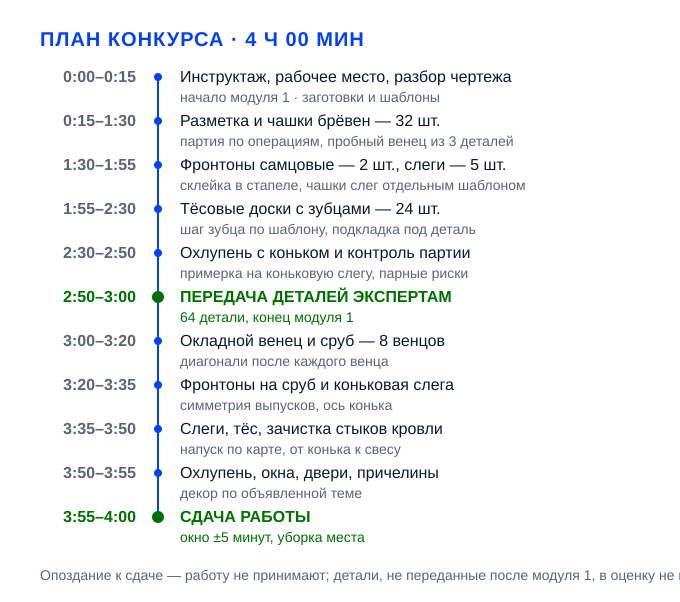
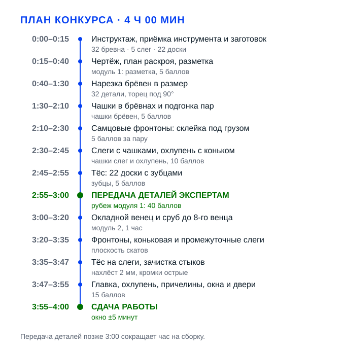
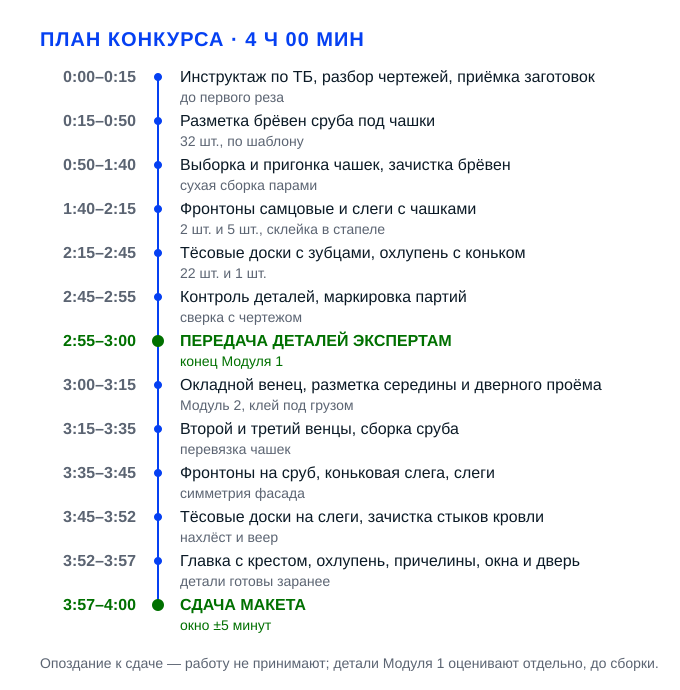

Макетчик художественных макетов (Р)
Задания ниже — официальные файлы «Абилимпикс» (источник: abilympics-russia.ru), разложенные по категориям. Решения написаны по тексту задания, регламенту и критериям оценки; в них указано, что именно проверяет эксперт.
Школьник
14–16 лет, базовый уровень заданияВыдержка из официального конкурсного задания: страницы, относящиеся к категории «Школьник» (стр. 3–4 источника).
Пошаговое решение
Модуль 1 отводит на изготовление деталей три часа, модуль 2 — час на сборку, и всё задание стоит сто баллов: сорок за детали и шестьдесят за макет. Школьник собирает макет деревянной избы самцовой конструкции — тридцать два бревна с чашками, два фронтона, пять слег, двадцать четыре тёсовые доски с зубцами и охлупень с коньком, всего шестьдесят четыре детали. Оценивают не красоту вообще, а проверяемые вещи: глубину чашек, плотность клеевых швов, равенство диагоналей сруба, ровность линии тёса и зачистку стыков кровли — по пять баллов за каждую операцию, плюс по пять за соблюдение времени и техники безопасности в каждом модуле. Декор может измениться на тридцать процентов задания, а размеры, форма и время — нет.

Задача 1. Пройти инструктаж, оснастить место и разобрать чертёжМодуль 1 · до 10 баллов
Первая задача не даёт ни одной готовой детали, но приносит до десяти баллов из ста и задаёт темп остальным трём часам. По конкурсному заданию школьник получает три часа на изготовление деталей и один час на сборку макета деревянной избы, и первые пятнадцать минут уходят на инструктаж по охране труда, раскладку инструмента и просмотр технологических карт. Именно здесь становится ясно, сколько времени останется на шестьдесят четыре детали — два фронтона, тридцать два бревна, пять слег, двадцать четыре тёсовые доски и один охлупень — и какие операции можно вести партиями, а какие придётся делать поштучно.
Действие 1.1. Оснастить рабочее место и проверить инструмент
Шаг 1.1.1
Надеваем халат тёмно-синего цвета из плотной ткани с водоотталкивающей пропиткой — по условиям компетенции участник привозит его с собой, поэтому комплект проверяется дома, а не на площадке. Застёгиваем халат на все пуговицы, включая манжеты: расстёгнутый рукав цепляется за заготовку и собирает стружку. Волосы убираем под головной убор полностью, кольца, браслеты и часы снимаем — при выборке чашки стамеской кольцо упирается в верстак и меняет ход кисти. Обувь закрытая, на нескользящей подошве, потому что пол в мастерской остаётся сухим только до первой партии опилок.
Спецодежда и безопасность оцениваются дважды: пять баллов за технику безопасности в модуле 1 и ещё пять в модуле 2 — десятая часть итоговых ста баллов зависит от того, как участник ведёт себя у верстака. Халат с пропиткой защищает от клея и мелкой стружки, а убранные волосы и снятые украшения — не формальность: ручная ножовка и стамеска при неверном движении травмируют именно кисть. Наблюдение ведётся весь конкурс.
Халат застёгнут до последней пуговицы, манжеты застёгнуты, волосы не выбиваются ни спереди, ни сзади, украшений на руках нет, обувь закрытая. Попросите волонтёра посмотреть на вас со спины: затылок — самое частое место, где остаётся открытая прядь. Проверьте, что рукав не свисает на ладонь, иначе он будет мешать держать ножовку и уводить полотно.
Классическая ошибка — прийти в футболке и спортивных штанах, рассчитывая надеть халат «когда начнём»: время на это уйдёт из модуля, а балл за спецодежду уже снят. Вторая — оставить кольцо, потому что «оно не мешает»: при первом же запиле оно бьётся о стусло, и участник либо травмирует палец, либо бросает пропил на середине, портя торец.
Эксперт смотрит на участника до старта, отмечая полноту комплекта, и возвращается к этому критерию в конце каждого модуля: важно, остаётся ли халат застёгнутым к третьему часу работы, когда становится жарко и хочется распахнуть ворот.
Шаг 1.1.2
Раскладываем инструмент по трём зонам верстака и не меняем порядок до конца модуля. Слева — режущий инструмент: ножовка по дереву с мелким зубом, стамеска на 8–10 мм, нож-косяк, лобзик для зубцов. Справа — разметка и отделка: угольник, линейка, циркуль, карандаш, шило, напильник, надфиль, шкурка зернистостью 120 и 240. В центре — клей ПВА в носике с тонким кончиком, кисть, груз и прижимные клинья. Заготовки ставим торцом к себе стопкой по размерам, а обрезки складываем в отдельный лоток, не на пол.
Рациональная организация рабочего места — прямое требование к квалификации школьника, а беспорядок стоит времени: поиск угольника посреди работы отнимает минуты, которых в трёх часах на шестьдесят четыре детали нет. Кроме того, инструмент, лежащий поперёк верстака, цепляется за заготовку при повороте, и деталь падает на пол — потеря, которую уже не восстановить. Порядок оценивается и в модуле 2, где на сборку отведён всего один час.
На верстаке нет инструмента, который не понадобится в этом модуле; каждый предмет лежит на своём месте и не перекрывает рабочую зону 30–40 см перед тисками; стружка убрана в лоток, а не сметена на пол. Пройдите по зоне глазами: справа от тисков должно быть пустое место под заготовку длиной в бревно, иначе деталь некуда положить.
Самый частый провал — свалить всё в одну кучу «потом разберусь»: в куче ножовка лежит лезвием вверх, и первое неосторожное движение даёт порез, за который снимают баллы по технике безопасности. Вторая ошибка — держать банку с клеем открытой: кисть падает, ПВА растекается под заготовки, и детали прилипают к верстаку.
Эксперт проходит по площадке в первые минуты и смотрит на зоны: есть ли отдельное место под разметку, под обрезки, под клей. Ближе к концу модуля он смотрит ещё раз — сохранился ли порядок или верстак превратился в склад стружки.
Шаг 1.1.3
Проверяем каждый инструмент руками до первого движения. Полотно ножовки должно быть натянуто, зубья — без выкрошенных вершин, рукоятка — без трещин у заклёпки. Стамеску проверяем по ногтю: снятая фаска должна снимать стружку, а не скользить. Угольник прикладываем к заводскому торцу рейки и смотрим на просвет, затем переставляем на 180 градусов: щели быть не должно ни в одном положении, иначе вся разметка уйдёт вкось. Напильник и надфиль пробуем на сухой рейке — насечка не должна забиваться стружкой после первых движений.
Тупой инструмент — испорченная деталь: стамеска, которая давит вместо резания, скалывает волокна на кромке чашки, а ножовка с уведённым полотном даёт пропил вкось, и бревно уходит в брак. Работа выполняется только исправным и заточенным инструментом — это условие критерия по технике безопасности на пять баллов. Правку делают до старта: в конкурсное время на неё уйдёт чужой ресурс.
Стамеска снимает с сухой рейки ровную стружку без рывка; угольник даёт ровную линию без просвета в обоих положениях; ножовка пилит по линии, не уходя в сторону, за два-три движения. Если инструмент не проходит проверку — меняем его сейчас, а не после первой испорченной детали, потому что замена позже требует разрешения эксперта.
Самая дорогая ошибка — начать работу инструментом, который «вроде режет»: через двадцать минут выясняется, что каждую чашку приходится доводить шкуркой, и на партию из тридцати двух брёвен уходит лишний час. Вторая ошибка — пытаться заточить стамеску на наждаке без охлаждения: перегрев отпускает металл, и кромка садится через пять минут.
Эксперт оценивает работу исправным и заточенным инструментом, а не наличие набора: он смотрит, как идёт полотно по разметке и остаётся ли кромка ровной. Отдельно фиксируется, пользуется ли участник стуслом при отпиливании и зажимает ли деталь в верстаке.
Действие 1.2. Прочитать чертёж и выстроить план на четыре часа
Шаг 1.2.1
Берём чертёж и технологические карты и выписываем на лист три колонки: наименование детали, количество, номинальный размер. По конкурсному заданию получается ровно шестьдесят четыре детали: два фронтона самцовых, тридцать два бревна с чашками, пять слег с чашками, двадцать четыре тёсовые доски и один охлупень. Дальше читаем не общий вид, а сечения: смотрим, где проходит ось бревна, где начинается чашка и на какую глубину она выбирается. Размеры берём с чертежа, а не с соседней уже готовой детали, потому что ошибка в этом случае размножается по всей партии.
Критерий «правильная и качественная разметка заготовок» стоит пять баллов, и проверяется он не на одной детали, а на всей партии: если шаблон снят неверно, ошибка тиражируется тридцать два раза. Умение читать чертежи и эскизы деталей входит в требования к квалификации школьника, поэтому эксперт ждёт, что участник понимает, откуда взят размер, а не повторяет движение за наставником.
Список деталей сведён с чертежом по количеству: два плюс тридцать два плюс пять плюс двадцать четыре плюс один равно шестидесяти четырём. Проверьте по сечениям, что чашка в бревне и чашка в слеге — разные по диаметру; если в карте указаны разные радиусы, одним шаблоном их делать нельзя. Убедитесь, что все размеры на чертеже даны в одной системе.
Частая ошибка — читать чертёж по общему виду, не заглядывая в сечения: тогда чашка выходит полукруглой на глаз, и при укладке бревно садится не по линии, а с перекосом. Вторая — пересчитывать размеры «по масштабу» в уме и ошибиться вдвое: макет, собранный из деталей разного масштаба, не даст ни ровного венца, ни ровной кровли.
Эксперт подходит в первые двадцать минут и просит показать, где на чертеже взят размер чашки. Если участник показывает сечение и называет глубину — вопросов нет; если показывает общий вид и говорит «примерно так», балл за разметку уже под риском.
Шаг 1.2.2
Делим сто восемьдесят минут модуля на шестьдесят четыре детали — получается меньше трёх минут на деталь, и это главный аргумент за партийную работу. Строим последовательность так: сначала разметка всей партии брёвен, затем запил всех торцов, затем выборка чашек, затем контроль — по одной операции на всю партию, а не «деталь целиком от начала до конца». Отдельно резервируем двадцать минут в конце на контроль и передачу деталей экспертам и десять минут на уборку и выкладку инструмента. На тёс и слеги времени уходит больше, чем кажется: их двадцать девять штук, и они дают десять баллов.
Соблюдение времени конкурсного задания — отдельный критерий на пять баллов в каждом модуле, но реально оно стоит дороже: недоделанный модуль 1 не даёт собрать модуль 2, где разыгрывается шестьдесят баллов. Партийная работа по операциям экономит время на перестановке инструмента: один раз достали стамеску и обработали тридцать два бревна, а не тридцать два раза меняли инструмент.
К середине модуля, то есть через девяносто минут, должно быть готово не меньше половины партии — около шестнадцати брёвен с чашками и разметка слег. План записан на листе и лежит на виду: если через час вы не можете сказать, что делаете дальше, план не работает. Помечайте фактическое время по операциям — это даст поправку на вторую половину.
Типичная ошибка — делать детали «по одной до готовности»: на первой уходит пятнадцать минут, и к третьему часу готова половина сруба. Вторая ошибка — оставить контроль и передачу на последние минуты: экспертам нужно время на оценку деталей между модулями, и деталь, переданная с опозданием, может вообще не попасть в оценку.
Эксперт смотрит не только на детали, но и на темп: есть ли план, идёт ли работа партиями, остаётся ли время на сборку. Критерий по времени фиксируется по факту передачи деталей, а не по словам участника.
Шаг 1.2.3
Готовим заготовки и шаблоны: рейки калибруем по толщине, отбраковываем кривые и с сучками в зоне реза, потому что сучок тянет полотно в сторону и даёт скол на кромке. Режем заготовки с припуском три-пять миллиметров по длине: припуск снимается при подгонке, а укоротить уже напиленное нельзя. Из плотного картона или тонкой фанеры вырезаем два шаблона — чашки и зубца тёсовой доски — и на обоих пишем размеры, чтобы не перепутать. На верстаке проводим базовую линию и отмеряем всё от неё: одна база на всю партию гарантирует, что детали совпадут.
Разметка от одной базы — то, что отличает макет, который собирается, от набора деталей, которые не стыкуются. Шаблон на чашку экономит примерно минуту на каждой детали: тридцать два бревна и пять слег дают почти сорок минут экономии, а это две трети времени, нужного на сборку. Припуск и отбраковка заготовок напрямую влияют на критерии по разметке и по качеству чашек — по пять баллов каждый.
Шаблон чашки прикладывается к бревну без просвета по дуге, шаблон зубца даёт одинаковый шаг при переносе на три доски подряд. Все заготовки одной партии одинаковы по длине с точностью до миллиметра — проверьте линейкой или штангенциркулем первые пять. На шаблоне написан размер, а не «тот, который побольше».
Ошибка — нарезать заготовки точно в размер, без припуска: при подгонке чашки деталь садится ниже расчётного уровня, и венец идёт с уступом. Вторая — сделать шаблон «на глаз» по первой детали, а не по чертежу: тогда вся партия повторяет ошибку первой детали, а не ошибку чертежа.
Эксперт ищет на столе шаблон: его наличие и аккуратность сразу показывают, работает участник по чертежу или импровизирует. Отдельно он смотрит, есть ли на деталях базовая риска — по ней видно, что разметка велась системно.
Задача 2. Изготовить брёвна с чашками для сруба — 32 штукиМодуль 1 · 10 баллов
Тридцать два бревна — самая большая партия модуля и его ядро: без них нет сруба, а без сруба нечего ставить на оценку во втором модуле. Каждое бревно несёт две чашки, выбранные на концах, и вся партия должна быть взаимозаменяемой по венцам. Здесь разыгрываются десять баллов из сорока — пять за разметку заготовок и пять за качество чашек, — но фактически от этой задачи зависит вся геометрия будущего макета. Работу ведём партиями по одной операции: так экономится время и сохраняется одинаковость деталей.
Действие 2.1. Разметить партию брёвен от одной базы
Шаг 2.1.1
Укладываем все тридцать две заготовки на верстак в один ряд, базовым торцом к упорной рейке, прижатой струбциной. От этой рейки отмеряем выпуск за угол сруба — участок бревна, который будет выступать за чашку: внутри одного венца он одинаков у всех брёвен, и именно по нему потом видно, ровно ли собран сруб. Линию проводим карандашом по угольнику от базового торца, а ось бревна прокалываем шилом: карандаш на круглой поверхности уводит на миллиметр-два, шило держит точку. На каждом бревне сразу пишем номер венца — позже, при сборке, искать нужную деталь в стопке будет некогда.
Разметка — первый критерий модуля, пять баллов, и она же определяет, сойдётся ли сруб: при разной длине выпуска концы будут выступать на разную величину, и макет потеряет признак рубленой избы. Тридцать два бревна делятся на венцы без остатка: при четырёх стенах это восемь венцов, и в одном венце не может быть брёвен разной длины — проверьте это по карте. Нумерация венцов превращает кучу заготовок в комплект.
Первые три бревна приложены друг к другу: базовые торцы на одной линии, метки выпуска совпадают, длина одинаковая с точностью до миллиметра. Ось проколота по центру — приложите линейку поперёк бревна, расстояние от оси до каждого края должно быть одинаковым. Метка венца читается и не смазана.
Разметить каждое бревно «по месту», без упорной рейки: детали выходят разной длины, и уже на втором бревне угол окладного венца расходится. Вторая ошибка — писать номер венца на торце, который потом срезается при подгонке: метка исчезает вместе с торцом, и партия превращается в набор безымянных заготовок.
Эксперт смотрит на упор и на базовую риску: если все брёвна размечены от одной рейки, партия будет ровной. Он также проверяет маркировку венцов — по ней видно, думал ли участник о сборке ещё в первом модуле.
Шаг 2.1.2
На каждом бревне размечаем две чашки, по одной у каждого конца, с той стороны, которой бревно ляжет на нижележащее. Шаблон прикладываем так, чтобы его кромка совпала с риской выпуска, обводим по дуге одной тонкой линией и проводим две боковые риски — это глубина чашки. Глубину берём равной радиусу нижележащего бревна: если выбрать меньше, венец сядет с зазором и сруб будет качаться, если больше — бревно провалится и стена пойдёт волной. Верхнюю часть бревна над чашкой не задеваем: это тело детали, и снятое с него уже не вернуть.
Критерий «правильное и качественное изготовление чашек для брёвен» — пять баллов, и чашка здесь самая ответственная операция модуля: именно она делает макет рубленым, а не склеенным из брусочков. Чашка глубиной в радиус даёт плотное прилегание по всей дуге, а значит — ровный венец и правильную высоту сруба, от которой потом считаются фронтоны и кровля. Ошибка в разметке чашки на одном бревне исправляется, на партии — нет.
Шаблон приложен без просвета, дуга обведена одной линией без двойного контура, боковые риски глубины видны и одинаковы на обоих концах. Проверьте на первом бревне: приложите его к контрольному — просвет по дуге должен быть не больше половины миллиметра и равномерным по всей длине.
Ошибка — обвести шаблон дважды, сдвинув его на миллиметр-два: получается двойная линия, и при выборке стамеска идёт по внутренней, снимая лишнее дерево. Вторая — разметить чашки с одной стороны бревна, а выбирать с другой: деталь переворачивается, и чашка оказывается на верхней грани, где её быть не должно.
Эксперт проверяет разметку выборочно, на двух-трёх брёвнах из партии: смотрит совпадение дуг и одинаковость глубины. Особенно его интересует, размечены ли чашки с учётом выпуска — это показывает понимание конструкции сруба, а не механическое копирование.
Шаг 2.1.3
Прежде чем размечать все тридцать два бревна, доводим до готовности три: размечаем, выбираем чашки, прикладываем друг к другу и смотрим стык. Если три бревна садятся в венец ровно, шаблон верный и партию можно запускать; если появился зазор или перекос — исправляем шаблон сейчас, а не после тридцатой детали. Только после этой проверки размечаем остальные двадцать девять и переходим к запилу, то есть партия запускается одной операцией на всю стопку.
Три детали вместо тридцати двух — страховка, которая стоит пять минут и спасает весь модуль: ошибка в шаблоне, размноженная на партию, не исправляется, потому что времени на переделку в трёхчасовом модуле нет. Такой порядок — часть технологической последовательности, которую участник обязан уметь составлять: сначала опытный образец, потом серия. Эксперт видит в этом понимание технологии, а не просто старательность.
Три бревна, сложенные в венец, дают ровную линию без уступов, просвет в стыке не больше половины миллиметра, выпуски за чашку одинаковые. Если контрольный венец качается на столе — чашка мельче нужной; если бревно проваливается ниже уровня — глубже. Проверка занимает две минуты и делается до разметки остальных.
Самый дорогой вариант — разметить сразу все тридцать два бревна, а потом обнаружить, что шаблон снят с чужой детали: партия уходит в брак целиком, и модуль 1 закрывается с нулём по критерию чашек. Вторая ошибка — проверять венец на глаз, не прикладывая детали: зазор в полмиллиметра глазом не виден, а на собранном срубе читается как щель.
Эксперт любит подходить именно в этот момент: если у участника на верстаке лежит пробный венец из трёх брёвен, видно, что он проверяет технологию до серии, а не после. Для оценки такое отношение читается дороже, чем скорость.
Действие 2.2. Запилить и выбрать чашки
Шаг 2.2.1
Зажимаем бревно в верстаке так, чтобы линия пропила была в двадцати-тридцати сантиметрах от края и хорошо видна, а под полотно подкладываем стусло или упорную рейку: по правилам охраны труда при отпиливании ножовкой применяется стусло для опоры полотна. Пилу ставим на линию большим пальцем как упором, первый пропил делаем короткими движениями без нажима, чтобы полотно не соскочило. Дальше ведём ровно, на полную длину полотна, с нажимом только на рабочем ходе, и у линии глубины чашки останавливаемся, не заходя за неё, потому что дно выбирается стамеской.
Правильный запил — половина качества чашки: если полотно ушло от риски на миллиметр, стамеске придётся снимать лишнее с одной стенки, и чашка станет асимметричной, а значит, бревно сядет с перекосом. Стусло и зажим — не только удобство: это прямое требование техники безопасности, за которое дают пять баллов в модуле, а незажатая деталь при запиле проворачивается и рвёт пропил. Десять секунд на зажим экономят минуту на переделку.
Пропил идёт точно по линии, стенки пропила параллельны, дно ровное, сколов на выходе полотна нет. Проверьте угольником: торец пропила должен быть перпендикулярен оси бревна, а не завален на десять-пятнадцать градусов, как бывает при работе на весу. Полотно не заклинивает в пропиле.
Пилить без зажима, придерживая бревно рукой: деталь проворачивается, полотно заклинивает, на боковой грани появляется скол, который уже не убрать. Вторая ошибка — пропилить сразу на полную глубину чашки: дно получается рваным, а стамеске не остаётся материала для чистовой подрезки, и кромка крошится.
Эксперт смотрит на два признака: используется ли стусло и зажата ли деталь. По технике безопасности это фиксируется отдельно, а по качеству видно по ровности стенок пропила на любом бревне партии.
Шаг 2.2.2
Выбираем чашку полукруглой стамеской послойно: сначала снимаем один-полтора миллиметра у краёв пропила, потом середину, потом снова края, пока не подойдём к линии глубины. Стамеску держим фаской вниз, режем от края к середине, а не наоборот, и работаем двумя руками — правая на рукоятке, левая на лезвии как ограничитель хода. Последний слой снимаем тонкой стружкой почти без нажима, чтобы дно было гладким; на одну чашку уходит восемь-десять срезов, и торопиться здесь нечем, потому что цена ошибки — вся деталь.
Качество чашки оценивается в пять баллов, и оценивают именно посадку: рваное дно, сколы на кромке и ступеньки не дают брёвнам сесть плотно. Послойная выборка нужна потому, что дерево не прощает спешки: срезав лишние два миллиметра, участник получает чашку глубже расчётной, и венец проваливается, утягивая за собой весь сруб. Работа двумя руками — требование безопасности при резании стамеской, за нарушение снимают баллы по технике.
Дно чашки гладкое, без сколов, кромка без бахромы, глубина равна радиусу с точностью до половины миллиметра — проверяется шаблоном или штангенциркулем по центру. Приложите бревно к контрольному: оно садится без качки, а по дуге остаётся тонкий равномерный просвет. Волокна на дне срезаны, а не вырваны.
Резать стамеской на себя с усилием: лезвие срывается, уходит в тело бревна и оставляет глубокую царапину на лицевой грани, которую уже не замаскировать. Вторая ошибка — добирать глубину шкуркой: шкурка скругляет кромку, чашка теряет форму, и бревно садится только по краям, качаясь в середине.
Эксперт берёт в руки два-три бревна и смотрит дно чашки на свет: ровное дно и чистая кромка видны сразу, как и следы сорванной стамески. Отдельно отмечается, держит ли участник деталь зажатой при выборке.
Шаг 2.2.3
Притираем каждое бревно по месту: укладываем его на контрольное бревно и покачиваем — качка означает, что чашка где-то не добрана. Находим точку касания по следу от нажатия, снимаем треть-полмиллиметра стамеской или рашпилем и повторяем, пока качка не исчезнет. Если бревно ложится плотно, но с усилием, кромку чашки слегка проходим шкуркой двести сорок — не больше, иначе появится зазор, и деталь начнёт качаться вдоль оси.
Подгонка превращает набор деталей в сруб: критерий «сборка и склеивание сруба» стоит пять баллов и оценивается по плотности прилегания. Непритёртая чашка даёт качку, и при склейке бревно фиксируется с перекосом, который потом не исправить без разрушения клеевого шва. Притирка до склейки экономит время в часовом модуле сборки, где каждая минута на счету.
Бревно лежит на контрольном без качки, просвет по дуге не больше половины миллиметра и равномерный по всей длине чашки. Покачайте деталь в двух направлениях — вдоль и поперёк: качки не должно быть ни там, ни там. Проверьте, что при подгонке не изменилась глубина посадки: деталь не должна проваливаться ниже линии венца.
Доводить посадку силой, прижимая бревно: древесина сминается, чашка принимает форму соседнего бревна, и после склейки венец идёт с уступом, который видно на фасаде. Вторая ошибка — снимать шкуркой «пока не сядет»: шкурка убирает материал неравномерно и скругляет кромку, из-за чего посадка становится неопределённой.
Эксперт проверяет посадку на собранном узле, а не на отдельных деталях: покачивает венец и смотрит на просвет между брёвнами. Следы аккуратной подгонки — тонкая стружка и отсутствие вмятин — говорят в пользу участника.
Действие 2.3. Проконтролировать партию и сохранить её до сборки
Шаг 2.3.1
Раскладываем готовые брёвна в один ряд и проверяем партию по трём признакам: длина, глубина чашек, чистота кромок. Длину проверяем выборочно у пяти брёвен, глубину — шаблоном у каждого, кромки — на свет, поворачивая деталь. Отбракованные брёвна откладываем в отдельную стопку и разбираемся с причиной: если брак единичный, деталь можно исправить, если повторяется — проблема в шаблоне или в инструменте, и её надо найти сейчас, пока не разменян третий час модуля.
Партия из тридцати двух брёвен даёт пять баллов за чашки и ещё пять за разметку, причём оценка ставится по выборке: эксперту достаточно двух-трёх деталей, чтобы понять уровень всей партии. Поэтому одна небрежная деталь в стопке может стоить дороже, чем три идеальных, — контролировать нужно всё, а не то, что лежит сверху. Брак, найденный сразу, ещё можно переделать, а найденный при сборке — уже нет.
Все тридцать два бревна разложены по венцам, длина в партии одинаковая, чашки одинаковой глубины, сколов и рваных кромок нет. Отбракованных деталей не больше одной-двух, и по ним понятна причина. Если брак идёт серией, работа останавливается и проверяется шаблон — это дешевле, чем переделывать партию.
Проверять только верхнюю деталь стопки: остальные тридцать одна остаются без контроля, и на оценку может попасть именно та, что с сорванной кромкой. Вторая ошибка — обнаружив брак, продолжать работу тем же инструментом: количество брака растёт, а время уходит, и к концу модуля не остаётся ни деталей, ни запаса по времени.
Эксперт берёт детали из середины стопки, а не сверху: это сразу показывает, контролировал ли участник партию или только её видимую часть. Отдельно отмечает, отложен ли брак в сторону или подмешан к годным деталям.
Шаг 2.3.2
Маркируем каждое бревно номером венца и стороны — например, первая стена, третий венец — и укладываем в стопку по венцам, а не в общую кучу. Стопку ставим на подкладку, чтобы торцы не набрали влаги и грязи с верстака, а сверху накрываем листом, если рядом идёт работа с клеем: капля ПВА на готовой детали видна после сборки и портит внешний вид. Детали одного венца держим рядом или связываем: при сборке венец берётся целиком, и это экономит минуты в часовом модуле.
Порядок в деталях — продолжение критерия разметки: по нему эксперт видит, умеет ли участник работать серийно. Но главное здесь время: в модуле 2 на сборку отведён ровно час, и если на поиск нужного бревна уходит по двадцать секунд, тридцать две детали съедают десять минут из шестидесяти. Маркировка защищает от путаницы, когда брёвна разной длины предназначены разным стенам.
На каждом бревне есть читаемая метка, стопки разделены по венцам, детали не лежат на голом верстаке. Возьмите наугад три метки и проверьте, что деталь из стопки соответствует надписи. Если метки читаются с трудом уже сейчас, при сборке их не разберут вовсе.
Сложить все брёвна в одну кучу и понадеяться на «я и так помню»: через час, после работы над фронтонами и тёсом, память не поможет, и сборка начнётся с сортировки, а не с окладного венца. Вторая ошибка — маркировать карандашом по клеевой поверхности: метка смазывается и переносится на пальцы.
Эксперт смотрит на организацию деталей перед подачей на оценку: аккуратные стопки по венцам читаются как профессиональный подход. Отдельно фиксируется, нет ли клеевых пятен на лицевых гранях и следов пальцев на торцах.
Шаг 2.3.3
Стружку и опилки убираем щёткой-смёткой в лоток каждые пятнадцать-двадцать минут, а не один раз в конце: слой стружки скрывает линии разметки и поднимается пылью при каждом движении. Не сдуваем стружку ртом и не сгребаем рукой — это прямо запрещено правилами охраны труда, которые участник подтверждает на инструктаже. Режущий инструмент после работы с брёвнами убираем на место: стамеску — в подставку или колпачок, ножовку — зубьями от себя, чтобы не тянуться через лезвие.
Чистота на рабочем месте — часть критерия по технике безопасности, пять баллов в модуле 1. Практическая сторона важнее: стружка под заготовкой работает как абразив и царапает лицевые грани, а стружка на линии разметки — самая частая причина запила на миллиметр мимо. Кроме того, клей на стружке схватывается за пару минут и потом переносится на чистые детали.
Верстак чист в рабочей зоне, лоток с отходами не переполнен, пол вокруг не засыпан опилками, инструмент на своих местах. Проведите ладонью по верстаку — стружки на ладони быть не должно. Проверьте, что под стопкой готовых деталей нет стружки и капель клея.
Убрать всё один раз в конце модуля: к этому моменту стружка уже попала в клеевые швы и поцарапала лицевые грани, а балл за организацию места снят по ходу работы. Вторая ошибка — сдувать опилки: пыль летит в лицо и на соседние детали, и это фиксируется как нарушение требований охраны труда.
Эксперт проходит по площадке несколько раз за модуль и смотрит на пол и верстак: чистая зона к третьему часу — признак дисциплины. Отдельно фиксируется, убирает ли участник стружку в лоток или сметает её на пол.
Задача 3. Изготовить фронтоны, слеги, тёс и охлупень и сдать деталиМодуль 1 · 20 баллов
Вторая половина первого модуля — это всё, что делает из сруба избу: два фронтона самцовых, пять слег с чашками, двадцать четыре тёсовые доски с зубцами и охлупень с коньком. Здесь разыгрываются двадцать баллов из сорока — по пять за склеивание фронтонов, за чашки слег, за охлупень и за зубцы тёсовых досок, — и именно эти детали эксперт рассматривает ближе всего, потому что они видны на фасаде и на кровле. Логика работы та же, что с брёвнами: сначала партия одной операцией, потом контроль, и только потом передача деталей экспертам.
Действие 3.1. Склеить фронтоны самцовые — 2 штуки
Шаг 3.1.1
По чертежу определяем угол наклона кровли и переносим его на две доски каждого фронтона: торец каждой доски запиливается под половину угла, чтобы в вершине получился ровный стык без щели. Разметку ведём угольником и транспортиром от базового торца, а не на глаз, и оставляем припуск один миллиметр по линии стыка. Обе доски одного фронтона должны быть одинаковой толщины — если одна толще на полмиллиметра, после склейки на лицевой стороне появится уступ, который придётся снимать рубанком и который почти наверняка уведёт плоскость.
Критерий «правильное и качественное склеивание фронтонов самцовых для крыши» — пять баллов, и он оценивается по двум признакам: совпадению угла с чертежом и чистоте шва. Фронтон — торцевая стена, продолжающая сруб вверх, поэтому его геометрия задаёт всю кровлю: если угол ушёл на два-три градуса, слеги лягут с перекосом, а тёс пойдёт волной. Припуск по линии стыка нужен потому, что подгонять склеенный узел уже нельзя без разрушения шва.
Угол в вершине совпадает с чертежом с точностью до одного градуса — проверяется транспортиром на пробной склейке. Торцы запилены ровно, без скола на выходе полотна, толщина досок одинаковая. Приложите доски друг к другу без клея: щель по стыку не должна просвечивать на длине больше миллиметра.
Запилить торец на глаз, «по месту»: угол в вершине расходится, и при склейке образуется клиновая щель, которая после зачистки превращается в тёмную полосу на лицевой стороне. Вторая ошибка — взять доски разной толщины: после склейки уступ на фасаде читается как небрежность, и балл за качество склеивания снимается независимо от прочности шва.
Эксперт прикладывает угольник или шаблон к вершине фронтона: несовпадение угла видно сразу и фиксируется по критерию качества склеивания. Он также смотрит на торец стыка с обратной стороны — там щель заметнее, чем на фасаде.
Шаг 3.1.2
Склеиваем фронтон в стапеле: две рейки, прикрученные к доске-основанию под нужным углом, держат доски без сдвига, пока клей схватывается. Клей ПВА наносим тонким слоем на оба торца кистью, даём полминуты впитаться, соединяем и прижимаем струбциной или грузом через прокладку из бумаги, чтобы не оставить вмятины. Первые десять-пятнадцать минут узел не трогаем: именно в это время шов набирает начальную прочность, а любое движение даёт сдвиг, который потом виден как ступенька.
Склеивание фронтонов — отдельный критерий на пять баллов, и оценивают его по плотности шва и отсутствию сдвига: именно стапель отличает аккуратную склейку от «приложил и подержал». Прокладка под струбцину нужна из-за мягкости липы и подобных пород: металл оставляет вмятину глубиной в полмиллиметра, а снимать её придётся шкуркой по всей плоскости. Выдержка под прижимом — это технология, а не перестраховка.
Шов плотный по всей длине, клей выступил равномерной тонкой полоской и убран сразу, сдвига досок нет — базовая линия на обеих досках остаётся прямой. Через пятнадцать минут узел держит форму при подъёме за одну доску и не «складывается». Вмятин от струбцины нет.
Склеить и сразу начать обрабатывать узел: шов ещё не набрал прочности, доски сдвигаются на миллиметр-два, и вершина фронтона «клюёт» в сторону. Вторая ошибка — нанести клей толстым слоем: излишки выдавливаются на лицевую сторону, и после зачистки на этом месте остаётся тёмное пятно, которое не закрашивается.
Эксперт смотрит на шов с торца и на лицевую сторону: тонкая клеевая линия без пятен — признак правильной склейки. Отдельно фиксируется, использовался ли прижим и прокладка: без них шов либо сдвинут, либо смят.
Шаг 3.1.3
После схватывания снимаем прижим и обрабатываем кромки: срезаем припуск по линии стыка ножом-косяком, затем проходим шкуркой сто двадцать вдоль волокна и двести сорок по кромке, чтобы убрать ворс. Складываем два фронтона вместе лицевыми сторонами и проверяем, что они совпадают по контуру: пара должна быть одинаковой, потому что стоит на противоположных торцах и видна одновременно. Если один выше другого на миллиметр — снимаем лишнее с большего, а не подгоняем меньший, иначе уйдёт угол.
Пара одинаковых фронтонов — условие симметрии всей избы: эксперт смотрит на макет с двух сторон, и разница в два-три миллиметра читается как ошибка сборки, хотя детали делались в первом модуле. Обработка кромки влияет на внешний вид и на качество склеивания, за которое дают пять баллов. Снимать припуск ножом, а не шкуркой, важно потому, что шкурка скругляет линию стыка и делает вершину мягкой, «зализанной».
Два фронтона, сложенные вместе, совпадают по контуру без просвета; вершина острая, без скругления; кромки гладкие на ощупь, ворс снят. Угол в вершине тот же, что на чертеже. Лицевые стороны чистые, без клеевых пятен.
Подгонять меньший фронтон «чтобы сравнялось»: у него уходит угол, и на кровле один скат становится круче другого. Вторая ошибка — снимать ворс поперёк волокна: на кромке появляются царапины, которые после тонирования проступают тёмными полосами.
Эксперт ставит фронтоны рядом и смотрит на контур: пара должна читаться как одна деталь, размноженная дважды. Он также проверяет кромку на ощупь — скруглённая вершина считается дефектом обработки.
Действие 3.2. Изготовить слеги с чашками — 5 штук
Шаг 3.2.1
Слеги — горизонтальные брёвна кровли, их по заданию пять: одна коньковая и четыре рядовые, по две на каждый скат. Размечаем чашки тем же способом, что на брёвнах сруба, но шаблон берём другой: диаметр слеги меньше диаметра бревна, и чашка, снятая шаблоном от бревна, даст зазор. Шаблон прикладываем от риски выпуска, обводим одной линией, глубину наносим боковыми рисками. Все пять слег размечаем подряд, одной операцией, чтобы чашки стояли на одной базе.
Критерий «правильное и качественное изготовление чашек для слег» — пять баллов, и он выделен отдельно именно потому, что здесь чаще всего переносят шаблон от брёвен и получают неверную глубину. Чашка слеги работает иначе: она должна лечь на фронтон самцовый, а не на бревно, поэтому её глубина считается от размера фронтона. Пять слег задают плоскость скатов, и любая разница в глубине ведёт к тому, что тёс ляжет с уступом.
Шаблон слеги приложен к заготовке без просвета, глубина одинакова на всех пяти деталях, риски выпуска совпадают. Слега, уложенная на контрольный фронтон, садится без качки. Проверьте, что чашки на всех слегах смотрят в одну сторону — иначе при укладке две детали придётся переворачивать.
Разметить слеги шаблоном от брёвен: чашка выходит глубже нужной на один-два миллиметра, и слега проваливается, ломая линию ската. Вторая ошибка — разметить чашки с разных сторон у разных слег: при укладке кровли половина деталей не встаёт на место без переворота, а переворот меняет выпуск.
Эксперт сравнивает чашку слеги с чашкой бревна: они должны отличаться, и если участник этого не понял, видно по одинаковым выемкам. Он также смотрит на маркировку — коньковая слега обычно отличается от рядовых.
Шаг 3.2.2
Выбираем чашки так же послойно, как на брёвнах, но с поправкой на размер: слега тоньше, поэтому срезов меньше, четыре-шесть на чашку, и стамеску берём на шесть-восемь миллиметров, чтобы не срезать лишнее с соседней стенки. Режем от края к середине, последний слой — тонкой стружкой. Затем притираем каждую слегу по месту: укладываем на фронтон и покачиваем, снимая точку касания рашпилем по следу от нажатия.
Пять баллов за чашки слег начисляются за посадку, а не за внешний вид выемки: слега должна лежать на фронтоне плотно, без качки, иначе тёс, приклеенный к ней, повторит перекос. Тонкая деталь прощает ошибку хуже толстой: снятый лишний миллиметр здесь — это уже четверть глубины чашки, и деталь уходит в брак. Притирка до склейки экономит время в модуле сборки, где на всё отведён час.
Дно чашки гладкое, кромка целая, глубина одинаковая на всех пяти слегах — проверьте шаблоном по центру. Слега лежит на фронтоне без качки, просвет по дуге не больше половины миллиметра. Волокна срезаны, а не вырваны: на дне нет «бахромы».
Работать стамеской на десять-двенадцать миллиметров на тонкой слеге: лезвие захватывает лишнее, чашка получается глубже, и слега садится ниже расчётной линии. Вторая ошибка — не притирать деталь, надеясь, что клей «стягнет»: клей не стягивает зазор в полмиллиметра, он просто заполняет его, и после высыхания шов виден светлой полосой.
Эксперт проверяет слеги в сборе с фронтоном: качает узел и смотрит на просвет. Отдельно отмечает, одинакова ли глубина чашек на всех пяти — партия из пяти деталей проверяется целиком, а не выборочно.
Шаг 3.2.3
Комплектуем слеги: отдельно откладываем коньковую — она длиннее рядовых и несёт на себе охлупень, — и четыре рядовые, по две на скат. Проверяем длину каждой детали по чертежу и подписываем: коньковая, первая пара, вторая пара. Рядовые слеги одной пары должны быть одинаковой длины с точностью до половины миллиметра, иначе на противоположных скатах получится разный вынос кровли, который виден на макете с торца.
Критерий «укладка и приклеивание на фронтоны горизонтальных брёвен — слег» стоит пять баллов и оценивается в собранном виде: если пара слег разной длины, кровля выглядит перекошенной. Комплектация по парам экономит время сборки, где детали берутся в определённом порядке. Коньковая слега отличается ещё и тем, что на неё ставится охлупень с коньком, поэтому её геометрия влияет на посадку самой заметной детали макета.
Пять слег разложены по группам, длины в парах совпадают, подписи читаются. Коньковая слега длиннее рядовых на величину, указанную в карте. Чашки на всех деталях смотрят в одну сторону и находятся на одной базе от торца.
Сложить все пять слег в одну стопку без подписей: при сборке коньковая уходит на скат, и кровля получает деталь с чужим выносом, а конёк потом не садится на место. Вторая ошибка — не проверять длину в парах: разница в два миллиметра на макете читается как перекошенный фасад.
Эксперт смотрит на комплектацию перед сборкой: подписанные пары говорят о том, что участник думал о монтаже. Отдельно проверяется, отличается ли коньковая слега от рядовых — по длине и по посадке.
Действие 3.3. Изготовить тёсовые доски с зубцами — 24 штуки
Шаг 3.3.1
Раскраиваем двадцать четыре дощечки: по двенадцать на скат, толщина одинаковая, ширина по чертежу. Рейку калибруем по толщине перед раскроем и отбраковываем заготовки с сучком в зоне зубца — сучок выкрашивается при выпиливании, и зубец отламывается. Режем с припуском по длине два-три миллиметра, потому что нижний ряд тёса подрезается по месту после укладки. Каждую дощечку проверяем на «пропеллер»: положите на ровную плиту и нажмите на угол — качания быть не должно.
Критерий «правильное и качественное изготовление зубцов для тёсовых досок» — пять баллов, но начинается он с раскроя: из кривой заготовки ровного ряда тёса не получится. Двадцать четыре доски при ширине ряда дают ровно ту площадь кровли, которая нужна по чертежу, поэтому недостача одной детали видна как просвет. Припуск по длине нужен потому, что тёс укладывается рядами с напуском, и нижний ряд подрезается уже на макете.
Двадцать четыре заготовки одинаковой толщины и ширины, без сучков в зоне зубца и без пропеллера. Длина с припуском, но одинаковая во всей партии — разброс не больше половины миллиметра, иначе ряд тёса пойдёт ступенькой. Отбракованные заготовки отложены отдельно.
Раскроить доски из первой попавшейся рейки, не проверив толщину: ряд тёса получается с уступами, и кровля выглядит сборной из разного материала. Вторая ошибка — оставить сучок у основания зубца: при выпиливании он выкрашивается, зубец отламывается, и деталь уходит в брак уже после раскроя, когда время потрачено.
Эксперт пересчитывает доски и проверяет партию на просвет: одинаковость толщины видна по линии ряда. Отдельно смотрит, нет ли на заготовках трещин у торцов — они дают скол при выпиливании зубца.
Шаг 3.3.2
Размечаем зубцы по шаблону: шаг зубца переносим на все двадцать четыре доски от одного базового торца, глубина пропила одинаковая, разметка ведётся карандашом по линейке, а не на глаз. Выпиливаем лобзиком или ножовкой с мелким зубом, держа полотно вертикально: наклон полотна на пять градусов уже даёт скошенный зубец, и в ряду это заметно. Режем от края к середине, чтобы не скалывать вершину, и подкладываем под деталь брусок-подкладку — на весу тонкая рейка вибрирует и рвётся.
Зубцы — декоративный элемент, но оцениваются отдельным критерием на пять баллов, потому что они видны на фасаде и на кровле и сразу показывают уровень аккуратности. Одинаковый шаг и глубина важны не меньше чистоты реза: ряд тёса с разным шагом читается как брак даже при идеально ровных зубцах. Брусок-подкладка и вертикальное полотно — условия чистого реза на тонкой рейке.
Шаг зубцов одинаковый на всех досках, глубина пропила одинаковая, вершины целые, без скола. Все двадцать четыре доски, сложенные в стопку, дают совпадающий профиль — это главная проверка партии. Полотно шло вертикально: боковые стенки зубца перпендикулярны плоскости доски.
Размечать каждый зубец отдельно «по линейке на глаз»: шаг уходит на полтора-два миллиметра, и ряд тёса выглядит как случайный набор. Вторая ошибка — пилить на весу без подкладки: тонкая рейка вибрирует, полотно рвёт волокно, и на лицевой стороне остаётся скол, который нельзя убрать, не укоротив зубец.
Эксперт складывает несколько досок в стопку и смотрит на профиль: совпадение видно сразу. Он также проверяет вершину зубца на скол — именно там чаще всего видна спешка.
Шаг 3.3.3
Зачищаем зубцы: шкуркой сто двадцать снимаем заусенец с лицевой стороны, двести сорок — по кромке, движения вдоль зуба, а не поперёк, чтобы не скруглить вершину. Складываем доски по двенадцать штук на скат, подписываем ряды: нижний, средний, верхний, потому что длина тёса в ряду может отличаться. Проверяем комплект на просвет по нижней кромке — она должна быть ровной у всех досок одного ряда.
Правильная и качественная зачистка стыков кровли оценивается отдельно, пять баллов в модуле 2, но начинается она здесь: если заусенец не снят, при укладке он не даёт доске сесть вплотную и оставляет светлую полосу. Комплектация по рядам экономит время монтажа и защищает от путаницы, когда двадцать четыре почти одинаковые доски лежат в одной стопке. Ровная нижняя кромка ряда — то, что видно на готовом макете как аккуратная кровля.
Зубцы гладкие на ощупь, вершины не скруглены, заусенца нет. Доски разложены по рядам и подписаны, нижние кромки в ряду совпадают по линии. Проверьте стопку на просвет: щелей между досками быть не должно, если они одинаковой ширины.
Зачищать поперёк зуба: вершина скругляется, и ряд тёса теряет чёткий ритм, который как раз и оценивают. Вторая ошибка — свалить все двадцать четыре доски в одну стопку: при монтаже берётся не та длина, и нижний ряд выступает за слегу на пять-десять миллиметров, портя линию кровли.
Эксперт проводит пальцем по зубцам: скругление и заусенец чувствуются без лупы. Отдельно смотрит, разложены ли доски по рядам — по этому видно, готовил ли участник монтаж заранее.
Действие 3.4. Изготовить охлупень с коньком и передать детали экспертам
Шаг 3.4.1
Охлупень — бревно, которым накрывается стык тёса на коньке; по заданию его одна штука, а конёк, то есть стилизованная голова коня, готовится заранее и привозится согласованным с главным экспертом. Берём ровную заготовку без сучков на лицевой стороне, размечаем по всей длине жёлоб: две параллельные риски на ширину коньковой слеги плюс один миллиметр на клей. Жёлоб выбираем полукруглой стамеской послойно, от края к середине, и проверяем глубину шаблоном каждые три-четыре сантиметра, чтобы он не получился клиновидным.
Критерий «правильное и качественное изготовление охлупня с коньком для кровли» — пять баллов, и охлупень — самая заметная деталь макета: он венчает кровлю и первым бросается в глаза на фотографии работы. Жёлоб должен садиться на коньковую слегу по всей длине, иначе останется щель, в которую видно клей. Ровная заготовка нужна потому, что кривизна охлупня на коньке читается как брак всей кровли.
Жёлоб ровный по всей длине, глубина одинаковая, шаблон ложится без просвета в любом месте. Охлупень, приложенный к коньковой слеге, садится без качки, просвет не больше половины миллиметра. Конёк на торце держится плотно, без щели у основания.
Выбирать жёлоб «на глаз» и получить клин: у одного конца охлупень садится, у другого висит, и на коньке появляется щель, которую нечем закрыть. Вторая ошибка — взять заготовку с сучком на лицевой стороне: при выборке жёлоба сучок выкрашивается, и на самом видном месте остаётся раковина.
Эксперт прикладывает охлупень к коньковой слеге и смотрит на просвет по всей длине: щель у торца — типичный дефект. Отдельно оценивается стык охлупня с коньком — там не должно быть клеевого наплыва.
Шаг 3.4.2
Примеряем охлупень на коньковую слегу до передачи деталей: укладываем, прижимаем рукой и проверяем, что он лежит по всей длине, а не качается на двух точках. Если качка есть — находим точку касания по следу и снимаем полмиллиметра стамеской, повторяя до плотной посадки. Отмечаем на охлупне и на слеге карандашом парные риски — по ним при сборке деталь встанет на место без поиска, и конёк окажется точно над фронтоном.
Примерка до передачи деталей экономит самый дорогой ресурс — время модуля сборки, где на всё отведён час и где переделка детали уже невозможна. Критерий по охлупню оценивается в собранном виде, и щель между ним и слегой видна на макете с любого ракурса. Парные риски — простой приём, который исключает перекос конька относительно оси избы.
Охлупень лежит на коньковой слеге без качки, просвет равномерный и не больше половины миллиметра. Парные риски нанесены и совпадают, конёк при укладке смотрит в ту же сторону, что указана в чертеже. Смещение вдоль слеги исключено: риски не дают детали «поехать».
Не примерять деталь и надеяться на авось: на сборке выясняется, что охлупень длиннее слеги, и подрезать его уже некогда. Вторая ошибка — поставить конёк «как красивее»: по чертежу он ориентирован по оси избы, и разворот на девяносто градусов читается экспертом как ошибка чтения чертежа.
Эксперт смотрит на примерку как на проверку понимания конструкции: если участник прикладывает охлупень к слеге ещё в первом модуле, у него на сборке не будет сюрпризов. Наличие рисок он отмечает отдельно.
Шаг 3.4.3
Передаём детали на оценку экспертам в конце первого модуля: раскладываем их по группам в том же порядке, что в конкурсном задании — фронтоны, брёвна по венцам, слеги, тёс по рядам, охлупень, — и называем количество каждой группы вслух. Всего должно быть шестьдесят четыре детали: два фронтона, тридцать два бревна, пять слег, двадцать четыре доски и один охлупень. Детали ставим на подкладку или лист, чтобы они не касались стружки на верстаке, и убираем с рабочей зоны инструмент.
Передача деталей на оценку — отдельный этап конкурсного задания, и порядок в этой передаче напрямую влияет на оценку модуля из сорока баллов: эксперту нужно быстро пересчитать и осмотреть детали, а не разбирать кучу. Названное вслух количество — это самопроверка: если участник не может перечислить, сколько он сделал, он не контролировал работу. Аккуратная выкладка также защищает детали от случайных повреждений в паузе между модулями.
Шестьдесят четыре детали разложены по группам, количество названо и совпадает с заданием, на деталях нет стружки и клеевых пятен. Рабочая зона свободна от инструмента, режущий инструмент убран. Эксперт может подойти и пересчитать каждую группу, не перекладывая детали.
Сдать детали кучей, из которой торчат концы и лежат обрезки: эксперт тратит время на разбор, а часть деталей может быть не замечена при оценке. Вторая ошибка — оставить на столе инструмент рядом с готовыми деталями: стамеска падает на фронтон и скалывает вершину, и деталь уходит в брак уже после передачи.
Эксперт оценивает детали именно в этот момент и по этой выкладке: он идёт по группам, проверяет количество и качество. Беспорядок на столе он читает как незавершённость работы, даже если детали сделаны хорошо.
Задача 4. Собрать сруб: окладной венец, брёвна, фронтоныМодуль 2 · 20 баллов
Второй модуль длится ровно час и стоит шестьдесят баллов из ста, то есть каждая минута здесь дороже, чем в первом модуле в три раза. Начинается он с окладного венца — основания сруба, от прямоугольности которого зависит всё остальное, — затем наращиваются брёвна, ставятся фронтоны самцовые и коньковая слега. Здесь работают не резцом, а клеем и прижимом, и главный навык — контролировать геометрию после каждого венца, а не в конце, когда исправлять уже нечего.
Действие 4.1. Уложить и склеить окладной венец
Шаг 4.1.1
Готовим основание: подокладную доску или лист, на котором будет стоять макет, проверяем на ровность — приложите линейку по диагонали, просвета быть не должно. Раскладываем брёвна окладного венца попарно: два длинных по фасаду, два коротких в торец, чашками вверх и вниз в соответствии с чертежом. Проверяем, что каждое бревно лежит своей чашкой на своём месте и выпуски за угол равномерные, а затем подписываем порядок укладки прямо на основании.
Окладной венец — первый и самый важный: он задаёт прямоугольность всего сруба, и ошибка в один-два градуса на восьми венцах превращается в перекос, который видно на макете как завалившийся угол. Критерий «правильная, качественная укладка и склеивание окладного венца из брёвен» — пять баллов, и оценивают его по ровности линий и равенству выпусков. Ровное основание нужно потому, что неровность в полмиллиметра даёт качку всей конструкции.
Брёвна разложены по чертежу, чашки совпадают с ответными чашками, выпуски за угол одинаковые со всех четырёх сторон. Основание ровное, детали лежат без качки. Порядок укладки подписан и понятен без пояснений.
Начать склейку сразу, не проверив основание: макет стоит с перекосом, и на фотографии видно, что изба «завалилась» на один угол. Вторая ошибка — перепутать длинные и короткие брёвна: венец получается не прямоугольным, а трапецией, и следующий венец уже не садится по чашкам.
Эксперт подходит к началу сборки и смотрит на основание и раскладку: ровная подложка и подписанный порядок говорят о том, что участник продумал монтаж. Перекос на первом венце он фиксирует сразу, потому что дальше его уже не исправить.
Шаг 4.1.2
Склеиваем венец по углам: клей ПВА наносим тонким слоем на обе сопрягаемые поверхности чашки, соединяем и слегка притираем деталь движением вдоль оси, чтобы клей распределился и вышел воздух. Прижимаем грузом через прокладку или стягиваем угловыми прижимами, проверяя, что детали не сдвинулись относительно разметки. Излишки клея убираем сразу влажной тряпкой, не дожидаясь, пока схватится.
Клеевой шов в чашке — единственное, что держит венец: гвозди в этой работе не применяются, и вся прочность макета зависит от площади контакта и качества склейки. Критерий на пять баллов оценивается по плотности соединения и отсутствию клеевых потёков на лицевых гранях. Притирка вдоль оси нужна потому, что клей ПВА требует тонкого слоя и контакта без воздушных карманов, иначе шов получается слабым и светлым.
Шов тонкий, клей вышел равномерной полоской по всей дуге чашки и убран. Детали не сдвинулись: линии венца прямые, углы совпадают с разметкой. При лёгком покачивании венец не расслаивается в углах, излишков клея на лицевых гранях нет, прокладка не оставила вмятин.
Нанести клей толстым слоем «чтобы держало»: шов получается толстым, при высыхании даёт усадку и трещину, а излишки выходят на лицевую грань тёмными пятнами. Вторая ошибка — прижать детали и сразу отпустить: без выдержки под грузом чашка «отпружинивает» на полмиллиметра, и венец теряет прямоугольность.
Эксперт смотрит на швы в углах: тонкая ровная клеевая линия — признак правильной склейки, толстый наплыв — признак спешки. Он также проверяет, не осталось ли клея на лицевых гранях, потому что после высыхания его уже не убрать без следа.
Шаг 4.1.3
Проверяем прямоугольность окладного венца по диагоналям: измеряем расстояние между противоположными углами и сравниваем два числа — они должны совпадать с точностью до одного миллиметра. Если диагонали разные, венец перекошен, и его нужно поправить сейчас, пока клей не схватился: сдвигаем угол на половину разницы и снова меряем. Затем даём швам пять-семь минут выдержки и только после этого начинаем наращивать следующие брёвна.
Равенство диагоналей — единственный надёжный способ проверить прямоугольность без угломера, и именно этот приём отделяет ровный сруб от перекошенного. Критерий «правильная, качественная сборка и склеивание сруба из брёвен» стоит пять баллов и оценивается по геометрии всего сруба, а геометрия начинается с первого венца. Выдержка швов нужна потому, что нагрузка от следующих венцов, положенная на не схватившийся клей, сдвигает детали.
Две диагонали венца равны с точностью до миллиметра, углы прямые, выпуски за угол одинаковые. Венец не качается на основании в четырёх направлениях. Клей в швах схватился: при лёгком нажатии деталь не смещается.
Проверять прямоугольность угольником на глаз: угольник на макете даёт погрешность в градус, а на восьми венцах это уже сантиметр перекоса. Вторая ошибка — не выждать швы и сразу положить следующий венец: клей ещё не держит, и вся конструкция сдвигается в сторону на два-три миллиметра.
Эксперт почти наверняка измерит диагонали сам: это самый быстрый способ оценить сруб. Если участник делает то же самое и поправляет угол до схватывания клея, это видно и читается как понимание геометрии.
Действие 4.2. Собрать и склеить сруб
Шаг 4.2.1
Наращиваем венцы по одному, начиная со второго: каждое бревно кладём чашкой на чашку нижележащего, соблюдая чередование — те брёвна, что шли вдоль фасада, теперь идут в торец, и наоборот. Клей наносим на все точки контакта, включая торцевые стыки, и после каждого венца проверяем, что выпуски за угол остаются одинаковыми. На один венец уходит две-три минуты, и это нормальный темп: торопливость здесь стоит дороже, чем в первом модуле.
Чередование брёвен — конструктивный признак рубленого сруба: без него чашки не совпадают, и венец садится на половину глубины, давая щель по всей длине. Критерий на пять баллов оценивается по ровности и плотности сруба, а не по количеству венцов: восемь венцов с зазорами выглядят хуже шести плотных. Проверка выпусков после каждого венца позволяет поймать перекос в самом начале.
Каждый венец лежит на предыдущем без зазора, чашки совпадают, выпуски за угол одинаковые по всем четырём углам. Сруб не заваливается: проверьте вертикальность угла угольником или отвесом. Стены прямые, без «волны» по линии венцов.
Положить венец без клея «потом проклею»: сверху это уже невозможно, и венец держится только на весе, а при переносе макета разваливается. Вторая ошибка — не чередовать брёвна: чашки не совпадают, венец садится с зазором, и сруб начинает «гулять» по высоте.
Эксперт смотрит на чередование чашек: это базовое понимание конструкции. Он также проверяет, не осталось ли сухих венцов — в них нет клеевой линии, и это видно по светлому стыку.
Шаг 4.2.2
Продолжаем наращивать венцы до высоты, указанной на чертеже — по заданию брёвен тридцать два, и при четырёх стенах это восемь венцов. На каждом следующем венце контролируем два числа: высоту сруба от основания и равенство диагоналей. Если диагонали начали расходиться, останавливаемся и подтягиваем угол прижимом, а не добавляем следующий венец «поверх». Верхние венцы кладём с особой аккуратностью: именно на них садятся фронтоны, и их ровность определяет посадку кровли.
Сруб высотой в восемь венцов — это уже конструкция, где ошибки складываются: перекос в полмиллиметра на венце даёт четыре миллиметра наверху. Критерий «сборка и склеивание сруба» на пять баллов оценивается визуально, но проверяется именно по диагоналям и вертикали. Ровный верхний венец важен потому, что фронтон самцовый ставится на него без подгонки, и любая неровность переносится на кровлю.
Высота сруба совпадает с чертежом, диагонали равны на каждом венце, углы вертикальны. Верхний венец ровный, без уступа: фронтон, приложенный к нему, садится по всей длине. Клеевые швы во всех венцах закрыты и не выступают на фасад.
Гнать венцы вверх, не проверяя диагонали: к верхнему венцу перекос доходит до трёх-четырёх миллиметров, и фронтон садится криво. Вторая ошибка — оставить верхний венец с уступом в полмиллиметра, рассчитывая закрыть его фронтоном: фронтон сядет по уступу, и кровля получит перекос.
Эксперт измеряет диагонали сруба и высоту: это объективные показатели. Он также прикладывает фронтон к верхнему венцу ещё до приклейки — если есть зазор, участник его увидит только в этот момент.
Шаг 4.2.3
Проводим общий контроль сруба перед установкой кровли: ставим макет на ровную поверхность и смотрим на просвет между основанием и столом — щели быть не должно. Измеряем высоту всех четырёх углов: разница больше миллиметра означает перекос, и его нужно убрать подтяжкой углового прижима, пока клей окончательно не встал. Проверяем, что все тридцать два бревна на месте: пересчитываем по венцам, а не по стопке.
Перед кровлей у участника последняя возможность исправить геометрию: после установки фронтонов и слег любое вмешательство разрушает уже готовые узлы. Критерий по сборке сруба — пять баллов, и он оценивается как раз в этот момент, когда сруб виден целиком. Пересчёт брёвен защищает от ошибки, которая стоит дорого: недостающее бревно обнаруживается уже после приклейки кровли.
Макет стоит без качки, высота углов одинаковая с точностью до миллиметра, все тридцать два бревна на месте, венцы ровные. Клеевые швы сухие, потёков нет. Сруб выглядит как единая конструкция, а не как стопка деталей.
Начать ставить фронтоны, не проверив качку: макет стоит на трёх точках, и при переносе на стол эксперта он «сядет», а фронтоны разойдутся по шву. Вторая ошибка — считать брёвна по стопке, а не по венцам: недостача одного бревна в середине сруба видна на просвет между венцами.
Эксперт покачивает макет на столе — это первое, что он делает с готовой работой. Ровно стоящий сруб сразу задаёт высокую планку оценки, даже если дальше будут мелкие недочёты.
Действие 4.3. Поставить фронтоны самцовые и коньковую слегу
Шаг 4.3.1
Устанавливаем фронтоны на верхний венец: наносим клей на опорную площадку и на торец, ставим фронтон строго по оси, совмещая базовые риски, и прижимаем струбциной через прокладку до схватывания. Проверяем вертикальность угольником в двух плоскостях: фронтон не должен заваливаться ни вперёд, ни в сторону. Второй фронтон ставим так же, и после установки проверяем, что оба смотрят в одну сторону и стоят симметрично относительно оси избы.
Критерий «правильная, качественная укладка и приклеивание на сруб фронтонов самцовых» — пять баллов, и фронтон — самая заметная часть торца: он виден и спереди, и сзади, и сбоку. Завалившийся фронтон наклоняет всю кровлю, потому что слеги опираются именно на него. Симметрия двух фронтонов важна потому, что они стоят на противоположных торцах и сравниваются глазом мгновенно.
Оба фронтона вертикальны, стоят по оси, базовая риска совпала с риской на венце. Расстояние между вершинами фронтонов равно длине коньковой слеги с точностью до миллиметра. Клеевой шов по опорной площадке сплошной, без разрывов.
Поставить фронтон без проверки вертикали: он заваливается на два-три градуса, и коньковая слега садится с наклоном, а тёс потом идёт клином. Вторая ошибка — приклеить фронтон, не совместив базовые риски: он смещается вдоль оси на два-три миллиметра, и свесы кровли с двух сторон получаются разными.
Эксперт смотрит на макет с торца и сбоку: завал фронтона виден сразу. Отдельно он проверяет симметрию двух фронтонов и совпадение рисок — по ним видно, работал участник по разметке или на глаз.
Шаг 4.3.2
Укладываем коньковую слегу: наносим клей в чашки обоих фронтонов, ставим слегу чашками вниз, прижимаем и проверяем горизонтальность уровнем или линейкой по отношению к верхнему венцу. Слега должна лечь в чашки по всей дуге, без зазора у торцов; если она качается, снимаем точку касания рашпилем, а не давим силой. Сразу после установки проверяем, что конёк слеги совпадает с осью избы, — от этого зависит посадка охлупня.
Критерий «укладка и приклеивание на фронтоны горизонтального бревна — коньковой слеги» — пять баллов, и эта деталь держит на себе всю верхнюю часть кровли. Горизонтальность коньковой слеги задаёт плоскость скатов: если она завалена, тёс ложится с уступом, а охлупень не садится в жёлоб. Проверка по оси избы нужна потому, что конёк — самая заметная деталь, и его смещение на два миллиметра читается как перекос всей работы.
Слега лежит в чашках без зазора, горизонтальна по отношению к верхнему венцу, её ось совпадает с осью избы. При нажатии рукой слега не пружинит и не качается. Клей вышел по дуге чашек равномерно и убран.
Установить слегу с нажимом, чтобы «села плотнее»: чашка фронтона скалывается по кромке, и деталь держится на клеевом наплыве, а не на посадке. Вторая ошибка — не проверять горизонтальность: завал на полтора градуса даёт разницу по высоте конька в два миллиметра, и тёс на одном скате ложится выше, чем на другом.
Эксперт прикладывает линейку к коньковой слеге и к верхнему венцу: параллельность видна сразу. Он также проверяет посадку слеги в чашках нажатием — качка фиксируется как дефект сборки.
Шаг 4.3.3
Проверяем узел «сруб — фронтоны — коньковая слега» целиком: смотрим на макет с торца, с фасада и сверху, сравнивая симметрию скатов. Проверяем, что вершины фронтонов выходят за коньковую слегу на одинаковую величину — по чертежу это выпуск, и он должен быть равным с двух сторон. Если одна вершина выступает больше, подпиливаем её, а не двигаем слегу: слега уже держит геометрию кровли.
Узел проверяется целиком потому, что критерии оценки разнесены по отдельным операциям, а эксперт смотрит на макет как на конструкцию: несогласованные выпуски читаются как небрежность. К этому моменту израсходовано около половины часа из шестидесяти минут модуля, и у участника остаётся время на кровлю, навесные детали и зачистку стыков. Проверка симметрии занимает две минуты и защищает от переделки на финале.
Оба ската симметричны, выпуски вершин фронтонов за коньковую слегу равные, узел стоит жёстко и не качается. С торца макет выглядит симметричным, ось конька совпадает с осью избы, струбцина снята, вмятин от прокладки нет.
Двигать коньковую слегу, чтобы выровнять выпуски: узел уже склеен, слега сдвигается вместе с клеем, и чашки фронтонов расходятся. Вторая ошибка — не смотреть на макет сверху: снизу и сбоку перекос не виден, а сверху линия конька уходит в сторону на два-три миллиметра.
Эксперт обходит макет по кругу и смотрит сверху: симметрия конька — один из первых признаков качества. На этом этапе он уже формирует впечатление о работе, и ровный узел задаёт тон оценке всего модуля.
Задача 5. Закрыть кровлю, поставить навесные детали и сдать макетМодуль 2 · 40 баллов
Последние сорок минут часового модуля — самая плотная часть конкурса: здесь разыгрываются сорок баллов из шестидесяти второго модуля, по пять за каждую операцию, включая зачистку стыков кровли, охлупень, окна и двери, причелины, соблюдение времени и техники безопасности. Кровля собирается от конька к свесу, навесные детали ставятся последними, потому что каждая из них закрывает собой шов. Финал — контроль по критериям, сдача в окно времени и уборка, и на всё это нельзя оставлять меньше пяти минут.
Действие 5.1. Уложить слеги и тёс на кровлю
Шаг 5.1.1
Укладываем четыре рядовые слеги на фронтоны: по две на каждый скат, на равном расстоянии от коньковой слеги, чашками вниз и клеем в обе точки опоры. Расстояние между слегами делим по чертежу, а не на глаз: при четырёх слегах и одной коньковой скат получается разбитым на три равных пролёта, и разница в пять миллиметров уже видна по линии тёса. Прижимаем каждую слегу и проверяем, что она параллельна коньковой — иначе тёс ляжет клином.
Критерий «правильная, качественная укладка и приклеивание на фронтоны горизонтальных брёвен — слег» — пять баллов, и от равномерности слег зависит вся геометрия кровли: тёс, уложенный на неравномерный каркас, идёт волной, а волна не исправляется зачисткой. Параллельность коньковой слеге проверяется промером и экономит минуты, которых в модуле мало. Клей нужен в обеих точках опоры, потому что на свесе деталь держится только на переднем фронтоне.
Все пять слег (четыре рядовые и коньковая) на месте, расстояния между ними одинаковые, параллельность коньковой проверена линейкой. Каждая слега лежит в чашке без зазора и не качается. Клей вышел по дуге и убран.
Разложить слеги «примерно равно»: тёс ложится с разным напуском, и на скате появляется уступ, который виден на фотографии работы. Вторая ошибка — приклеить слегу только к одному фронтону: второй конец повисает, и при укладке тёса деталь отходит, оставляя щель под кровлей.
Эксперт считает слеги и смотрит на равномерность: пять деталей — число из задания, и недостача видна сразу. Он также проверяет, не качается ли крайняя слега на свесе.
Шаг 5.1.2
Укладываем тёс от конька к свесу, ряд за рядом, с напуском верхнего ряда на нижний, как указано в технологической карте: двадцать четыре доски делятся по двенадцать на скат. Каждую доску приклеиваем к слегам в двух-трёх точках, прижимаем на несколько секунд и сразу проверяем, что зубцы соседних досок стоят на одном уровне. Нижний ряд после укладки подрезаем по месту, чтобы кромка шла параллельно слеге, а не «по длине доски».
Критерий «правильная, качественная укладка и приклеивание тёсовых досок на слеги» — пять баллов, и это самая большая по площади часть макета: двадцать четыре доски закрывают всю кровлю. Напуск обеспечивает перекрытие, без которого в модели читаются щели, а ровная линия зубцов — главный визуальный признак аккуратной кровли. Подрезка нижнего ряда по месту нужна потому, что вынос кровли задаётся слегой, а не длиной заготовки.
Ряды тёса идут параллельно слегам, напуск одинаковый по всей длине, зубцы соседних досок на одном уровне. Нижняя кромка ровная и параллельна крайней слеге. Щелей между досками нет, клей не выступил на лицевую сторону.
Класть доски без напуска, стык в стык: на кровле появляются продольные щели, и через них видно слеги — работа выглядит незакрытой. Вторая ошибка — выравнивать ряд по длине заготовок, а не по слеге: нижний ряд выступает на пять миллиметров, и линия кровли идёт уступом.
Эксперт смотрит на кровлю сверху и сбоку: параллельность рядов и ровность нижней кромки видны без измерений. Отдельно он проверяет напуск на просвет — щель между рядами фиксируется как дефект.
Действие 5.2. Зачистить стыки и поставить охлупень с коньком
Шаг 5.2.1
Зачищаем стыки кровли: срезаем выступающие концы досок ножом-косяком заподлицо с плоскостью ската, затем проходим шкуркой сто двадцать вдоль кромки и двести сорок по стыку. Работаем от конька вниз, чтобы стружка не оставалась под уже зачищенными досками, и каждые две-три доски убираем её щёткой. Проверяем стык пальцем: ступенька между досками не должна чувствоваться, а линия ската должна быть единой плоскостью.
Критерий «правильная, качественная зачистка стыков кровли» — пять баллов, и это самая «дешёвая» оценка в модуле: она даётся не за новую деталь, а за аккуратность уже сделанной работы. Ступенька на стыке читается на макете как тень, а тень на кровле видна с любого расстояния. Зачистка от конька вниз и уборка стружки по ходу защищают от царапин на уже обработанных досках.
Стыки заподлицо, ступенька не чувствуется пальцем, линия ската ровная. На лицевой стороне нет сколов от ножа и следов шкурки поперёк волокна. Посмотрите на скат под углом к свету: тени от ступенек быть не должно.
Срезать концы досок «под линейку», не снимая их с клея: нож упирается в слегу и скалывает кромку доски, оставляя рваный край. Вторая ошибка — зачищать шкуркой поперёк волокна: на кровле появляются царапины, которые после сборки читаются как грязь.
Эксперт проводит пальцем по стыку и смотрит на скат на свет: ступеньки видны как тени. Зачистка оценивается отдельно от укладки, поэтому даже при хорошем тёсе небрежный стык снимает свои пять баллов.
Шаг 5.2.2
Ставим охлупень с коньком: наносим клей в жёлоб и на коньковую слегу, совмещаем парные риски, нанесённые при примерке, и прижимаем деталь по всей длине через прокладку. Конёк, подготовленный заранее и согласованный с главным экспертом, ориентируем по оси избы, как на чертеже. Если охлупень длиннее слеги, подрезаем его с того конца, где нет конька, и снимаем фаску, чтобы торец не выглядел обрубленным.
Критерий «правильная, качественная укладка и приклеивание охлупня с коньком на кровлю» — пять баллов, и это деталь, которая венчает работу: охлупень закрывает стык тёса на коньке, а конёк даёт макету узнаваемый силуэт русской избы. Посадка в жёлоб по всей длине нужна потому, что щель под охлупнем видна сверху и читается как незавершённая кровля. Ориентация конька по оси — прямое требование чертежа.
Охлупень лежит в жёлобе по всей длине, без зазора и качки, риски совпали. Конёк стоит по оси избы и смотрит в сторону, указанную на чертеже. Торцы охлупня обработаны, фаска снята, клей не выступил на лицевую сторону.
Приклеить охлупень, не совместив риски: деталь смещается вдоль конька, и конёк оказывается не над фронтоном, а со сдвигом в два-три миллиметра. Вторая ошибка — прижать деталь только по краям: в середине остаётся зазор, и после высыхания клея охлупень «всплывает» горбом.
Эксперт смотрит на охлупень с торца и сверху: щель под ним и смещение конька — первые дефекты, которые он ищет. Отдельно оценивается, обработан ли торец, потому что именно там видно, доделана ли деталь.
Действие 5.3. Поставить окна, двери, причелины и нанести декор
Шаг 5.3.1
Ставим дверь и окна — они подготовлены заранее и привезены согласованными с главным экспертом. Размечаем положение по фасаду от угла избы: дверь на одном фасаде, окна симметрично относительно её оси и на одном уровне по высоте. Наносим клей по периметру проёма тонким слоем, вставляем деталь, прижимаем и проверяем, что она не выступает за плоскость стены больше чем на полмиллиметра. Сразу убираем выступивший клей, пока он не впитался в торец.
Критерий «правильная, качественная установка и приклеивание двери, окон на макет избы» — пять баллов, и навесные детали оцениваются по симметрии и посадке: они видны на фасаде и сразу показывают, ровно ли собран сруб. Разметка от угла, а не «на глаз по центру», нужна потому, что сруб из брёвен имеет выпуски за угол, и центр фасада смещён относительно габарита. Убранный сразу клей не оставляет пятен, которые после высыхания не снять.
Дверь и окна стоят на одном уровне по высоте, симметрично относительно оси фасада, заподлицо со стеной или с одинаковым выступом. Клеевых пятен вокруг проёмов нет. При нажатии деталь не продавливается и не качается.
Ставить окна «по центру на глаз»: из-за выпусков брёвен центр смещается, и окна уходят в сторону на три-четыре миллиметра, что на фасаде читается как перекос. Вторая ошибка — утопить деталь в стену: она садится ниже плоскости, и вокруг появляется тень, которую не закрыть.
Эксперт смотрит на фасад целиком: симметрия окон относительно двери и одинаковая высота — то, что проверяется мгновенно. Отдельно он ищет клеевые пятна вокруг проёмов, потому что они портят впечатление от аккуратной работы.
Шаг 5.3.2
Ставим причелины — резные доски, закрывающие торцы слег по краю фронтона. Размечаем их положение так, чтобы верхний конец шёл параллельно скату, а нижний закрывал выпуск слеги, и приклеиваем по всей длине с прижимом через прокладку. На каждом фронтоне причелин две, и они должны быть симметричны относительно оси: проверяем расстояние от конька до верхнего конца каждой. Если причелина перекрывает зубец тёса, слегка снимаем её внутреннюю кромку, а не двигаем саму деталь.
Критерий «правильная, качественная установка и приклеивание причелин на макет избы» — пять баллов, и причелины — последний элемент, который делает торец законченным: без них видны торцы слег, и фронтон выглядит незакрытым. Симметрия двух причелин на одном фронтоне особенно важна, потому что они стоят рядом и сравниваются глазом. Параллельность скату проверяется по линии тёса, а не по линейке от руки.
Причелины стоят параллельно скату, закрывают торцы слег, симметричны относительно оси фронтона. Верхний конец не выступает за линию кровли, нижний закрывает выпуск слеги. Клей не выступил на резьбу, деталь держится по всей длине.
Приклеить причелину с наклоном: она идёт не параллельно скату, и на фронтоне появляется клин, который виден как ошибка разметки. Вторая ошибка — поставить причелину поверх зубцов тёса без подгонки: деталь отходит от плоскости, и под ней остаётся щель.
Эксперт смотрит на торец макета: причелины и охлупень вместе образуют силуэт, и любая несимметричность читается сразу. Он проверяет, закрыты ли торцы слег — это и есть назначение детали.
Шаг 5.3.3
Наносим декор, если тема объявлена: по условиям задания допустимо изменение способов декорирования и темы декора, но не размеров, формы и времени, поэтому все элементы декора делаем съёмными или наносим в последнюю очередь. Работаем тонкой кистью, сначала на сухом образце обрезка, чтобы проверить цвет, и только потом на макете. Декор наносим симметрично и не закрываем им стыки и клеевые швы — они должны остаться аккуратными, а не замаскированными.
Тридцатипроцентное изменение задания касается именно декора, и участник, который заранее сделал навесные детали нейтральными по мотиву, спокойно выполняет изменённое требование. Оформление входит в оценку внешнего вида и в субъективную часть критериев, где эксперт оценивает художественный уровень. Нанесение декора последним защищает готовую работу: любая правка после краски оставляет заметный след.
Декор нанесён симметрично, на сухом обрезке цвет проверен, потёков и капель нет. Стыки и швы остались видимыми и аккуратными, декор их не маскирует. Тема декора соответствует объявленной, размеры и форма макета не изменились.
Начать с декора и красить детали до сборки: краска попадает на клеевые поверхности, и шов держит хуже, а исправить уже нельзя. Вторая ошибка — закрасить стык кровли, чтобы скрыть ступеньку: эксперт видит нарушение зачистки, а критерий зачистки уже оценён отдельно.
Эксперт оценивает декор в субъективной части: смотрит на симметрию, на сочетание с конструкцией и на то, не мешает ли украшение читать саму избу. Изменение размеров или формы он фиксирует как нарушение задания.
Действие 5.4. Проверить макет, сдать работу и убрать место
Шаг 5.4.1
Проходим по макету с чек-листом критериев, проговаривая про себя каждый пункт: окладной венец, сруб, фронтоны, коньковая слега, слеги, тёс, стыки кровли, охлупень с коньком, окна и двери, причелины. Смотрим макет с четырёх сторон, сверху и снизу, ставим на ровную поверхность и проверяем качку. Обнаруженное исправляем только в том случае, если правка не разрушает готовый узел: подклеить отошедшую причелину можно, а разбирать кровлю ради половины миллиметра нельзя.
Чек-лист повторяет структуру критериев модуля на шестьдесят баллов, и проход по нему занимает три минуты, но находит именно те дефекты, которые эксперт ищет первыми. Умение анализировать свою работу прямо входит в требования к квалификации школьника, и на конкурсе это ещё и практический навык: правки, сделанные до сдачи, стоят дешевле, чем потерянные баллы. Взгляд с четырёх сторон выявляет перекосы, которые не видны с рабочего места.
Все десять пунктов чек-листа пройдены, макет стоит без качки, с четырёх сторон не видно щелей, ступенек и клеевых пятен. Конёк на месте и ориентирован по оси. Отмеченные дефекты либо исправлены, либо сознательно оставлены как неисправимые без разборки.
Сразу нести работу на оценку, не пройдя по ней глазами: самая частая потеря — отошедшая причелина или непроклеенный угол, которые видно за десять секунд. Вторая ошибка — начать разбирать готовый узел за пять минут до сдачи: разрушенная кровля стоит дороже, чем мелкий дефект.
Эксперт обходит макет по кругу, и участник, который делает то же самое до сдачи, обычно уже закрыл слабые места. На этом этапе оценивается и общее впечатление: аккуратность, симметрия, читаемость конструкции.
Шаг 5.4.2
Сдаём работу в конце модуля, не позже последней минуты: ставим макет на отведённое место для оценки, рядом раскладываем оставшиеся детали, если они есть, и коротко называем, что сделано. После сдачи убираем рабочее место: стружку в лоток, инструмент на место, клей закрытым, верстак протёртым. Если что-то сломалось или испорчено — говорим эксперту сразу, до ухода с площадки.
Соблюдение времени — отдельный критерий на пять баллов в каждом модуле, и опоздание к сдаче означает, что работа не принимается вовсе. Уборка после сдачи входит в критерий по технике безопасности и организации: чистое место читается как завершённая работа. Честный доклад о поломке нужен потому, что обнаруженное после участника повреждение разбирается уже без него.
Макет сдан в пределах времени модуля, рабочее место убрано, стружка в лотке, инструмент разложен по местам, верстак протёрт, клей закрыт крышкой. Эксперт видит работу и слышит короткий доклад. О проблемах сказано до ухода с площадки.
Доделывать декор в последнюю минуту и сдать с опозданием: работа не принимается, и все шестьдесят баллов модуля теряются разом. Вторая ошибка — уйти, оставив стружку и открытый клей: балл за организацию и технику безопасности снимается уже после сдачи.
Эксперт фиксирует время сдачи и состояние рабочего места. Порядок на столе после ухода участника он оценивает отдельно, и это влияет на итоговую сумму сильнее, чем кажется.
Студент
учащиеся колледжей и техникумовВыдержка из официального конкурсного задания: страницы, относящиеся к категории «Студент» (стр. 3–4 источника).
Пошаговое решение
Студенческая категория собирает макет деревянной часовни: восемь венцов сруба в рубку «в обло», два самцовых фронтона, пять слег с чашками, двадцать две тёсовые доски с зубцами, охлупень с коньком, главку с крестом, причелины, окна и двери. На всё четыре часа и сто баллов: модуль 1 — изготовление деталей, 3 часа и 40 баллов, модуль 2 — сборка, 1 час и 60 баллов. Восемь критериев первого модуля и двенадцать второго стоят по пять баллов каждый, поэтому цена любой небрежности считается просто: сьехавшая чашка — это минус пять, и вернуть их на сборке уже нельзя. Точные размеры берутся из чертежа приложения 2, который выдаётся на площадке; в разборе для наглядности взяты значения макета в масштабе 1:20 — брусок 10 на 10 мм, бревно 200 мм, слега 230 мм, тесина 200 на 12 на 2 мм, шаг тёса 10 мм, чашка радиусом 5 мм и глубиной 5 мм. Логика шагов от этих чисел не зависит.

Задача 1. Разобрать чертёж, организовать место и разметить заготовкиМодуль 1 · 10 баллов: разметка 5, техника безопасности 5
Первые сорок минут решают, сколько баллов вы вообще сможете набрать: в модуле 1 отдельно стоят разметка заготовок и техника безопасности, по пять баллов, и оба критерия оцениваются не в конце, а по ходу. Здесь же появляется план: сколько деталей, какой длины, из какого бруска и в каком порядке. Участник, который начал пилить на пятнадцатой минуте без разобранного чертежа, обычно теряет не баллы, а детали — и догоняет график за счёт качества чашек.
Действие 1.1. Принять рабочее место и проверить инструмент
Шаг 1.1.1
Надеваем халат из перечня спецодежды — тёмно-синий, с отложным воротником, застёгнутый на все пуговицы; рукава либо застёгиваем у кисти, либо подворачиваем до локтя, но так, чтобы манжета не свисала за кисть. Волосы убираем под головной убор полностью, снимаем часы, кольца и браслеты: патрон сверлильного станка и полотно лобзика цепляют всё, что выступает за пределы ладони. Обувь — закрытая, на нескользящей подошве, потому что мелкая стружка на полу работает как ролики и падение с ножом в руке на макетировании случается чаще, чем кажется.
Спецодежда и состояние места — это критерий «Соблюдение правил техники безопасности», по пять баллов в каждом модуле, то есть десять из ста. Оценивают не декларацию, а факт: халат застёгнут, волосы убраны, украшений нет, инструмент лежит рукояткой к работающему и не свисает с края верстака. На макетировании эти баллы теряют чаще всего именно потому, что работа кажется тихой: нож, стамеска и лобзик травмоопасны не меньше циркулярной пилы.
Проверьте себя по трём признакам: халат застёгнут на все пуговицы и манжеты не свисают, волос не видно ни сбоку, ни сзади, на руках нет украшений. Отдельно пройдите взглядом по верстаку: ни один режущий инструмент не направлен в сторону работающего и ничего не выступает за кромку столешницы.
Типичная ошибка — надеть халат нараспашку и работать в нём рядом с вращающимся инструментом: полы цепляются за рукоятку тисков и заготовку, и это уже не балл, а травма. Вторая — оставить кольцо «оно маленькое»: при выборке чашки стамеской кисть бьётся о дерево, и ушиб гарантирован.
Эксперт фиксирует внешний вид и состояние места в первые пять-десять минут, до старта разметки, и возвращается к этому взгляду при каждом проходе по площадке. Пять баллов за технику безопасности в первом модуле ставятся здесь.
Шаг 1.1.2
Проверяем инструмент до первого реза: ножовку с мелким зубом на двенадцать-шестнадцать зубьев на дюйм, лобзик с пилкой по дереву, полукруглые стамески 6 и 10 мм, макетный нож со свежим лезвием, шило и штангенциркуль, металлический угольник, рейсмус, шлифовальную бумагу зерна 120 и 240, столярный клей ПВА. Стамеску смотрим на свет: кромка должна быть ровной, без скола и без блестящей полоски-фаски, которая означает, что инструмент недоведён. У циркулярной пилы проверяем целость зубьев и наличие кожуха, у сверлильного станка — биение патрона на холостом ходу, у вытяжки — что она включена.
Качество изготовления начинается с инструмента: тупая стамеска не режет, а давит и рвёт волокна, и чашка получается с задирами, которые уже не исправить шлифовкой. Плюс раздел требований охраны труда прямо предписывает работать только исправным и хорошо заточенным инструментом, а самодельный инструмент и свои заготовки на площадку приносить запрещено — всё это входит в пять баллов за технику безопасности.
Признак исправного инструмента проверяется одним движением: стамеска снимает стружку, а не пыль, и не скользит по торцу; лезвие ножа оставляет на бруске тонкую ровную линию без вырывов; на диске пилы нет трещин и выщербленных зубьев; патрон станка не даёт биения на слух и на глаз.
Работа тупой стамеской — самая дорогая из «мелочей»: вместо чистой чашки получается рваная канавка, а попытка добрать глубину силой заканчивается сколом по бруску. Вторая ошибка — включить станок с треснувшим диском или без кожуха: это не снижение баллов, а снятие с конкурса.
Эксперт смотрит, чем вы работаете, при первом же запиле, и отдельно отмечает, пользуетесь ли вы приспособлениями площадки или чем-то принесённым. Вопрос решается в первые минуты, оспорить потом нельзя.
Шаг 1.1.3
Принимаем заготовки по спецификации и раскладываем их по комплектам: тридцать два бревна для сруба, пять слег, двадцать две тёсовые доски, один охлупень, материал под два самцовых фронтона. Каждый брусок проверяем на просвет по металлической линейке — зазор больше половины миллиметра означает, что деталь выгнута винтом, и в венец её ставить нельзя. Отдельно осматриваем торцы и сучки: деталь с выпавшим сучком пускаем туда, где сучок уйдёт в чашку или в невидимую сторону, и сразу помечаем её карандашом, чтобы не перепутать при сборке.
Деталей в задании ровно столько, сколько написано: тридцать два, пять, двадцать два, один и два. Недосчитанная деталь обнаруживается обычно на третьем часу, когда перепиливать уже нечем, а венец без неё не собрать. Свои заготовки приносить запрещено, поэтому единственный момент, когда комплект можно поправить, — приёмка до старта: дальше замена идёт только через главного эксперта и только при уважительной причине.
Пересчёт должен сойтись по всем позициям, брак отложен в отдельную коробку, дефектные детали помечены. Проверьте комплектность дважды: первый раз раскладывая по кучкам, второй — пересчитывая кучки. Если сомневаетесь в сечении, измерьте штангенциркулем три детали из разных пачек.
Самая частая ошибка — принять заготовки на глаз и начать работу, а на сборке выяснить, что два бревна на десять миллиметров тоньше остальных и венец идёт уступом. Вторая — молча выбросить кривой брусок: замену не дадут, и вы останетесь с недокомплектом.
Эксперт присутствует при выдаче и видит, сверяетесь ли вы со спецификацией или хватаете верхний брусок из пачки. Разложенные по комплектам детали читаются как понимание задания.
Действие 1.2. Прочитать чертёж и составить план раскроя
Шаг 1.2.1
Разбираем приложение 2 по порядку: сначала три проекции — фасад, боковой фасад и план, потом разрезы и выноски сечений. Выписываем на лист таблицу из четырёх столбцов: наименование детали, количество, длина, сечение. Проверяем масштаб не на слово, а линейкой: измеряем габарит на чертеже и сверяем с размерной линией — если сто миллиметров на бумаге соответствуют двумстам на размерной линии, чертёж увеличен вдвое. Отдельно находим на чертеже, что фронтон самцовый, то есть выложен из брёвен, а не из досок, и что слеги врубаются в самцы чашками, а не крепятся сверху.
Разметка заготовок — отдельный критерий на пять баллов, и оценивают её по чертежу. Деталь, снятая по памяти, не встанет в сруб: в рубке «в обло» продольные и поперечные брёвна отличаются длиной на два диаметра, и это видно на чертеже, но не видно в пачке брусков. Разобранный чертёж экономит не время, а детали: каждая переделка на третьем часу стоит десяти минут.
Таблица заполнена по всем позициям без пропусков, масштаб проверен измерением, понятно, где передний фасад и где задний, и чем они отличаются. Хороший признак — вы можете, не подглядывая, сказать, сколько брёвен в венце и почему их длины разные.
Классическая ошибка — принять все брёвна одинаковыми и нарезать тридцать две детали по двести миллиметров: угол в обло не сойдётся, выступы будут выступать на двадцать миллиметров, и перепиливать придётся почти весь комплект. Вторая — читать чертёж по одной проекции и не заметить выносок с сечением тёса.
Эксперт подходит к чертежу и задаёт один-два вопроса: сколько брёвен в венце, какая деталь опирается на коньковую слегу. Ответ по существу сразу показывает, читали вы задание или начали резать.
Шаг 1.2.2
Считаем погонаж и раскладываем его на выданные бруски. По принятым размерам выходит около шести с половиной метров на брёвна, метр с небольшим на слеги, четыре с половиной метра на тёс и отдельно охлупень с припуском. Каждый рез отнимает два миллиметра на пропил, поэтому из метрового бруска выходит ровно пять брёвен по двести, а не шесть. План чертим на том же листе, где таблица: длинные детали — из самого ровного бруска, короткие — из остатков, и напротив каждой позиции пишем, из какой рейки она берётся.
Рациональная организация рабочего места заявлена в требованиях к квалификации как отдельное умение, и на площадке оно проверяется именно планом. Без раскладки участник пилит от балды, оставляет на охлупень обрезок на десять миллиметров короче нужного и обнаруживает это на разметке конька. План также задаёт порядок работы: сначала все брёвна, потом слеги, потом тёс — так настройка упора станка делается один раз.
План укладывается в выданный материал с запасом хотя бы пять процентов, количество резов посчитано, отход меньше десятой части. Проверьте самое узкое место: хватает ли целого бруска на охлупень и на две заготовки под фронтоны одновременно.
Ошибка — начать с самой длинной детали и потом искать брусок под охлупень среди обрезков. Вторая — не учитывать пропил: пять деталей по двести миллиметров из метра не выйдут, последняя окажется короче на десять миллиметров, и это выяснится на сборке.
Эксперт смотрит, есть ли у участника записанный план или работа идёт по принципу «что под руку попалось». Второе замечание делается один раз и дальше просто снижает оценку за организацию.
Действие 1.3. Разметить брёвна, чашки и тёс
Шаг 1.3.1
Размечаем длину брёвен по группам. Продольные брёвна длиннее поперечных на два диаметра: при бревне двести миллиметров и сечении десять на десять продольные получаются двести двадцать, поперечные двести — разница уходит на выступы угла. Каждое бревно нумеруем по венцу с первого по восьмой и ставим на грани метку верха, потому что при сборке чашка должна смотреть строго вверх. Разметку ведём от того торца, который ровнее, оставляя припуск в миллиметр только на брёвнах первого венца — они видны снизу и требуют зачистки.
Разметка — пять баллов, и её проверяют не по красоте линий, а по результату: сошлись ли детали при сборке. Нумерация венцов и метки верха кажутся излишней педантичностью ровно до момента, когда на столе лежат тридцать две почти одинаковые детали и нужно найти брёвна четвёртого венца поперечной стены.
Возьмите по пять деталей из каждой группы и измерьте штангенциркулем: разброс длины не должен превышать трёх десятых миллиметра, иначе угол пойдёт уступом. Проверьте, что номера венцов читаются на грани, а не на торце — торец закроется соседней деталью.
Ошибка — разметить все брёвна одной длиной: угол в обло не сойдётся, выступы выйдут на двадцать миллиметров, и переделывать придётся больше половины комплекта. Вторая — ставить метку верха карандашом на торце: при зачистке она стирается, и бревно ставят чашкой вниз.
Эксперт выборочно смотрит разметку в первые полчаса и повторно — на сборке, когда видно, помогли ли номера венцов или участник искал детали на глаз. Номера на грани он считает правильной привычкой макетчика.
Шаг 1.3.2
Размечаем чашки. На каждом бревне с обоих концов откладываем центр чашки: при рубке в обло он стоит в половине сечения от торца, то есть в пяти миллиметрах. Через центр проводим полуокружность радиусом в половину сечения — пять миллиметров — циркулем-балеринкой или по шаблону из жести, вырезанному тут же по чертежу. Сторону выбираем сразу и помечаем штриховкой внутри контура, чтобы не спутать с линией, оставленной рейсмусом. На слегах глубина чашки меньше, три миллиметра, потому что слега садится в самей, а не в такое же бревно.
Чашки для брёвен — пять баллов, чашки для слег — ещё пять, вместе десять из сорока баллов первого модуля. Это самая массовая операция задания: тридцать две чашки на брёвнах и десять на слегах, и любая систематическая ошибка разметки тиражируется тридцать два раза. Поэтому центр ставится шаблоном, а не на глаз: отклонение в миллиметр на макете видно как щель в углу.
Приложите шаблон к каждой размеченной детали: центры стоят на одной линии, контуры одинаковы, штриховка есть. Проверьте симметрию рейсмусом — линия оси бруска должна проходить ровно через центр полуокружности, иначе чашка окажется сдвинутой на грань.
Сместить центр на пару миллиметров — и в углу появится щель, которую видно на фасаде, а балл за чашки уходит целиком. Хуже другое: чашка, размеченная с нижней стороны, делает бревно браком, потому что выбирать её снизу нельзя — деталь просто переворачивают, но линия уже сбита.
Эксперт смотрит разметку до выборки: если шаблон используется, вопросов нет; если контуры нарисованы от руки на всех тридцати двух деталях, это видно по разнобою и оценивается сразу.
Шаг 1.3.3
Размечаем тёс. Досок двадцать две, по одиннадцать на скат, ширина двенадцать миллиметров при шаге укладки десять — значит, нахлёст две десятки, и это заложено в чертёж. Зубцы размечаем по шаблону-гребёнке: шаг пять миллиметров, высота четыре, начало от нижней кромки. Гребёнку вырезаем один раз из жести или плотного картона с точным шагом и прикладываем к каждой доске в одном и том же положении, от одного и того же торца. Все двадцать две разметки делаем за один проход, пока шаблон не сдвинулся.
Зубцы для тёсовых досок — пять баллов, и оценивают их не по одной доске, а по комплекту: доска с другим шагом или другой высотой зубра видна на кровле сразу, потому что ритм сбивается. Разметка по гребёнке — единственный способ получить двадцать два одинаковых рисунка за десять минут.
Приложите шаблон к пяти доскам подряд: зубцы должны совпасть по положению и высоте без просвета. Проверьте нахлёст: две соседние доски, уложенные на стол, должны перекрываться ровно на два миллиметра по всей длине, без клина.
Размечать зубцы на глаз — комплект рассыпается по ритму, а исправить это на кровле невозможно: доска уже выпилена. Вторая ошибка — размечать от разных торцов, тогда половина досок получится зеркальной и при укладке зубцы не совпадут со слегами.
Эксперт смотрит тёс на передаче деталей, разложенным в линию: одинаковость шага видна на глаз без линейки. Пять баллов ставятся за весь комплект, а не за лучшую доску.
Задача 2. Изготовить брёвна с чашками и самцовые фронтоныМодуль 1 · 15 баллов: чашки брёвен 5, фронтоны 5, разметка 5
Тридцать две детали одинакового сечения с чашками на обоих концах — это половина первого модуля по трудоёмкости и десять баллов по оценке. Здесь важно не столько мастерство, сколько дисциплина повтора: первая чашка делается медленно и по шаблону, двадцать вторая — за две минуты, и именно на двадцатой появляется соблазн резать на глаз. Рядом собираются два самцовых фронтона, на которые потом лягут слеги, поэтому их геометрия проверяется дважды: сразу после склейки и на сборке.
Действие 2.1. Нарезать брёвна в размер
Шаг 2.1.1
Пилим в стусле ножовкой с мелким зубом: деталь прижимаем к задней стенке стусла левой рукой, полотно ведём без нажима, короткими движениями на себя, двенадцать-пятнадцать ходов на один рез. Если на площадке есть циркулярная пила, серию из тридцати двух деталей делаем на ней: ставим упор на двести миллиметров, проверяем его угольником, а короткие заготовки подаём толкателем, а не пальцами. Первые две детали после настройки упора обязательно измеряем — упор имеет привычку сдвигаться на полмиллиметра от вибрации.
Торец — это то, что видно на фасаде сруба: скол или запил под углом читается как небрежность сразу, а исправить его после сборки нельзя. Угол девяносто градусов здесь не формальность: при отклонении в два градуса на двухсотмиллиметровой детали конец уходит на семь миллиметров, и венец встаёт клином. Пять баллов за чашки брёвен начинаются именно с торцов.
Проверьте угольником в двух плоскостях: полотно угольника прижимаем к грани и к торцу, просвета быть не должно. Длину измеряем штангенциркулем по трём деталям подряд — разброс не больше трёх десятых миллиметра. Торец на ощупь ровный, без «ступеньки» от двух проходов пилы.
Пилить на весу, без стусла и без поддержки: торец уходит на два-три градуса, и венец начинает клинить при сборке, а выправлять приходится стамеской на собранном срубе, что почти всегда заканчивается сколом. Вторая ошибка — подавать короткую заготовку пальцами к диску.
Эксперт смотрит первый рез и потом выборочно торцы в готовом комплекте: ровный торец виден без линейки, по отражению света на срезе. Приём пиления он тоже оценивает: прижим детали и отсутствие нажима на полотно.
Шаг 2.1.2
Снимаем заусенец с торцов шлифовальным бруском зерна 120, движения — вдоль волокон, от грани к грани, без нажима. Задача не скруглить ребро, а убрать волокна, которые торчат после пилы: ребро остаётся острым, потому что именно по нему садится угольник при проверке угла и по нему же сходятся детали в углу. С торцов, которые уйдут внутрь чашки, заусенец снимаем особенно тщательно — там он мешает посадке и не даёт зазору закрыться.
Заусенец не даёт двум деталям сойтись вплотную: волокно толщиной в две-три десятки поднимает деталь, и в углу появляется просвет, который клеем не закрыть. Скруглённое же ребро лишает вас базы для проверки: угольник садится на скругление и показывает неправду, а на сборке это превращается в перекошенный венец.
Проведите подушечкой пальца по ребру: заусенец цепляет, обработанное ребро — нет. Посмотрите на срез против света: торчат ли отдельные волокна. Угольник, приложенный к ребру, должен лечь всей полкой без качания.
Скруглить ребро шлифовкой — частая ошибка новичка: кажется, что «так аккуратнее». В результате углы в срубе перестают быть прямыми, а проверка угольником врёт. Вторая ошибка — шлифовать поперёк волокон: на торце остаются риски и вырывы.
Эксперт осматривает торцы всего комплекта при передаче деталей: двадцать секунд на пачку, и видно, обработаны они или спилены наспех. Скруглённое ребро он отмечает как потерю базы для дальнейших измерений.
Шаг 2.1.3
Контролируем и сортируем. Штангенциркулем измеряем сечение в трёх точках каждой детали — у торца, в середине и у второго торца: брусок бывает конусным, и разница в три десятки уже мешает посадке. Детали с отклонением больше двух десятых откладываем в отдельную коробку, они пойдут туда, где допуск шире. Затем комплектуем по венцам: четыре детали на венец, две продольные и две поперечные, скрепляем малярным скотчем и подписываем номер венца сбоку, а не сверху.
Проверка сечения — это то, что отличает макет от набора дров: при разбросе в полмиллиметра стена получается волной, и на фасаде это видно как дрожащая линия венцов. Комплектация по венцам экономит время на сборке, где каждая минута из шестидесяти уже расписана. Косвенно это работает на критерий качества чашек: детали одного венца должны быть одинаковыми.
Разброс по тридцати двум деталям не больше трёх десятых миллиметра, комплекты собраны по четыре штуки, номера венцов читаются. Проверьте один комплект на столе: две продольные и две поперечные должны образовать прямоугольник без зазоров в углах — это быстрая примерка до выборки чашек.
Не проверять сечение и собрать венец из деталей разной толщины — стена идёт уступом, а щели в углах приходится замазывать клеем с опилками, что на макете видно как грязь. Вторая ошибка — перепутать при комплектации продольные с поперечными: разница в двадцать миллиметров обнаружится только на сборке.
Эксперт выборочно измеряет три-четыре детали и смотрит на комплектацию: подписанные пачки он воспринимает как признак того, что участник понимает сборку, а не только пиление.
Действие 2.2. Выбрать чашки в брёвнах
Шаг 2.2.1
Ставим разметку чашки на верхнюю грань и переносим её на боковые грани рейсмусом: линия должна пройти на глубине пять миллиметров от верха по обеим сторонам, иначе при выборке не будет ориентира. Контур полуокружности обводим тонким карандашом твёрдости HB, а не мягким — мягкий даёт линию толщиной в полмиллиметра, и половина допуска уходит на сам грифель. Внутри контура ставим три-четыре штриха поперёк, чтобы при работе было видно, с какой стороны снимать материал.
Чашки для брёвен — пять баллов из сорока в первом модуле, и вся точность этой операции заложена в разметке: стамеска идёт по линии, и если линия сдвинута, никакая аккуратность не спасёт. Рейсмусовая риска на глубине нужна потому, что выбирать чашку вслепую по карандашу на верхней грани — значит гарантированно уйти глубже на второй-третьей детали.
Рейсмусовая линия проходит по обеим боковым граням на одной высоте, контур замкнут, штриховка есть. Проверьте на двух деталях: расстояние от риски до верха одинаково и равно пяти миллиметрам по штангенциркулю.
Размечать без риски на боках — при выборке теряется глубина, чашки получаются разными, и брёвна не садятся друг в друга: одни проваливаются, другие висят. Вторая ошибка — размечать мягким карандашом и получать сдвиг на полмиллиметра, что на макете равно видимой щели.
Эксперт проверяет разметку на выборке и потом прикладывает шаблон к готовым чашкам: глубина и радиус должны совпадать у всех тридцати двух деталей. Наличие рейсмусовой риски он считает обязательным минимумом.
Шаг 2.2.2
Выбираем чашку в два приёма. Сначала делаем ножовкой пять-шесть пропилов внутри контура на глубину пять миллиметров с шагом два миллиметра — они работают как ограничители, не давая сколу уйти за линию. Потом снимаем материал стамеской десяти миллиметров, скалывая между пропилами короткими движениями от края к центру, ладонью на рукоятке, а не плечом. Последние полмиллиметра снимаем полукруглой стамеской шести миллиметров и зачищаем поверхность тем же радиусом.
Пропилы — это страховка от скола: без них стамеска при выходе на кромку вырывает волокно, и деталь уходит в брак. Послойная выборка даёт ту самую посадку в две десятых миллиметра, которую эксперт проверяет при передаче. Пять баллов за чашки брёвен ставятся за все тридцать две детали сразу, поэтому техника должна быть одинаковой от первой до последней.
Глубина по штангенциркулю — пять плюс-минус две десятых, поверхность без задиров и вырывов, кромка целая, радиус одинаков по всей длине чашки. Приложите к чашке ответную деталь: она должна сесть без качания.
Выбить стамеской сразу на всю глубину: скол на два-три миллиметра и трещина по бруску, деталь списывается, а заменить её нечем. Вторая ошибка — резать от центра к краю: на выходе стамеска поднимает волокно и оставляет рваную кромку, которую уже не зашлифовать без потери радиуса.
Эксперт смотрит технику: направление резания и то, держите ли вы деталь в тисках, а не на весу. Готовая чашка проверяется накладкой шаблона — зазор по контуру не больше десятой доли миллиметра.
Шаг 2.2.3
Подгоняем чашки по месту. Укладываем два бревна в тот же угол, в котором они будут в срубе: поперечное ложится чашкой в чашку продольного, выступ за плоскость стены — половина сечения. Натираем чашку графитом мягкого карандаша и прижимаем ответную деталь: тёмные пятна показывают, где посадка тугая. Снимаем материал именно в пятнах, по две-три десятых за проход, и повторяем примерку, пока деталь не сядет без качания и без зазора по всей длине чашки.
Клей не заполняет щель: ПВА даёт усадку и через час оставляет тёмную линию, которая на макете читается как небрежность. Плотная посадка важна и конструктивно — сруб держится именно сцеплением чашек, и если одна пара висит, венец играет при сборке. Критерий «правильное и качественное изготовление чашек» оценивает как раз эту плотность.
Зазор проверяется полоской бумаги толщиной две десятых: она не должна проходить между чашками в углу. Деталь не качается, если нажать на её конец. Графитовые пятна после подгонки стёрты и не остались на видимой стороне.
Подгонять «на клей», не снимая тугой материал: деталь садится с усилием, клей выдавливается, а после усадки угол расходится на миллиметр. Вторая ошибка — снимать сразу полмиллиметра: чашка становится глубокой, бревно проваливается, и выступ угла уменьшается.
Эксперт прикладывает детали друг к другу прямо на столе при передаче: качание и просвет видны сразу, без измерений. Это самая быстрая проверка из всех критериев модуля.
Действие 2.3. Склеить самцовые фронтоны
Шаг 2.3.1
Самцовый фронтон — это треугольник, выложенный из последовательно укорачивающихся брёвен. Размечаем по чертежу: первый самей по длине стены, каждый следующий короче на двадцать миллиметров — по десять с каждой стороны, так что торцы образуют ровную наклонную линию ската. Торцы остаются вертикальными, скос не снимаем: именно вертикальные торцы дают ту ступенчатую кромку, которая и есть признак самцового фронтона. У каждого самей на нижней грани размечаем чашку под венец, на верхней — площадку под слегу, привязывая её к чертежу по высоте.
Склеивание фронтонов самцовых — пять баллов, и вся оценка держится на геометрии: если длины самцов сбиты, скат получается ломаной линией, а слеги ложатся с перекосом. Здесь же решается высота конька, от которой зависит, сойдутся ли потом тёсовые доски двух скатов на одной линии.
Приложите фронтон к чертежу и проверьте по трём точкам: длина первого самей, высота вершины, одинаковость уступов. Уступы промеряются штангенциркулем через каждые два самца — разброс не больше половины миллиметра, иначе кромка ската пойдёт волной.
Ошибка — сделать все самцы одинаковыми и подрезать по шнуру после склейки: подрезка торцов поперёк волокон даёт сколы, а линия ската получается ступенчатой и несимметричной. Вторая — размечать уступ от вершины, а не от основания: накапливается ошибка, и фронтон вырастает или садится на пять миллиметров, что сразу видно рядом со вторым.
Эксперт накладывает фронтон на чертёж при передаче деталей: совпадение линии ската видно на просвет. Это те пять баллов, которые нельзя добрать на сборке.
Шаг 2.3.2
Склеиваем на ровной плите: подойдёт стекло, ламинированная плита или проверенный по линейке лист МДФ — собственный верстак для этого не годится, у него всегда есть свой рельеф. Наносим ПВА тонким слоем по площади контакта, без капель по краям, складываем самцы по разметке и сразу прижимаем грузом полтора-два килограмма через прокладку из бумаги, чтобы груз не приклеился. Пока клей не схватился, проверяем линию торцов правилом и, если нужно, поправляем до того, как детали встанут намертво. Держим под грузом тридцать-сорок минут.
Груз — не перестраховка: без него самцы «ведутся» винтом, потому что клей даёт усадку по влажной стороне, и фронтон приходит в негодность. Плита нужна по той же причине: любой перекос основания застывает в детали навсегда. Критерий оценивает не только склейку по площади, но и то, что фронтон остался плоским.
Приложите правило или металлическую линейку к линии торцов: просвет не больше половины миллиметра. Проверьте плоскость, положив фронтон на стекло и нажав по углам: качания быть не должно. Клеевые подтёки на видимых гранях стёрты влажной тряпкой до схватывания.
Клеить без груза и без плиты — фронтон выгибается, и потом его приходится выправлять, а это значит срезать и переклеивать, на что в графике нет времени. Вторая ошибка — намазать клей толстым слоем: он выдавливается по краям, шов получается толстым и тёмным, а сохнет вдвое дольше.
Эксперт проверяет фронтон после схватывания: кладёт на стол и смотрит, лежит ли деталь всей плоскостью. Качание — минус балл без разговоров. Отдельно смотрит шов: он должен быть тонким и без клеевых комков.
Шаг 2.3.3
Проверяем пару. Кладём два фронтона друг на друга лицевыми сторонами и смотрим на просвет: одинаковые детали должны совпасть по контуру. Измеряем высоту от основания до вершины и угол при вершине на обоих, сверяя с чертежом. Отдельно контролируем расположение чашек под слеги: они должны стоять на одной высоте на левом и правом фронтоне, иначе коньковая слега ляжет с наклоном. В конце подписываем детали: левый и правый, по расположению гнезда под дверной проём.
Два фронтона — это два ската одного макета, и любая разница между ними читается на фасаде как перекос всей кровли. Пять баллов за склеивание фронтонов ставятся за пару, а не за каждую деталь. Ошибка в высоте чашек под слеги обходится дороже всего: она всплывает в модуле 2, где исправлять уже нечем.
Просвет между сложенными фронтонами не больше половины миллиметра, высоты совпадают в пределах полумиллиметра, углы — в пределах одного градуса. Нитка, натянутая между чашками под слеги на двух фронтонах, должна лежать горизонтально.
Перепутать левый и правый фронтон при маркировке — чашки под слеги окажутся на разной высоте, коньковая слега встанет с уклоном, и вся кровля пойдёт клином. Вторая ошибка — не проверить пару до сборки: обнаруживается это на четвёртом часу, когда переделка невозможна.
Эксперт смотрит именно пару, а не каждый фронтон по отдельности: сравнение деталей между собой — самый быстрый способ увидеть асимметрию. Разницу в высоте чашек под слеги он считает грубой ошибкой построения.
Задача 3. Изготовить слеги, охлупень с коньком и тёс с зубцамиМодуль 1 · 15 баллов: чашки слег 5, охлупень 5, зубцы 5
Кровля макета держится на пяти слегах, которые садятся в самцы чашками, и на охлупне, который закрывает коньковый стык и несёт конёк. Это самые заметные детали: охлупень с коньком и ритм тёса эксперт видит первыми, ещё до того, как начнёт мерить. Двадцать две тёсовые доски с зубцами делаются серией, и вся их ценность в одинаковости, поэтому разметка идёт по шаблону, а не по разметке каждой доски отдельно.
Действие 3.1. Изготовить слеги с чашками
Шаг 3.1.1
Нарезаем пять слег по длине из чертежа — при принятом масштабе это двести тридцать миллиметров, — и размечаем на концах чашки глубиной три миллиметра: слега садится в самей, а не в такое же бревно, поэтому и выемка мельче. Центр чашки откладываем от торца на пять миллиметров, контур чертим тем же шаблоном, что и для брёвен, но с радиусом в половину сечения слеги. Коньковая слега, кроме двух чашек, получает ещё продольный паз под охлупень: его размечаем с верхней грани, по оси, шириной в сечение охлупня и глубиной три миллиметра.
Чашки для слег — пять баллов, отдельный критерий. Слега держит на себе весь тёс, поэтому её посадка должна быть плотной: висящая слега прогибается под грузом прижима при приклейке тесин, и кровля получает волну. Паз под охлупень на коньковой слеге нужен, чтобы охлупень не «ехал» вбок: без паза он держится только на клеевом шве.
Все пять слег одной длины плюс-минус три десятых, чашки на одном расстоянии от торцов, паз коньковой слеги по центру — проверяется штангенциркулем от обеих кромок, разница не больше двух десятых. Приложите слегу к самцу: она должна лечь в чашку без качания.
Сделать чашки на слегах такой же глубины, как на брёвнах, — слега проваливается на два миллиметра, и плоскость ската ломается. Вторая ошибка — сместить паз под охлупень в сторону: охлупень встанет с перекосом, и конёк уйдёт с оси симметрии.
Эксперт прикладывает слегу к фронтону при передаче деталей: плотность посадки видна по просвету. Пять баллов за чашки слег — это десять чашек, а не пять слег целиком.
Шаг 3.1.2
Проверяем плоскость скатов до сборки. Укладываем фронтоны на стол, вставляем в чашки все пять слег: коньковую и по две промежуточные с каждой стороны. Натягиваем нитку или прикладываем металлическую линейку от коньковой слеги к крайней по каждому скату и смотрим, лежат ли верхние кромки в одной плоскости. Если одна слега выступает — подпиливаем её чашку на две-три десятых и проверяем снова; если провалилась — деталь короче, и её место на другом скате, где допуск позволяет.
Плоскость ската — это то, что определяет, лягут ли тёсовые доски ровно. Слега, выступающая на полмиллиметра, поднимает нахлёст, и на кровле появляется бугор, который невозможно убрать шлифовкой. Проверка занимает три минуты сейчас и экономит двадцать на сборке, где каждая минута из шестидесяти на счету.
Нитка, натянутая над слегами, касается всех верхних кромок одновременно, просвет не больше половины миллиметра. Проверьте оба ската и симметрию: расстояния между слегами на левом и правом скатах должны совпадать.
Собирать кровлю, не проверив плоскость: обнаруживается на укладке тёса, когда доски начинают «гулять» по высоте и нахлёст перестаёт быть равномерным. Вторая ошибка — подпиливать чашку слеги на глаз, стоя над макетом: снимается сразу миллиметр, и слега проваливается.
Эксперт смотрит уложенные слеги на просвет от торца: линия кромок должна быть ровной без изломов. Это видно даже на фото, поэтому скрыть нельзя. Просвет проверяется им на обоих скатах отдельно и обязательно поперёк.
Действие 3.2. Изготовить охлупень с коньком
Шаг 3.2.1
Берём брусок под охлупень длиннее коньковой слеги на тридцать миллиметров, чтобы получить свесы по пятнадцать с каждой стороны. С верхней стороны выбираем продольный жёлоб под коньковую слегу: размечаем двумя рейсмусовыми рисками по краям, делаем пропилы ножовкой по всей длине с шагом три миллиметра и снимаем материал полукруглой стамеской, ведя от середины к торцам. Жёлоб получается глубиной три миллиметра, шириной в слегу, с ровным дном — его проверяем, приложив слегу: посадка без качания.
Охлупень с коньком — пять баллов, и это единственная деталь кровли, которая видна целиком, сверху и с фасада. Жёлоб работает как замок: он держит охлупень на слеге и закрывает коньковый стык тесин сверху, поэтому от его глубины зависит, закроет ли охлупень щель между скатами. Слишком глубокий жёлоб — охлупень проваливается и садится на тесины; слишком мелкий — висит и открывает стык.
Жёлоб ровный по всей длине, глубина три плюс-минус две десятых, дно без сколов и вырывов. Приложите охлупень к коньковой слеге: он садится без качания, свесы одинаковые по пятнадцать миллиметров, дно жёлоба касается слеги всей длиной.
Выбирать жёлоб стамеской без пропилов — по волокну идёт скол на всю длину, и деталь списывается: замена охлупня стоит десять минут и целого бруска нужного сечения. Вторая ошибка — сделать жёлоб шире слеги: охлупень садится на тесины и перекашивается набок.
Эксперт проверяет посадку охлупня на собранной кровле: зазор по всей длине не больше двух десятых, свесы симметричны. Пять баллов ставятся в модуле 1 за изготовление, но видно всё становится только в модуле 2.
Шаг 3.2.2
Выпиливаем конёк на торце охлупня. По шаблону из бумаги переносим силуэт — при принятом масштабе это голова коня с высокой шеей и короткой гривой — и выпиливаем лобзиком с пилкой по дереву. Деталь обязательно кладём на опорную доску и прижимаем струбциной: тонкий свес иначе вибрирует и скалывается на выходе пилки. Пропил ведём по внешней стороне линии, оставляя две-три десятых на зачистку надфилем, а внутренние углы подчищаем круглым надфилем, не срезая контур.
Конёк — композиционный центр макета: эксперт и зритель смотрят на него первым, и именно по нему судят о владении инструментом. Пять баллов за охлупень с коньком покрывают и силуэт, и чистоту обработки. Опорная доска при выпиливании — не осторожность, а необходимость: волокно на тонком свесе рвётся даже у опытного макетчика.
Силуэт совпадает с шаблоном, кромки без скола и «мохнатости», поверхность зачищена шлифовальной бумагой зерна 240 вдоль волокон. Проведите пальцем по контуру: заусенцев быть не должно, симметрия проверяется сложением шаблона пополам.
Пилить лобзиком без опоры — свес скалывается, и конёк получается с рваной кромкой, которую невозможно восстановить. Вторая ошибка — сразу выпиливать по линии без припуска: любая неточность ведения пилки уходит в контур, и голова коня теряет форму.
Эксперт берёт макет в руки и рассматривает конёк вблизи: сколы и рваные кромки видны при первом же взгляде. Одновременно проверяется, держится ли конёк на оси симметрии.
Шаг 3.2.3
Проверяем охлупень в сборе с коньковой слегой, до того как передавать деталь. Прикладываем охлупень на слегу, прижимаем пальцем по центру и по концам: качания нет, если дно жёлоба лежит по всей длине. Измеряем, насколько охлупень перекрывает стык тесин: он должен закрывать его на два-три миллиметра с каждой стороны, иначе на кровле останется щель по коньку. Отмечаем карандашом на охлупне ось симметрии — она понадобится при установке главки.
Посадка охлупня оценивается в модуле 2 пятью баллами, и провал здесь стоит дорого: чтобы поправить перекрытие, нужно снимать охлупень с уже приклеенной кровли, а он сидит на клею. Осевая метка на охлупне кажется мелочью, но без неё главка встаёт со сдвигом на миллиметр, а на макете это заметно.
Охлупень лежит на слеге без качания, перекрытие стыка два-три миллиметра с обеих сторон, свесы симметричны, осевая метка нанесена. Проверьте на ровном освещении сбоку: линия охлупня должна быть параллельна коньковой слеге.
Ошибка — сделать охлупень вровень с тесинами, без перекрытия: коньковый стык остаётся открытым, и критерий зачистки стыков кровли тоже теряет балл. Вторая — нанести осевую метку на боковую грань, где её не видно сверху, и промахнуться при установке главки.
Эксперт осматривает охлупень в сборе на кровле, но замысел виден уже при передаче деталей: наличие осевой метки он отмечает как понимание последовательности сборки.
Действие 3.3. Заготовить тёс с зубцами
Шаг 3.3.1
Раскраиваем двадцать две тёсовые доски: длина по скату, ширина двенадцать, толщина два миллиметра. Толщину выводим строганием или шлифовкой на бруске с упором: две доски кладём рядом и проверяем штангенциркулем — разница больше одной десятой означает, что кровля пойдёт уступом. Отбираем одиннадцать досок на левый скат и одиннадцать на правый, укладываем их в две стопки и нумеруем от свеса к коньку, потому что доски разной длины, если скат имеет срез под конёк. Кромки сразу зачищаем шлифовальной бумагой, чтобы потом не трогать готовые зубцы.
Тёс — это двадцать две детали, которые лежат рядом, и глаз читает их как единую плоскость: толщина, ширина и шаг должны совпадать. Пять баллов за зубцы ставятся за комплект, но одинаковость толщины влияет на укладку: тонкая доска проваливается между слегами и даёт тень. Нумерация от свеса экономит время при укладке, когда доски уже смазаны клеем.
Все двадцать две доски одной ширины плюс-минус две десятых и одной толщины плюс-минус одна десятая, кромки без заусенцев, стопки по одиннадцать. Положите пять досок вплотную на стол: зазоров между кромками быть не должно, это проверка прямоугольности.
Нарезать тёс «примерно» и потом подгонять по месту: на кровле доска с клином не садится, и приходится снимать её вместе с клеем. Вторая ошибка — шлифовать кромки после выпиливания зубцов: стирается их шаг, и комплект перестаёт читаться.
Эксперт смотрит тёс уложенным в линию при передаче: разная толщина видна как полосы тени. Пять баллов за зубцы не спасают, если доски разнокалиберные.
Шаг 3.3.2
Размечаем зубцы по шаблону-гребёнке. Гребёнку делаем из жести или плотного картона: шаг пять миллиметров, высота зубра четыре, ширина пропила равна толщине пилки плюс две десятых. Прикладываем её к нижней кромке доски, выравниваем по торцу и обводим тонким карандашом; положение шаблона от доски к доске не меняем — всегда от одного и того же торца. Разметку делаем на всех двадцати двух досках за один проход, пока шаблон лежит на столе, а не на каждую доску отдельно.
Ритм зубцов — единственное, за что ставят эти пять баллов: комплект оценивают как рисунок, и доска с другим шагом выбивается на кровле сразу. Гребёнка нужна потому, что разметка каждой доски по линейке занимает втрое больше времени и даёт накопление ошибки к двадцать второй доске. Один и тот же торец как база — правило, которое избавляет от зеркальных деталей.
Приложите шаблон к пяти доскам: зубцы совпадают по положению без сдвига, высота одна и та же. Проверьте первую и последнюю доску в стопке — разницы быть не должно, это и есть проверка на накопление ошибки.
Размечать от разных торцов — половина досок выходит зеркальной, и при укладке зубцы смотрят в разные стороны. Вторая ошибка — вести линию толстым карандашом: граница разметки съедается, шаг плывёт на десятую, и на двадцати двух досках это заметно.
Эксперт смотрит комплект на передаче деталей, разложенный веером: одинаковость шага видна без линейки. Отдельно он проверяет, есть ли у участника шаблон — с ним результат обычно ровнее.
Шаг 3.3.3
Выпиливаем зубцы лобзиком с пилкой номер три: деталь на опорной доске, прижата струбциной или ладонью в стороне от линии пропила. Каждый зубец — два пропила, вертикальный и наклонный, и третий короткий по основанию, чтобы отделить отход. Пилку ведём без бокового нажима, на средних оборотах, иначе тонкая двухмиллиметровая доска начинает «звенеть» и рвётся по кромке. После выпиливания проходим надфилем плоским по торцам зубцов и шлифовальной бумагой зерна 240 снимаем заусенец, не скругляя кромку.
Зубцы — это то, чем тёс цепляется за слегу: не короткий зубец держит доску от сползания, а именно посадка в паз. Рваные кромки после лобзика не только некрасивы, они мешают доске сесть плотно, и при прижиме клеевой шов оказывается толстым. Пять баллов за зубцы покрывают двадцать два комплекта, поэтому техника должна быть одинаковой, а надфиль — под рукой всё время.
Все зубцы одинаковой высоты плюс-минус две десятых, торцы гладкие, заусенцев нет. Сложите пять досок в стопку и посмотрите на просвет с торца: контуры зубцов должны совпасть, это и есть проверка комплекта.
Пилить без опоры и с боковым нажимом: тонкая доска раскалывается, и деталь уходит в отход, а заменить её нечем — материала ровно двадцать две. Вторая ошибка — зачищать зубцы напильником поперёк волокон: кромка становится рваной и высота зубра уменьшается на полмиллиметра.
Эксперт берёт две-три доски и складывает их зубцами друг к другу: совпадение контура видно сразу. Он же смотрит на кромки против света — заусенцы дают «пух».
Действие 3.4. Передать детали экспертам
Шаг 3.4.1
Раскладываем готовый комплект по порядку, чтобы передача заняла минуту, а не десять. Брёвна — восемь пачек по четыре детали, подписанные по венцам; слеги — в линию, с коньковой отдельно; тёс — две стопки по одиннадцать, зубцами в одну сторону; фронтоны и охлупень — рядом, лицевой стороной вверх. Отдельной группой выкладываем детали, подготовленные к конкурсу и согласованные с главным экспертом: главку, крест, причелины, окна и двери. Свои заготовки и самодельный инструмент на площадке запрещены, поэтому в этой группе только то, что разрешено.
Передача деталей — отдельный рубеж конкурсного задания: после неё детали оцениваются как результат первого модуля, сорок баллов, и дальше их можно только испортить. Разложенный комплект экономит силы эксперта и не даёт потерять деталь: двадцать две доски в куче считают дольше, чем две стопки по одиннадцать. Отдельная группа согласованных деталей показывает, что участник читал особые указания.
Комплект полный: тридцать два бревна, пять слег, двадцать две доски, два фронтона, охлупень и согласованные детали. Пересчитайте сами перед тем, как позвать эксперта: расхождение, найденное вами, стоит минуты, найденное экспертом — пяти баллов.
Свалить детали в общую кучу: эксперт считает их дольше и часть замечает в невыгодном ракурсе, а тонкие доски в куче ломаются. Вторая ошибка — выложить вместе с комплектом что-то из своих заготовок, не согласованное заранее: это нарушение особых указаний.
Эксперт подходит к столу с разложенным комплектом и оценивает его целиком: наличие всех позиций, одинаковость, чистоту обработки. Порядок на столе он читает как порядок в работе.
Шаг 3.4.2
Зовём эксперта в окне, отведённом на передачу, и стоим рядом, пока он считает, но не мешаем: руки держим при себе, детали не переставляем и не поправляем. На вопрос отвечаем коротко и по делу — какая деталь где, сколько чашек, чем подгоняли. Если эксперт нашёл дефект, не спорим на месте: замечание фиксируется, а время передачи уже пошло. После приёмки сразу фиксируем фактическое время по часам площадки и возвращаемся к сборке.
Приёмка деталей — момент, когда сорок баллов первого модуля фактически закрываются: дальше оценивают только сборку. Спокойное поведение при осмотре входит в общую оценку организации работы, а попытка поправить деталь в руках эксперта воспринимается как попытка повлиять на оценку. Записанное время нужно, чтобы спланировать оставшийся час на сборку без спешки.
Эксперт пересчитал комплект и сделал отметку, вы записали время приёмки и знаете, сколько осталось до сдачи. Если замечание было, оно прозвучало словами, а не намёком — уточните сразу, что именно поправить, если это ещё возможно.
Спорить и доказывать, что чашка «нормальная»: оценка уже идёт, а время уходит из модуля 2. Вторая ошибка — передать детали позже отведённого окна: сборка начинается с опозданием, и час, отведённый на неё, сокращается на всю величину задержки.
Эксперт отмечает время передачи в протоколе. Пять баллов за соблюдение времени в модуле 1 зависят именно от этого рубежа, а не от того, как быстро вы пилили.
Задача 4. Собрать сруб и кровлю часовниМодуль 2 · 35 баллов: окладной венец, сруб, фронтоны, слеги, тёс, стыки
На сборку отведён час и шестьдесят баллов, из которых тридцать пять приходятся на семь критериев сруба и кровли. Логика жёсткая: сначала окладной венец как база, потом венцы до восьмого, потом фронтоны, слеги, тёс и зачистка стыков. Порядок нельзя менять местами — каждая следующая операция закрывает предыдущую, и переделка стоит уже не минуты, а детали. Здесь же начинают работать те плотности, которые вы сделали в первом модуле.
Действие 4.1. Уложить и склеить окладной венец
Шаг 4.1.1
Готовим основание. На подкладной лист или плиту кладём лист бумаги, чтобы макет не приклеился к столу, и проверяем плоскость металлической линейкой по двум диагоналям: просвета быть не должно. Размечаем периметр: при бревне двести миллиметров и сечении десять на десять наружный контур получается двести двадцать на двести двадцать, потому что выступы углов выходят за плоскость стены на половину сечения. Наносим оси обеих стен тонкой линией и проверяем равенство диагоналей разметки — расхождение больше половины миллиметра означает, что прямоугольник уже не прямоугольник.
Окладной венец — пять баллов и фундамент всего макета: любой перекос базы тиражируется на восемь венцов и на кровлю. Разметка периметра по осям, а не по внешнему контуру, нужна потому, что оси не зависят от выступов углов и остаются единственной неподвижной базой на весь час сборки. Проверка диагоналей на бумаге стоит тридцать секунд и заменяет час выправления.
Диагонали разметки равны, оси нанесены и читаются, лист не сдвигается при нажатии. Угольник, приложенный к осям, показывает девяносто градусов без просвета. Первая пара брёвен должна лечь точно по осям, без смещения на полумиллиметр.
Начать укладку без разметки осей: первый венец встаёт «на глаз», и дальше вся стена идёт винтом, а выправить её можно только полной переборкой. Вторая ошибка — клеить прямо на стол: макет приклеивается к столешнице, и сдать его, не сломав, невозможно.
Эксперт смотрит основание в первые минуты модуля 2: разметка осей и подкладной лист видны сразу. Пять баллов за окладной венец начинаются с базы. Подкладной лист он отмечает отдельно: без него макет не оторвать от стола.
Шаг 4.1.2
Укладываем окладной венец. Сначала два продольных бревна чашками вверх, выравниваем по осям и проверяем расстояние между ними штангенциркулем с двух концов. В чашки наносим клей ПВА тонким слоем — кистью или зубочисткой, без капель, — и укладываем поперечные брёвна чашкой в чашку. Выступы за плоскость стены получаются по пять миллиметров с каждой стороны; проверяем их одинаковость, потому что именно по выступам потом читается угол в обло. Прижимаем ладонью по центру каждого пересечения и сразу убираем выступивший клей влажной тряпкой.
Укладка и склеивание окладного венца — пять баллов, и это первая проверка того, насколько точно сделаны чашки в первом модуле. Если чашки выбраны с отклонением в полмиллиметра, угол встанет с зазором, и клей не поможет. Выступы по пять миллиметров — не декоративная мелочь: по ним видно, собран угол в обло или брёвна просто приложены друг к другу.
Зазоров в чашках нет, выступы одинаковые по всем четырём углам, диагонали венца равны плюс-минус половина миллиметра, клей не выступил на видимых гранях. Проверьте высоту угла штангенциркулем: два бревна дают ровно двадцать миллиметров, а не девятнадцать и не двадцать один.
Уложить поперечные брёвна без клея «чтобы потом поправить»: потом их уже не снять, а венец держится только на трении и разваливается при переноске. Вторая ошибка — намазать клей толсто: он выдавливается, детали всплывают на толщину шва, и угол становится выше расчётного.
Эксперт подходит к окладному венцу и промеряет диагонали и выступы: это первое, что он делает в модуле 2. Пять баллов ставятся за плотность и геометрию, а не за аккуратность мазков.
Шаг 4.1.3
Проверяем прямоугольность и сразу фиксируем результат. Измеряем обе диагонали по верхним граням продольных брёвен: расхождение больше половины миллиметра означает перекос, и его нужно убрать сейчас, пока клей не схватился — сдвигаем угол ладонью с упором или подтягиваем струбциной через прокладку. Проверяем углы угольником по внешнему контуру и по осям. Записываем на листе полученные диагонали: через два венца к этим числам придётся вернуться, и сравнивать нужно с ними, а не с чертежом.
Диагонали — самый честный показатель прямоугольности: при равных диагоналях венец прямоугольный, даже если углы кажутся скошенными на глаз. Записанные числа превращают проверку в измеримую процедуру, а эксперт именно измеряет: он приходит с рулеткой, а не с мнением. Пять баллов за окладной венец теряются в основном здесь.
Диагонали равны в пределах половины миллиметра, углы по угольнику прямые, венец не качается на основании. Нажмите на каждый угол: венец должен стоять монолитно, без скрипа и подвижности. Записанные числа диагоналей должны совпасть и в конце сборки.
Проверять прямоугольность «на глаз» и обнаружить перекос на четвёртом венце: тогда исправление означает разборку половины сруба. Вторая ошибка — подтягивать струбциной без прокладки: струбцина оставляет вмятину на видимой грани, и деталь приходится шлифовать.
Эксперт измеряет диагонали окладного венца и записывает результат: с этими числами он потом сверит верх сруба. Расхождение между низом и верхом он видит как перекос всей стены.
Действие 4.2. Собрать сруб до восьмого венца
Шаг 4.2.1
Собираем венцы со второго по восьмой, чередуя направление: в чётном венце продольные брёвна идут по длинной стороне, в нечётном — по короткой, так работает перевязка угла. Каждый венец начинаем с двух параллельных брёвен, проверяем расстояние между ними, затем наносим клей в чашки и укладываем вторую пару. Детали берём из подписанных пачек по номерам венцов, метки верха сверяем каждый раз: чашка вниз — это переделка всей стены. Прижим даём не сразу всем венцом, а по парам, чтобы клей успевал схватываться под нагрузкой.
Сборка и склеивание сруба — пять баллов, и это самый длинный отрезок модуля 2: семь венцов из тридцати двух деталей. Перевязка углов чередованием — не традиция ради традиции: без неё углы получаются стопкой и стена складывается при первом же нажатии. Клей в чашках работает только при плотной посадке, поэтому качество первого модуля здесь видно сразу.
Венцы идут ровно, без уступов и зазоров, углы перевязаны через один венец, все метки верха смотрят вверх. Проверьте высоту сруба по чертежу: восемь венцов при сечении десять миллиметров дают восемьдесят, отклонение больше миллиметра — признак того, что где-то остался клеевой шов.
Начать второй венец с той же стороны, что и первый, и не перевязать угол: стена получается стопкой и разваливается при переноске. Вторая ошибка — ставить бревно чашкой вниз, заметив это только по щели: снимать приходится весь венец выше, а клей уже схватился.
Эксперт проходит мимо сруба несколько раз за модуль и смотрит линию венцов с торца: уступы видны как «ступеньки» на свету. Пять баллов за сборку сруба — это весь объём, а не выборка.
Шаг 4.2.2
Контролируем геометрию после каждых двух венцов, пока клей ещё податлив: измеряем диагонали по верху, прикладываем угольник к внешним углам и проверяем вертикаль стен отвесом или угольником с отвесной нитью. Если диагонали разошлись, подтягиваем струбциной через прокладку из картона, а не силой рук: усилие в два килограмма на макете такого размера уже гнёт деталь. Результат записываем рядом с первыми числами, чтобы видеть, растёт ли расхождение от венца к венцу.
Проверка по ходу — единственный способ поймать перекос, пока его можно убрать: после восьмого венца клей держит намертво, и любое исправление означает разборку. Растущее расхождение диагоналей от венца к венцу говорит о системной причине — обычно о деталях разной длины или о сбитой перевязке, — и лечится она не подтяжкой, а заменой деталей. Пять баллов за сруб снимают как раз за перекос.
Диагонали растут не больше чем на половину миллиметра от венца к венцу, вертикаль стен в пределах миллиметра на всю высоту, углы прямые. Приложите металлическую линейку к грани стены по высоте: просвета быть не должно.
Проверять только в конце, когда сруб уже склеен: перекос обнаруживается, когда исправлять нечем, и остаётся надеяться, что эксперт не заметит. Вторая ошибка — тянуть струбциной без прокладки и оставлять вмятины на видимых брёвнах, которые потом не зашлифовать без потери грани.
Эксперт измеряет диагонали верха сруба и сравнивает с теми, что зафиксировал на окладном венце. Разница в полмиллиметра для него норма, в полтора — уже перекос.
Шаг 4.2.3
Снимаем клеевые подтёки, не дожидаясь, пока они застынут: сразу после прижима проходим влажной тряпкой по видимым граням и углам, а между венцами — зубочисткой, обёрнутой тряпкой. Если клей уже схватился, снимаем его ножом-скребком, держа лезвие под малым углом к грани, и зачищаем шлифовальной бумагой зерна 240 вдоль волокон. Воду на дерево не льём: разбухшее волокно потом поднимается ворсом, и грань приходится шлифовать заново, снимая слой.
Подтёки клея на макете читаются как грязь: прозрачная плёнка на тёмном дереве выглядит как развод, а под шлифовкой превращается в белые пятна, которые не убрать. Зачистка идёт в критерии качества сборки, и её видно на фотографиях сдачи. Убирать клей сразу дешевле по времени: застывший шов приходится скалывать, рискуя поцарапать соседнее бревно.
Видимые грани чистые, без блеска клея и без белых пятен, углы промыты, ворс не поднялся. Посмотрите на сруб сбоку против света: клеевые разводы дают характерный блеск. Проверьте и сами подтёки: на тёмном дереве они дают характерный блеск.
Тереть клей мокрой тряпкой с усилием: вода поднимает ворс, и грань становится шершавой, а после шлифовки — волнистой. Вторая ошибка — оставить подтёки до конца, а потом скалывать ножом: почти всегда остаётся царапина на соседней детали.
Эксперт осматривает сруб на просвет сбоку: клеевые следы видны как блестящие полосы. Отдельно он проверяет углы — там подтёки держатся дольше всего. Вмятины от струбцин он находит на гранях при первом же осмотре.
Действие 4.3. Поставить фронтоны и слеги
Шаг 4.3.1
Ставим самцовые фронтоны на верхний венец. На верхние грани наносим клей тонким слоем, фронтон сажаем так, чтобы чашки под слеги смотрели вверх и были на одной высоте с чашками второго фронтона. Выравниваем по осям: расстояние от угла сруба до плоскости фронтона должно быть одинаковым слева и справа, проверяем штангенциркулем. Прижимаем ладонью через прокладку из бумаги и сразу проверяем симметрию второго фронтона — они работают парой, и один, поставленный раньше, служит базой для другого.
Укладка и приклеивание фронтонов на сруб — пять баллов, и здесь решается геометрия кровли. Фронтон, сдвинутый на миллиметр, тянет за собой все слеги, и скат перестаёт быть плоскостью. Симметрия проверяется от углов сруба, а не от края стола: только углы остаются неподвижными на протяжении всей сборки.
Оба фронтона стоят по осям, расстояния от углов равны в пределах половины миллиметра, чашки под слеги на одной высоте, клей не выступил. Нитка, натянутая между чашками двух фронтонов, лежит горизонтально без просвета.
Поставить фронтон без проверки симметрии: на фасаде это видно как съехавший конёк, и исправить можно только отрывом детали вместе с частью верхнего венца. Вторая ошибка — намазать клей по всей плоскости: выдавливается по краю, и подтёк идёт по видимому фронтону.
Эксперт смотрит на фронтоны с торца сруба: симметрия видна сразу, без измерений. Пять баллов ставятся за пару, и разница между левым и правым читается как ошибка.
Шаг 4.3.2
Укладываем коньковую слегу. Проверяем, что её чашки совпадают с чашками фронтонов без натяга: слега должна лечь от собственного веса, а не от нажатия. Наносим клей в обе чашки, ставим слегу и сразу проверяем горизонтальность уровнем или, если уровня нет, ниткой между метками на фронтонах. Свесы за фронтоны делаем одинаковыми, по пятнадцать миллиметров: разница больше миллиметра видна на фасаде как несимметричный вынос кровли.
Укладка и приклеивание коньковой слеги — пять баллов, и это ось всей кровли: по ней пойдёт охлупень, на ней будет стоять главка с крестом. Наклон коньковой слеги на полградуса даёт перекос охлупня и сдвиг главки, а главка — отдельный критерий на пять баллов. Горизонтальность здесь проверяется инструментом, а не глазом.
Слега лежит горизонтально, свесы одинаковые, посадка в чашки плотная, без зазора. Проверьте высоту конька над верхним венцом: она должна совпадать с чертежом в пределах половины миллиметра. Высота конька сверяется с чертежом, а не с высотой сруба на глаз.
Поставить слегу с наклоном и «поймать» его охлупнем: охлупень ложится клином, и конёк уходит в сторону. Вторая ошибка — подрезать чашки фронтона на месте, чтобы слега села: чашка увеличивается, слега проваливается ниже расчётной высоты, и скат теряет угол.
Эксперт проверяет коньковую слегу уровнем и смотрит свесы с обеих сторон: они должны быть одинаковыми. Пять баллов за коньковую слегу ставятся до укладки тёса.
Шаг 4.3.3
Ставим промежуточные слеги — по две с каждой стороны, с равным шагом по чертежу. Каждую прикладываем без клея, проверяем посадку в чашки фронтонов и только потом наносим клей и прижимаем. После установки всех четырёх проверяем плоскость ската: прикладываем металлическую линейку или натягиваем нитку от коньковой слеги к крайней и смотрим, касается ли она всех промежуточных кромок. Выступающую слегу подпиливаем по чашке на две-три десятых и проверяем снова.
Укладка и приклеивание слег — пять баллов, и плоскость ската определяет, ляжет ли тёс без бугров. Слега, выступающая на полмиллиметра, поднимает доски, и нахлёст перестаёт быть равномерным, а это уже другой критерий — укладка тёса на слеги. Равный шаг важен и эстетически: на макете со снятой кровлей видно, что слеги стоят как попало.
Все пять слег в одной плоскости с допуском половина миллиметра, шаг между ними равный с точностью до половины миллиметра, посадка плотная. Нитка, натянутая поперёк ската, касается всех кромок одновременно.
Клеить слеги сразу, без примерки: потом уже не подпилить, и скат остаётся с бугром. Вторая ошибка — ставить слеги на глаз, без шага из чертежа: на кровле это видно по неровному ритму тесин, потому что каждая доска садится на свою слегу.
Эксперт смотрит плоскость скатов с торца и на просвет: линия кромок должна быть ровной. Пять баллов за слеги тесно связаны с оценкой укладки тёса — ошибка здесь видна дважды.
Действие 4.4. Уложить тёс и зачистить стыки кровли
Шаг 4.4.1
Укладываем тёс от свеса к коньку, доска за доской, с нахлёстом два миллиметра по ширине. На слеги наносим клей точечно — по две капли на каждое пересечение, а не полосой: полоса не даёт доске сесть ровно и выдавливается по краям. Зубец нижней кромки заводим за слегу и прижимаем пальцем через прокладку, затем берём следующую доску из стопки по номеру. Кладём сначала левый скат целиком, потом правый, и следим, чтобы доски не заходили за коньковую ось: они должны сойтись на ней, а не перекрыть друг друга.
Укладка и приклеивание тёсовых досок на слеги — пять баллов, и это самая заметная часть кровли: ритм досок и нахлёст эксперт видит на расстоянии. Точечный клей нужен потому, что сплошная полоса создаёт толстый шов и доска встаёт с зазором над слегой, а на макете это читается как щель. Порядок «свес — конёк» задан нахлёстом: каждая следующая доска должна перекрывать предыдущую сверху, иначе вода пошла бы под тёс на настоящей кровле.
Нахлёст равномерный по два миллиметра, доски параллельны, зубцы смотрят вниз и сидят за слегой, линия свеса ровная. Проверьте: доски не заходят за коньковую ось, между скатами остаётся ровный стык шириной под охлупень.
Клеить полосой и прижимать силой: доска встаёт с перекосом, а клей выдавливается на видимую сторону кровли и после шлифовки даёт белые пятна. Вторая ошибка — укладывать от конька вниз: нахлёст получается в обратную сторону, и последняя доска у свеса оказывается под предыдущей.
Эксперт смотрит кровлю под углом к свету: равномерность нахлёста и параллельность досок видны сразу. Пять баллов ставятся за весь скат, и одна доска с другим шагом уже снижает оценку.
Шаг 4.4.2
Прижимаем каждую доску по месту: двадцать-тридцать секунд давления на каждой точке клея, через прокладку из бумаги, чтобы не оставить следов пальцев на шлифованной поверхности. Следим за шагом: расстояние между кромками проверяем на пяти досках подряд, и если пошло накопление, следующую доску ставим по разметке на слеге, а не по предыдущей. На коньке доски двух скатов сходятся под углом, и каждую последнюю подрезаем по месту макетным ножом, а не обламываем.
Прижим — это то, что удерживает доску до схватывания клея: неприжатая доска всплывает на толщину шва и встаёт выше соседних, а на кровле такая ступенька видна сразу. Контроль шага по разметке на слеге, а не по предыдущей доске, останавливает накопление ошибки: на двадцати двух досках оно достигает двух миллиметров и ломает весь рисунок.
Доски лежат в одной плоскости, без всплывших кромок, шаг равномерный от свеса до конька. Приложите металлическую линейку поперёк ската: она должна касаться всех досок, без качания на отдельной. Шаг досок промеряется на трёх участках ската.
Прижимать «как получится» и торопиться: половина досок всплывает, и кровля идёт волной, которую уже не исправить, не отрывая тёс. Вторая ошибка — подрезать коньковые доски ножом на весу: кромка крошится, и стык на коньке получается рваным, а за него отдельные пять баллов.
Эксперт проводит ладонью по кровле: всплывшие кромки чувствуются сразу. Пять баллов за укладку тёса касаются и плоскости, и рисунка. Отдельно он проверяет прижим у свеса: там доски отходят чаще всего.
Шаг 4.4.3
Зачищаем стыки кровли. Снимаем заусенцы на торцах досок плоским надфилем, ведя от конька к свесу, и убираем клеевые подтёки, выступившие между досками: сначала ножом-скребком под малым углом, потом шлифовальной бумагой зерна 240, сложенной вдвое, вдоль волокон. Кромку доски не скругляем: она должна оставаться острой, потому что именно кромка читается как тёс. Проверяем коньковый стык: просвет между скатами не больше двух десятых, доски сходятся ровно по оси.
Зачистка стыков кровли — отдельные пять баллов, и это единственный критерий, который оценивает чистоту уже собранного макета. Клеевые подтёки между досками — самая частая потеря баллов: кровля собрана правильно, а выглядит небрежно. Острая кромка важна ещё и потому, что по ней эксперт оценивает толщину тёса и равномерность укладки.
Стыки чистые, заусенцев нет, клей не виден, кромки острые и параллельные. Просвет на коньке — две десятых, не больше: потом его закроет охлупень, но если щель шире, охлупень её не перекроет полностью.
Шлифовать кромки с нажимом и поперёк волокон: кромка скругляется, между досками появляются светлые полосы, и рисунок тёса пропадает. Вторая ошибка — срезать клей вместе с волокном: на кромке остаётся вырыв, который виден как тёмная щербина.
Эксперт осматривает кровлю вблизи, наклоняя её к свету: заусенцы и клеевые разводы видны именно так. Пять баллов за зачистку стыков — самые «дешёвые» в модуле, но теряют их почти все.
Задача 5. Поставить главку, охлупень, причелины, окна и двери и сдать работуМодуль 2 · 25 баллов: главка 5, охлупень 5, двери и окна 5, время 5, ТБ 5
Последние двадцать пять баллов модуля 2 набираются на мелких деталях: главка с крестом, охлупень, причелины, окна и двери, плюс время и техника безопасности. Все эти детали привезены готовыми и согласованными с главным экспертом, поэтому оценивается не изготовление, а посадка: соосность, симметрия, зазоры и то, насколько аккуратно они встали на уже собранную кровлю. Здесь же сдаётся работа, и окно сдачи не сдвигается.
Действие 5.1. Установить главку с крестом
Шаг 5.1.1
Сверлим отверстие в коньковой слеге под шпильку главки. Находим середину по осевой метке, которую нанесли ещё на изготовлении, и накалываем шилом. Сверлим на станке, деталь в тисках через прокладку из картона, сверло по диаметру шпильки — обычно три миллиметра, обороты восемьсот-тысячу, подача плавная, без рывка на выходе. Под выход сверла подкладываем брусок: без подкладки сверло вырывает волокна и оставляет скол на противоположной грани, а грань эта видна с фасада. Глубина отверстия — пять-шесть миллиметров, проверяем по метке на сверле или штангенциркулем.
Правильное и качественное сверление отверстия и установка главки — пять баллов, и оценивают их по двум вещам: соосности и состоянию древесины вокруг отверстия. Отверстие, смещённое на миллиметр от оси, ставит главку криво, а на силуэте макета это самое заметное место. Скол на выходе сверла не исправить: он остаётся на кровле под охлупнем и виден как вырванная щепа.
Отверстие по центру осевой метки, вертикальное, без скола на входе и выходе, глубина пять-шесть миллиметров. Проверьте штангенциркулем расстояние от отверстия до кромок слеги с двух сторон — оно должно быть одинаковым.
Сверлить ручной дрелью на весу: отверстие уходит в сторону на градус-полтора, и главка наклоняется. Вторая ошибка — сверлить без подкладного бруска: на выходе вырывается щепа, и деталь приходится менять, а коньковая слега уже вклеена в кровлю.
Эксперт смотрит главку в профиль: вертикальность видна сразу, без уровня. Пять баллов за главку с крестом ставятся на готовом макете, но причина ошибки всегда здесь, в сверлении.
Шаг 5.1.2
Ставим главку. Шпильку смазываем клеем на две трети длины, вводим в отверстие до упора и держим двадцать-тридцать секунд, пока клей не схватится. Сразу проверяем вертикальность угольником в двух плоскостях: вдоль конька и поперёк. Крест разворачиваем по фасаду — он должен смотреть на зрителя, а не вбок, и стоять строго над коньком. Каплю клея, выступившую у основания, убираем влажной тряпкой, пока она не застыла: на готовом макете она превратится в белое пятно на кровле.
Главка с крестом — композиционная вершина часовни и пять баллов, которые целиком зависят от посадки: наклон в градус читается на силуэте, развёрнутый вбок крест — как ошибка композиции. Клей по шпильке нужен не для прочности, а чтобы главка не повернулась при переноске макета на стол экспертов. Убрать подтёк сразу дешевле, чем потом скалывать его с шероховатой кровли.
Главка вертикальна по угольнику в двух плоскостях, крест смотрит по фасаду, посадка до упора, клеевых подтёков нет. Проверьте симметрию: расстояние от главки до каждого свеса коньковой слеги должно быть одинаковым.
Смазать клеем всю шпильку: излишек выдавливается из отверстия и растекается по слеге под главкой, откуда его уже не убрать. Вторая ошибка — проверить вертикальность на глаз и обнаружить наклон при осмотре макета экспертом, когда исправление означает отрыв главки вместе с частью кровли.
Эксперт осматривает макет с трёх точек и на главку смотрит отдельно: силуэт, вертикальность, ориентация креста. Это пять баллов, которые видны без измерительного инструмента.
Действие 5.2. Положить охлупень и поставить причелины
Шаг 5.2.1
Кладём охлупень на коньковую слегу: клей наносим в жёлоб, а не на слегу, — так излишек остаётся внутри и не выдавливается на видимые грани. Сажаем охлупень по осевой метке, прижимаем ладонью через прокладку по всей длине, от середины к свесам. Сразу проверяем три вещи: свесы одинаковые, охлупень лежит горизонтально, коньковый стык тесин закрыт на два-три миллиметра с каждой стороны. Конёк должен смотреть в ту же сторону, что и крест, иначе композиция макета разваливается.
Укладка и приклеивание охлупня на коньковую слегу — пять баллов. Охлупень закрывает самый уязвимый узел кровли: если он встал со сдвигом, коньковый стык открывается и критерий зачистки стыков тоже теряет балл. Направление конька — вопрос композиции, и на конкурсных макетах его проверяют всегда: конь и крест должны читаться с одного фасада.
Свесы равны в пределах миллиметра, охлупень горизонтален, стык закрыт, конёк развёрнут по фасаду. Проведите пальцем по стыку охлупня и кровли: зазора быть не должно, деталь должна сидеть как влитая. Клей не должен блестеть на кровле.
Нанести клей на слегу, а не в жёлоб: излишек выходит по краям и остаётся на видимой кровле. Вторая ошибка — посадить охлупень без проверки свесов: на фасаде один свес длиннее другого на два миллиметра, и это заметно даже на фотографии.
Эксперт смотрит на конёк и охлупень вместе: это силуэт макета. Пять баллов ставятся за посадку и за то, что узел закрыт, а не обозначен. Конёк и крест он сверяет по направлению: они должны читаться с одного фасада.
Шаг 5.2.2
Ставим причелины — доски, закрывающие торцы слег на фронтонах. Прикладываем каждую без клея, проверяем направление и длину, затем наносим клей точечно в трёх местах и прижимаем. Причелины должны стоять параллельно линии ската, симметрично на левом и правом фронтоне, с зазором до тесин около половины миллиметра. Резной край, если он есть, смотрит наружу и вниз, как на чертеже. Если причелина закрывает стык слеги с фронтоном, она должна перекрывать его целиком, без ступеньки.
Установка и приклеивание двери, окон, причелин — пять баллов на три позиции, и причелины здесь самые капризные: они висят на торце и любая асимметрия видна на профиле макета. Параллельность скату проверяется просто и обязательно: причелина, поставленная под другим углом, читается как ошибка построения, даже если всё остальное безупречно.
Причелины параллельны скату, симметричны, зазор до тёса не больше половины миллиметра, стык слеги закрыт. Посмотрите на макет в профиль: линия причелины должна повторять линию кровли. Второй признак — причелина не закрывает зубцы тёса и не висит над ними.
Клеить причелину «на глаз», без примерки: она встаёт с перекосом в два-три градуса, и на профиле это сразу видно. Вторая ошибка — приклеить причелину к тесинам, а не к торцу слеги: при первом же нажатии она отходит вместе с верхним слоем древесины кровли.
Эксперт обходит макет вокруг и смотрит профиль: причелины — первое, что бросается в глаза с торца. Оценивается и посадка, и то, закрывают ли они стык.
Действие 5.3. Поставить двери и окна
Шаг 5.3.1
Размечаем проёмы по чертежу, привязывая их к венцам, а не к низу сруба: дверь занимает второй и третий венец, окна — четвёртый и пятый. Откладываем расстояние от угла до проёма, наносим контур тонким карандашом, проверяем симметрию на противоположной стене и только потом примеряем детали. Примерка обязательна: детали привезены готовыми, но посадочные размеры могли измениться из-за клеевых швов, и подрезать дверь по месту проще до приклейки, чем после.
Установка двери, окон и причелин — общие пять баллов, и вся их оценка держится на симметрии и привязке к венцам. Дверь, отсчитанная от основания, при высоте сруба в восемьдесят миллиметров уезжает на миллиметр от расчётного места, а окна на разных фасадах оказываются на разной высоте, что видно на любом ракурсе. Примерка до приклейки — правило, которое экономит деталь.
Контуры проёмов нанесены от углов, симметрия проверена на двух стенах, детали примерены и садятся без зазора по контуру. Проверьте высоту: подоконники на одном уровне по всему макету. Примеренные детали откладывайте отдельно, чтобы не перепутать фасады.
Размечать проём от низа сруба: высота накапливается с каждым клеевым швом, и дверь садится на миллиметр ниже расчётной. Вторая ошибка — клеить дверь без примерки и потом обнаружить, что она выступает за плоскость стены на полмиллиметра.
Эксперт смотрит на фасад целиком: окна и дверь должны читаться как единая композиция. Смещение на миллиметр он замечает именно по линии подоконников. Привязку проёмов к венцам он проверяет пересчётом от верхнего венца.
Шаг 5.3.2
Сажаем дверь. Клей наносим по контуру проёма тонкой линией, прикладываем дверь и прижимаем двадцать секунд. Проверяем три параметра: зазор по контуру одинаковый, около трёх десятых миллиметра с трёх сторон; дверь не выступает за плоскость стены и не утопает в ней; полотно стоит вертикально. Если дверь с накладкой или с петлями, накладка разворачивается наружу, как на чертеже. Выступивший клей убираем сразу зубочисткой и влажной тряпкой.
Дверь — самая крупная из готовых деталей, и она задаёт масштаб восприятия всего макета: выступающая или утопленная дверь ломает плоскость фасада. Равномерный зазор в три десятых — признак того, что проём размечен правильно. Пять баллов за дверь, окна и причелины общие, поэтому грубая посадка одной детали тянет вниз весь критерий.
Зазор равномерный по контуру, полотно в плоскости стены, вертикальность по угольнику, клей не выступил. Приложите линейку к фасаду: она должна касаться стены и двери одновременно, без качания на двери.
Приклеить дверь с перекосом: один угол входит в проём, другой выступает, и на фасаде видна ступенька. Вторая ошибка — намазать клей по всей площади: излишек выдавливается по контуру и остаётся вокруг двери тёмной полосой, которую уже не убрать.
Эксперт проводит пальцем по контуру двери: ступенька чувствуется сразу. Затем смотрит фасад с расстояния — так видно, держит ли дверь плоскость. Клеевую полосу вокруг двери он считает грубым дефектом отделки.
Шаг 5.3.3
Ставим окна: по одному на продольных стенах, как на чертеже, с наличниками. Клей точечно по углам проёма, окно сажаем по разметке, прижимаем и сразу проверяем две вещи: высота подоконников одинаковая по обеим стенам и наличники симметричны относительно окна. Если наличники приклеиваются отдельно, ставим их после окна, выравнивая по его контуру с равным выносом сверху и снизу. В конце снимаем клеевые следы и проверяем, что окна не задевают причелины.
Окна — вторая половина критерия на пять баллов вместе с дверью и причелинами. Здесь оценивают ритм и симметрию: два окна на разной высоте читаются как ошибка разметки, даже если каждое поставлено ровно. Наличники добавляют ту самую детализацию, за которую макет называют художественным, но только если они стоят симметрично.
Подоконники на одной линии, наличники с равным выносом, зазоры до причелин есть, клей не виден. Посмотрите на макет с угла: окна обеих стен должны читаться на одном уровне. Наличники должны стоять с равным выносом, без перекоса относительно окна.
Клеить окна без проверки высоты: одно садится на венец выше, и на угловом ракурсе это видно сразу. Вторая ошибка — ставить наличники до окна: их приходится подрезать по месту, и вынос получается разным сверху и снизу.
Эксперт смотрит макет по диагонали: так одновременно видны оба фасада и хорошо заметна разница в высоте окон. Пять баллов ставятся за весь узел целиком.
Действие 5.4. Проверить макет, убрать место и сдать работу
Шаг 5.4.1
Финальный осмотр делаем по чек-листу из критериев модуля 2, а не «в целом»: окладной венец, сруб, фронтоны, коньковая слега, слеги, тёс, стыки кровли, главка, охлупень, дверь с окнами и причелины. По каждому узлу — взгляд с близкого расстояния и общий вид с дистанции вытянутой руки. Снимаем стружку мягкой кистью, убираем случайные капли клея, проверяем, что все детали на месте. Отдельно измеряем габариты и высоту конька: они должны совпадать с чертежом в пределах половины миллиметра.
Осмотр по чек-листу — это те десять минут, которые возвращают один-два балла: подтёк клея, снятый сейчас, стоит пять баллов за стыки кровли, а замеченный экспертом — уже ничего не стоит. Проверка габаритов нужна, потому что изменение размеров изделия входит в недопустимые изменения конкурсного задания: макет вне допуска оценивается как не соответствующий заданию.
Все десять узлов проверены и отмечены, габариты в допуске, поверхность чистая, посторонних предметов на макете нет. Пройдите вокруг стола: с четырёх сторон не должно быть видно ни одного дефекта, который вы бы не смогли объяснить.
Оставить осмотр «на потом» и заняться уборкой инструмента: время уходит, а дефект остаётся. Вторая ошибка — поправлять что-то после того, как макет уже отнесён на стол экспертов: любые касания в этот момент воспринимаются как попытка вмешаться в оценку.
Эксперт осматривает макет со всех сторон и сверяет габариты с чертежом. Сдача — единственный момент, когда он видит работу целиком, и впечатление складывается за первые полминуты.
Шаг 5.4.2
Убираем рабочее место до состояния, в котором его не стыдно показать: стружку сметаем щёткой в контейнер, а не сдуваем и не сгребаем рукой; инструмент раскладываем по местам, режущей кромкой от себя; верстак протираем; обрезки складываем в отдельную тару, а не в общий мусор. Струбцины и приспособления возвращаем туда, откуда взяли, заготовки убираем в отведённое место. Пол вокруг стола подметаем: мелкая стружка на полу — это ещё и риск падения для следующего участника.
Соблюдение правил техники безопасности — пять баллов в каждом модуле, и уборка входит в них прямо: сдувать стружку ртом и убирать её руками запрещено требованиями охраны труда. Порядок на месте оценивают и как часть организации работы. Кроме того, чистое место нужно самому: пока макет стоит на столе, любая стружка на нём выглядит как часть изделия.
Стол чистый, инструмент на местах, стружка в контейнере, обрезки отдельно, пол подметён. Проверьте взглядом эксперта: если бы он подошёл прямо сейчас, объяснять было бы нечего. Отдельно проверьте пол: стружка под столом выдаёт работу наспех.
Смести стружку на пол «пусть подметут»: это фиксируется как нарушение и снимает балл за безопасность. Вторая ошибка — бросить инструмент в кучу у края стола: лезвие выступает за кромку, и достаточно задеть стол, чтобы получить порез.
Эксперт проходит по площадке после сдачи и видит состояние места: чистота стола входит в оценку организации работы и техники безопасности. Инструмент, лежащий лезвием к проходу, он фиксирует как нарушение.
Шаг 5.4.3
Сдаём работу в отведённом окне, за пять минут до конца времени: переносим макет на подкладном листе, держа за основание, а не за кровлю, ставим на стол экспертов и отходим на шаг. Называем коротко и по делу: что собрано, где коньковая слега, на что опирается главка, чем закрыт коньковый стык. Пока эксперты осматривают, руки держим при себе и детали не поправляем. Время сдачи фиксируем по часам площадки: окно сдвигу не подлежит, а опоздание означает, что работу не принимают.
Соблюдение времени выполнения конкурсного задания — пять баллов в каждом модуле, и в модуле 2 они зависят только от этого шага. Перенос за основание нужен потому, что кровля держится на клеевых точках и при захвате за тёс отходит. Короткий и точный рассказ о конструкции входит в оценку организации работы: он показывает, что участник понимает, что собрал.
Макет стоит на столе экспертов, время сдачи записано и укладывается в окно, вы отошли и не касаетесь работы. Основание устойчиво, макет не качается на столе, все детали на месте. Короткий рассказ о конструкции должен занимать не больше минуты.
Нести макет, взявшись за кровлю: тёс отходит от слег, и на финальном осмотре видна щель — минус пять баллов прямо на сдаче. Вторая ошибка — затянуть с последней деталью и опоздать на две минуты: работу не принимают, и все сто баллов обнуляются.
Эксперт принимает работу и сразу осматривает её на своём столе, при хорошем свете. Пять баллов за время фиксируются по факту, поэтому часы площадки — последнее, что нужно проверить перед сдачей.
Специалист
работающие профессионалыВыдержка из официального конкурсного задания: страницы, относящиеся к категории «Специалист» (стр. 3–8 источника).
Пошаговое решение
Конкурсное задание категории «Специалисты» — макет деревянной часовни, собранный из брёвен с чашками, самцовых фронтонов, слег, тёсовой кровли с охлупнем и главкой на кресте. Времени четыре часа: три часа Модуля 1 уходит на изготовление деталей — двух фронтонов, тридцати двух брёвен сруба, пяти слег, двадцати двух тёсовых досок и одного охлупня, — и один час Модуля 2 на сборку из них самой часовни. Между модулями детали передаются экспертам, поэтому недоделанная или перепутанная партия — это уже потерянные баллы. От других категорий отличают три операции: разметка середины бревна, разметка ширины дверного проёма и сверление отверстия под главку с крестом. Ошибка в оси симметрии дороже всего — дверь и окна съезжают с центра фасада, и макет читается перекошенным, хотя каждая деталь сделана чисто. Ниже — пять задач и сорок пять шагов: что делать, зачем, как проверить и что ломается.

Задача 1. Организовать рабочее место, разобрать чертежи и принять заготовкиМодуль 1 · 5 баллов (соблюдение правил техники безопасности)
Первые пятнадцать минут не приносят ни одной детали, но именно они определяют, сколько деталей получится сделать за три часа. На площадке работают три станка с вращающимися дисками и сверлами, а материал — тонкие рейки, из которых четыре штуки могут уйти в брак за одну небрежную подачу. Поэтому сначала выставляется свет и посадка, проверяется исправность и натяжение пилки, потом чертёж разбирается до размеров каждой детали, и только после этого заготовки принимаются и разбираются по партиям. Пять баллов за технику безопасности — единственный критерий, который оценивают непрерывно весь конкурс, и снять их можно на любом шаге, даже не заметив.
Действие 1.1. Выставить место, свет и защиту
Шаг 1.1.1
Разворачиваем верстак так, чтобы свет из окна или от лампы падал на заготовку слева и чуть сверху: при правой рабочей руке тень от неё не ложится на карандашную линию, а вести рез придётся именно по ней. Садимся прямо, прижавшись к спинке, стопы на полу, расстояние от глаз до рейки держим в пределах 35–40 см — при мелкой работе с чашками и зубцами ближе подносить нельзя, корпус наклоняется и линия уходит из-под контроля. Инструмент раскладываем справа в один ряд в порядке операций: карандаш, шило и штангенциркуль, потом пилки и надфили, дальше стамески, шкурка и клей.
Критерий техники безопасности в Модуле 1 стоит 5 баллов, и часть его снимается за организацию: инструмент, лежащий поперёк рабочей зоны, участник задевает локтём, и стамеска едет к краю стола. Плохой свет — прямая причина брака: на перекошенной линии реза чашка садится мимо оси, а вместе с ней теряются 5 баллов за разметку заготовок. Слева падающий свет ещё и не бьёт в глаза, когда вы наклоняетесь над стапелем при склейке фронтонов.
Проверьте тень: положите рейку на стол и посмотрите, видна ли карандашная линия по всей длине без пересвета и без провала. Правая рука с пилкой не должна закрывать точку реза. Дотянитесь, не вставая, до каждого инструмента из ряда — если приходится вставать, переставьте ряд, пока не начали работу.
Частая ошибка — сесть лицом к окну: кажется, что света больше, а на деле заготовка превращается в силуэт и линия не читается. Вторая — разложить инструмент кучкой перед собой: стамеска, лежащая рядом с заготовкой, при первом же движении корпуса сбивает разметку, и партию приходится перечерчивать.
Эксперт обходит площадку в первые минуты и смотрит на организацию: с какой стороны падает свет, лежит ли инструмент в зоне правой руки, нет ли на столе посторонних предметов. Эти наблюдения идут в критерий техники безопасности.
Шаг 1.1.2
Надеваем халат или фартук с нарукавниками, убираем волосы под головной убор так, чтобы не выбивались ни спереди, ни на затылке, снимаем кольца, часы и браслеты. При работе на циркульной пиле и сверлильном станке обязательно берём защитные очки, при шлифовке — респиратор или марлевую маску, потому что мелкая древесная пыль висит в воздухе и оседает в лёгких. Нарукавники застёгиваем на запястье плотно: свободный край рукава — это то, что первым попадает в зону вращения диска.
Спецодежда разрешена к использованию на площадке и прямо названа в задании, а техника безопасности идёт отдельным критерием на 5 баллов в каждом из двух модулей — то есть десять баллов из ста зависят от того, как вы одеты и убраны ли волосы. Практическая сторона важнее: длинный рукав у вращающегося сверла наматывается за полсекунды, и остановить это руками уже невозможно. Очки защищают глаза от стружки, которая летит вверх, а не вниз.
Проверьте себя по трём признакам: волос не видно сзади, рукав не спускается ниже запястья и не болтается, очки сидят без зазора по краю. Украшений на руках нет — кольцо под вращающимся инструментом работает как крючок.
Классика — колпак «на макушку», когда спереди всё аккуратно, а сзади волосы выбиваются: это фиксируется как нарушение, независимо от качества макета. Вторая ошибка — работать без очков «пять минут, пока не началось»: стружка летит с первого же реза.
Эксперт смотрит на участника при подходе к каждому станку, а не только на входе, и отмечает, надеваются ли очки, снимаются ли украшения и убран ли рукав. Замечание делается сразу, но балл уже снижен.
Шаг 1.1.3
Проверяем каждый станок до первого включения: у выпиловочного — натяжение пилки (при лёгком щипке она должна звенеть, а не прогибаться), состояние напильника и упора; у циркульной пилы — ограждение диска, параллельный упор, отсутствие сколов на зубьях; у сверлильного — патрон без биения, острое сверло нужного диаметра, зажатая заготовка и подкладная доска. У стамесок и резцов проверяем кромку ногтем: она должна цеплять, а не скользить. Всё, что неисправно, сразу показываем эксперту и не запускаем.
Задание прямо требует проверить соответствие используемого инструмента, и это не формальность: тупая стамеска вместо среза мнёт древесину, и чашка получается рваной — снимаются баллы за качество изготовления чашек. Битая пилка рвётся в середине детали, а тридцать два бревна — это не та партия, где можно позволить себе переделку. Зажатая заготовка на сверлильном станке — вопрос уже не качества, а пальцев.
Проверка занимает две минуты: пилка звенит и не имеет трещин у зажимов; диск вращается свободно, рукой за него вы не тянетесь вообще; сверло в патроне не шатается при покачивании пальцем; стамеска цепляет ноготь. Неисправное отложено в сторону и показано эксперту.
Самое частое — включить станок и «послушать, как работает»: на неисправном узле этого хватает, чтобы испортить заготовку. Вторая ошибка — работать тупым инструментом, потому что замена кажется потерей времени: на переделке партии уйдёт втрое больше.
Эксперт наблюдает за подготовкой станков и за реакцией на неисправность: сообщил участник о поломке или стал подстраивать сам. Второе фиксируется как нарушение техники безопасности.
Действие 1.2. Прочитать чертёж и технологическую карту
Шаг 1.2.1
Берём чертёж часовни и читаем его по порядку: сначала общий вид сбоку и с торца, чтобы понять конструкцию — сруб из брёвен с чашками, самцовые фронтоны, врубленные в них слеги, тёсовая кровля, охлупень по коньку, главка с крестом и причелины по краю фронтона. Потом переходим к разрезам и выносным элементам и выписываем на лист размеры: сечение бревна, шаг венцов, угол ската, ширину тёсовой доски и шаг зубца. Масштаб проверяем по любому известному размеру — если чертёж уменьшен, все снятые с него величины пересчитываем, а не переносим циркулем на глаз.
Правила выполнения и чтения сложных чертежей входят в требования к специалисту, и проверяются они через результат: деталь, снятая с чертежа без учёта разреза, не встанет в сруб, потому что чашка в разрезе и чашка на виде сбоку читаются по-разному. Изменять размеры и форму изделия на чемпионате запрещено, поэтому единственный источник истины — чертёж: любое «на глаз» даёт деталь, которую нельзя поставить на место, и переделать её уже нечем.
Признак того, что чертёж разобран: вы можете, не подглядывая, назвать сечение бревна, угол ската и то, сколько чашек на бревне и с какой стороны. Если хотя бы один размер приходится угадывать — вернитесь к выносному элементу, там он есть.
Ошибка — читать только главный вид и браться за работу: разрезы дают то, чего на виде не видно, а именно профиль чашки и посадку тёса. Вторая — переносить размеры масштабной линейкой, забыв про уменьшение: детали выходят крупнее и в сруб не садятся.
Эксперт подходит и задаёт два-три вопроса по чертежу: какое сечение, какой угол ската, сколько чашек на бревне. Ответ по памяти ценится выше, чем палец, ползущий по листу в поисках размера.
Шаг 1.2.2
Составляем план работы на три часа: сколько времени на разметку партии, сколько на выборку чашек, сколько на фронтоны и тёс, и где обязательный резерв на сдачу деталей. Раскладку делаем по партиям, а не по операциям «всё сразу»: сначала размечаем все тридцать два бревна, потом выбираем чашки на всех, потом зачищаем — так рука привыкает к одному движению, и время на деталь падает вдвое. Отдельно решаем, в каком порядке идут фронтоны и слеги: их склейка требует выдержки под грузом, и это время надо перекрыть разметкой тёса, а не простоять над стапелем.
Умение выбрать технологическую последовательность в зависимости от требований и условий прямо названо в требованиях к квалификации. Практически это и есть разница между 40 и 25 баллами за Модуль 1: критерий соблюдения времени стоит 5 баллов, но опоздание бьёт по всем остальным критериям сразу, потому что недоделанные детали просто не оцениваются. Склейка — единственная операция, которая не ускоряется нажимом, её надо ставить в план с запасом.
План записан на бумаге с временными отсечками: к 0:50 разметка брёвен закрыта, к 1:40 чашки выбраны и пригнаны, к 2:15 склеены фронтоны, к 2:45 готов тёс и охлупень, к 2:55 детали на столе сдачи. Сверяйтесь с этими отсечками, а не с ощущением.
Планировать «как пойдёт» и браться за первое бревно без общей картины: к середине модуля выясняется, что чашки выбраны, а тёс не размечен, и двадцать две доски делаются в последние двадцать минут наспех. Вторая ошибка — планировать без резерва на сдачу.
Эксперт смотрит на темп и на равномерность работы: партия, сделанная залпом в последние двадцать минут, видна по качеству зачистки и по тому, сколько деталей осталось недоделанными.
Шаг 1.2.3
Пересчитываем комплект деталей по заданию и записываем его на видном месте: фронтоны самцовые — 2 штуки, брёвна с чашками для сруба — 32 штуки, слеги с чашками — 5 штук, тёсовые доски для кровли — 22 штуки, охлупень для кровли — 1 штука. Сверяем с чертежом: какое бревно в каком венце стоит, какие из них с дверным проёмом, сколько слег идут на скат и одна на конёк. Всё, что заранее подготовлено к конкурсу (главка с крестом, конёк, причелины, окна и двери), пересчитываем отдельно и держим отдельной кучкой, чтобы не пустить в работу как материал.
Комплектность — это чистая арифметика: не хватит одного бревна — сруб не сойдётся по высоте, и никакая аккуратность это не исправит. Требования к квалификации специалиста включают изготовление деталей по готовым шаблонам и образцам, то есть работа идёт партиями строго по счёту. Кроме того, готовые детали (главка, двери, окна, причелины) нельзя расходовать как заготовки — замены на площадке не будет.
Список с числами лежит перед глазами, каждая изготовленная деталь отмечается в нём галочкой. Перед сдачей сумма галочек совпадает с числами задания: 2, 32, 5, 22, 1. Готовые детали, подготовленные заранее, лежат отдельной кучкой и в счёт заготовок не идут — проверьте, что они не смешались с материалом.
Держать счёт в голове: на тридцать второй доске сбиваешься и делаешь двадцать третью лишнюю, а на причелины времени уже нет. Вторая ошибка — отрезать от готовой главки рейку «для штифта»: деталь испорчена, восполнить нечем.
Эксперт при сдаче пересчитывает детали и сверяет с заданием: недостача видна сразу, а лишние детали означают, что часть работы сделана не по чертежу. Счёт ведётся по группам.
Действие 1.3. Принять и разложить заготовки
Шаг 1.3.1
Принимаем заготовки и проверяем каждую рейку: геометрию (нет ли винта и сабли — кладём на ровную плиту и смотрим просвет), влажность на ощупь и по цвету, пороки — сучки, трещины, косослой, смоляные кармашки. Рейки с трещиной по кромке откладываем в сторону: при выборке чашки трещина раскрывается, и бревно расходится пополам. Заготовки должны быть сухими: на сырой древесине клей даёт шов, который расходится через час, и сруб начинает «играть» прямо на сборке.
Основные физико-технологические свойства обрабатываемых материалов — обязательное знание специалиста, и на макете оно проверяется быстро: деталь из сырой древесины после схватывания клея ведёт винтом, чашки перестают совпадать, и венец не садится. Сучок в зоне выборки чашки — это скол, потому что волокно вокруг него закручено. Отбраковка на приёмке стоит минуты, переделка детали в конце модуля — двадцати минут, которых нет.
Каждая рейка осмотрена с четырёх сторон, просвет на плите не больше толщины листа бумаги, трещин и выпадающих сучков нет. Отбракованное лежит в отдельной стопке, а не возвращается в общий штабель. Проверьте на ощупь: сухая рейка прохладная и не липнет к ладони, а сырая отдаёт влагой.
Взять всю партию «как есть», потому что внешне рейки одинаковые: первая же выборка на сучке даёт скол по кромке, и деталь уходит в брак. Вторая ошибка — принимать сырые рейки: клей держит, пока деталь сохнет, потом шов расходится.
Эксперт смотрит, отложены ли дефектные заготовки и сказано ли об этом вслух: скрытый брак всё равно всплывёт на сборке, но обнаружится уже как ошибка участника, а не материала.
Шаг 1.3.2
Разбираем принятые рейки по партиям под каждую группу деталей: длинные и ровные — на брёвна сруба, сечением чуть меньше — на слеги, тонкие одинаковые — на тёс, отдельно самая толстая — на охлупень. Каждую партию кладём своей стопкой поперёк стола, подписываем карандашом на торце или ставим бирку из малярного скотча, и держим стопки в том порядке, в котором пойдут операции. Под рукой оставляем только текущую партию, остальные убираем в конец стола, чтобы не мешали и не смешивались.
Смешанные заготовки — главная причина, по которой партия тридцати двух брёвен превращается в тридцать две разные детали: у них разная толщина, а значит разные чашки, и сухая сборка не сходится. Разделение по партиям экономит разметку: шаблон прикладывается к одной толщине, и размер не перепроверяется на каждой рейке. Порядок стопок — часть организации рабочего места, за которую снимают баллы по технике безопасности.
Стопки разделены, бирки читаются, толщина внутри партии одинаковая — проверьте штангенциркулем три рейки из стопки, разброс не должен быть заметен на глаз. Текущая партия лежит в зоне правой руки, до любой стопки вы дотягиваетесь, не вставая, а на столе остаётся свободное место под склейку фронтонов.
Разложить всё в один штабель «потом разберу»: на разметке выясняется, что часть реек тоньше, шаблон садится с зазором, и чашки получаются разной глубины. Вторая ошибка — подписать бирки, но поставить стопки так, что до нужной не дотянуться.
Эксперт оценивает порядок на столе в течение всего модуля, а не только в конце. Перепутанные стопки он замечает по тому, как участник ищет нужную толщину рейки.
Задача 2. Изготовить брёвна сруба с чашками — тридцать две штукиМодуль 1 · 10 баллов (разметка заготовок 5, чашки для брёвен 5)
Тридцать два бревна — самая большая партия и самая однообразная работа модуля, и именно на ней теряется больше всего баллов. Чашка — это поперечная выемка, которой бревно садится на нижележащее; от её глубины и совпадения с осью зависит, сойдётся ли сруб без щелей. Два критерия по 5 баллов оценивают партию целиком: разметка заготовок и качество чашек, поэтому брак на трёх-четырёх брёвнах из тридцати двух уже заметен, а перепутанная ось делает негодной половину партии. Работа идёт конвейером: сначала размечено всё, потом выбрано всё, потом зачищено и промаркировано — так рука держит одно движение и темп не проваливается.
Действие 2.1. Разметить брёвна под чашки
Шаг 2.1.1
На каждом бревне находим ось симметрии и прочёртываем её по всем четырём граням: ставим штангенциркуль на две противоположные грани, делим сечение пополам, проводим линию твёрдым карандашом по линейке, затем повторяем на двух других гранях. Линии должны сойтись на торце в крест — если не сошлись, сечение не прямоугольное, и такую рейку откладываем. Дальше по оси откладываем положение чашек от торца с шагом по чертежу и переносим риски на обе боковые грани угольником, а не на глаз.
Правильная и качественная разметка заготовок — первый критерий Модуля 1, 5 баллов, и он оценивается до того, как вы возьмёте резец: эксперт видит, стоят ли линии на оси или гуляют. Чашка, выбранная мимо оси, садится на бревно с перекосом, и венец идёт винтом — а выправить его на сборке можно только снятием лишнего материала, что запрещено, потому что размеры менять нельзя. Крест на торце — самый быстрый способ поймать ошибку до реза.
Проверьте три бревна из партии: крест на торце сходится в одной точке, риски на противоположных гранях лежат друг напротив друга при перегибе угольника, шаг чашек одинаков. Дальше можно не проверять каждое — если три сошлись, шаблон работает.
Размечать на глаз «по центру»: карандаш уводит на полмиллиметра, а на выборке это превращается в перекос чашки и щель в венце. Вторая ошибка — переносить риску только на одну грань: при выборке с двух сторон глубины не совпадают.
Эксперт подходит в момент разметки и смотрит на инструмент: работа идёт по линейке и угольнику или от руки. Второе видно по гуляющим рискам и по тому, что крест на торце не сходится.
Шаг 2.1.2
Работаем по шаблону: на картон или жесть переносим контур чашки из чертежа, вырезаем по контуру, прикладываем к бревну так, чтобы ось шаблона совпала с прочерченной осью, и обводим шилом, а не карандашом — шило даёт риску, которая не стирается под пальцами. Размечаем партиями по четыре-шесть брёвен: разложил, приложил, обвёл, отложил. Брёвна укладываем разметкой вверх и в одном направлении, чтобы не перевернуть деталь и не обвести её зеркально.
Шаблон — единственный способ получить тридцать две одинаковые чашки за отведённое время; изготовление деталей по готовым шаблонам и образцам прямо входит в требования к специалисту. Зеркальная разметка — тонкая и очень дорогая ошибка: чашка, обведённая с обратной стороны, садится на бревно с противоположным уклоном, и при сборке сруба деталь встаёт только с переворотом, ломая перевязку венцов.
Наложите шаблон на готовое бревно: риски совпадают с контуром без просвета. Переверните бревно другим торцом к себе и убедитесь, что рисунок чашек читается одинаково на всей партии. Проверьте и сам шаблон: он снят с чертежа, а не с первой попавшейся детали, и его ось прочерчена до вырезания.
Обводить по памяти, «шаблон всё равно примерно такой»: тридцать вторая чашка отличается от первой, и в срубе это видно как ступенька. Вторая — разложить брёвна вперемешку и обвести половину зеркально.
Эксперт сверяет шаблон с чертежом и смотрит, у всех ли брёвен партии разметка односторонняя. Зеркально обведённые детали он находит уже на сборке — по тому, что бревно встаёт только с переворотом.
Шаг 2.1.3
Перед первым резом делаем сплошной контроль партии: раскладываем размеченные брёвна в ряд и проходим вдоль, сверяя с чертежом число чашек, их положение от торцов и сторону, с которой идёт выемка. Отдельно помечаем брёвна, которые пойдут на венцы с дверным проёмом — у них чашек меньше или они смещены. Те бревна, где сомневаетесь, откладываем и перечерчиваем сразу: стереть карандаш с древесины проще, чем выбрать чашку не на месте.
Контроль до реза — самый дешёвый способ не потерять 5 баллов за разметку. После выборки исправить положение чашки невозможно: переставить её на два миллиметра нельзя, а заделывать старую выемку вставкой нельзя тем более — это изменение формы детали. Партия из тридцати двух штук прощается с баллами целиком, если ошибка системная и повторяется на всех брёвнах.
Все брёвна разложены и пересчитаны, число чашек на каждом совпадает с чертежом, брёвна с дверным проёмом помечены отдельно. Спорные отложены в сторону и перечерчены, а не «пойдут так». Ещё раз сверьте шаг чашек у первого и последнего бревна в ряду — системная ошибка видна именно на них.
Начать выборку сразу после разметки первого бревна: ошибка в шаге повторяется на всей партии и обнаруживается только на сборке, когда исправлять нечем. Вторая — перечертить спорное бревно «потом» и в спешке выбрать чашку по старой риске.
Эксперт фиксирует, был ли контроль партии перед выборкой: это видно по тому, лежат ли брёвна разложенными в ряд или стопкой, из которой берут по одному.
Действие 2.2. Выбрать и пригнать чашки
Шаг 2.2.1
Выбираем чашку по разметке полукруглой стамеской или резцом, придерживаясь правила «сначала надрез по контуру, потом выборка от краёв к середине»: ставим стамеску фаской внутрь и киянкой снимаем тонкую стружку, не глубже одного-двух миллиметров за проход. Глубину держим примерно в треть толщины бревна — этого достаточно, чтобы верхнее бревно легло в выемку и не качалось. Режем только от себя, заготовку прижимаем струбциной или держим рукой позади резца, а не перед ним.
Изготовление чашек для брёвен — отдельный критерий на 5 баллов, и оценивают в нём две вещи: глубину и чистоту стенок. Слишком мелкая чашка оставляет зазор, венец «дышит» и сруб на сборке ведёт; слишком глубокая прорезает бревно насквозь и ломает его. Выборка от краёв к середине не даёт сколоть кромку: волокно подрезано по контуру и уходит стружкой, а не отщепом. Резать на себя нельзя — при срыве резец идёт в руку.
Чашка держит верхнее бревно без качания: положите его в выемку и нажмите — люфта нет, просвет по краям не больше толщины листа бумаги. Стенки гладкие, без отщепов и вмятин от стамески. Замерьте глубину штангенциркулем на трёх брёвнах: она одинаковая и не больше трети толщины.
Продавливать чашку за один проход «чтобы быстрее»: волокно рвётся, кромка скалывается, и деталь уходит в брак. Вторая ошибка — резать на себя или держать заготовку перед резцом: это уже не баллы, а травма и снятие с конкурса.
Эксперт смотрит глубину и чистоту стенок у нескольких брёвен из разных мест партии, а не у одного выставочного. Рваные стенки он находит на ощупь, не разглядывая каждую деталь.
Шаг 2.2.2
Пригоняем чашку по месту сухой сборкой: кладём верхнее бревно в выемку нижнего и проверяем линию по всей длине — бревно должно лечь плотно, без качания и без зазора по краям. Где виден просвет, снимаем ещё один тонкий слой и проверяем снова, постепенно, а не пытаясь угадать глубину сразу. Разница в толщине реек внутри партии небольшая, но она есть, поэтому пригонка идёт парами «нижнее — верхнее», а не по среднему размеру.
Плотная посадка — это то, что на сборке читается как аккуратный сруб: зазоры между венцами не спрятать ни клеем, ни зачисткой, и они сразу видны на фоне света. Критерии Модуля 2 оценивают укладку и склеивание венцов по 5 баллов каждый, и неплотная чашка переносит ошибку Модуля 1 в Модуль 2, где её уже не исправить: подшлифовать в собранном срубе нечего.
Соберите фрагмент из двух брёвен и посмотрите на просвет против света: его не должно быть видно. Покачайте верхнее бревно — движения нет, оно лежит как влитое. Проверьте посадку на двух-трёх парах из разных мест партии: разница в толщине реек даёт разную глубину.
Подгонять «на клей»: клей заполняет щель только визуально и не держит геометрию, а после схватывания щель остаётся. Вторая ошибка — снимать сразу много, чтобы догнать размер: снятое обратно не вернуть, и чашка становится глубокой.
Эксперт проверяет посадку именно сухой сборкой на столе, до клея: просит показать фрагмент из двух брёвен и смотрит на просвет против света. Клеевой шов в щели его не убеждает.
Шаг 2.2.3
Зачищаем выбранные чашки и кромки: снимаем заусенец шкуркой средней зернистости, проходим по стенкам выемки сложенной вдвое полоской шкурки, затем снимаем ворс мелкой. Особенно аккуратно у торцов — там волокно скалывается чаще всего. Зачистку делаем по всей партии сразу, держа шкурку в руке, а не на бруске: нам нужна мягкая обработка без заваливания кромки.
Чистая стенка чашки — это и есть «качественное изготовление» в формулировке критерия: заусенец мешает посадке, а ворс поднимается от клея и не даёт бревну сесть до конца. Зачистка после клея невозможна — там уже собранный венец. Кромка, подрезанная шкуркой, не скалывается при дальнейшей сборке, а именно на сколах кромок теряется вид готового макета.
Проведите пальцем по стенке чашки: заусенцев и шершавых мест нет, кромка не «мылится» под пальцем. На просвет стенка ровная, без вмятин от стамески. Сдуйте пыль перед проверкой — она маскирует поднятый ворс, и на клею он проявится уже в собранном венце.
Зачистить только лицевые грани, оставив заусенец внутри выемки: при посадке он подминает волокно, и бревно встаёт с перекосом. Вторая ошибка — шлифовать бруском и завалить кромку, а заваленная кромка на готовом макете читается как скол.
Эксперт смотрит на партию в целом: одинаково ли зачищены все брёвна или только верхние в стопке. Разница видна по ворсу, который поднимается после клея.
Действие 2.3. Промаркировать и уложить партию
Шаг 2.3.1
Нумеруем брёвна по венцам и сторонам: на торце каждого ставим номер венца и метку стороны, например «2-лицо», «2-тыл», и отмечаем, каким торцом бревно ставится к фасаду. Нумерация идёт от окладного венца вверх, а не от верхнего вниз, потому что собирать вы будете снизу. Брёвна с дверным проёмом помечаем отдельно и держим в отдельной стопке, иначе на сборке их придётся искать по всей партии, а время Модуля 2 — один час.
Нумерация — это то, что делает партию сборочным комплектом, а не кучей реек. Требования к специалисту включают умение выполнять план изготавливаемого изделия, и план без маркировки не работает: чашки на брёвнах разной длины стоят на разном расстоянии от торца, и бревно, поставленное не на своё место, даёт уступ в стене. На сборке поиск нужной детали стоит дороже всего: час Модуля 2 расписан по минутам.
Каждое бревно имеет читаемую метку, номера венцов идут без пропусков, стопки разложены по венцам. Комплект пересчитывается за минуту: тридцать два бревна, из них помеченные под дверной проём — отдельно.
Промаркировать только первые несколько брёвен и бросить: к сборке номера стёрлись от рук, и венец собирается наугад. Вторая ошибка — писать номер карандашом по лицевой грани, где его потом видно на готовом макете.
Эксперт при сдаче деталей смотрит, разложена ли партия по венцам и читаются ли метки. Стёртые номера означают, что на сборке детали искали на глаз, а по меткам видно, планировал участник сборку заранее или нет.
Шаг 2.3.2
Укладываем готовую партию в лоток или на стеллаж строго по венцам, лицом вверх, с прокладками между рядами, чтобы чашки не заминались и детали не скалывались кромками. Свободное место на столе освобождаем под фронтоны и тёс — они пойдут следующими. Стружку и обрезки сметаем сразу в отведённую ёмкость, а не в общую кучу под столом: под ногами на полу стружка скользит, а падение с инструментом в руке — это уже травма.
Уложенная партия — это защита уже заработанных 15 баллов Модуля 1: смятая кромка или скол на чашке при небрежном хранении переводит готовую деталь в брак, и переделать её в конце модуля будет некогда. Порядок на столе входит в оценку организации и техники безопасности, а чистая зона правой руки напрямую ускоряет работу: на поиск детали не уходит по минуте.
Партия лежит ровно, прокладки между рядами, сколов и смятых кромок нет; пол и стол без стружки, ёмкость для отходов не переполнена. Проверьте нижний ряд: именно на него давит вес остальных, и смятые кромки появляются там первыми.
Свалить готовые брёвна в общую кучу с заготовками: часть деталей мнётся, часть смешивается с неразмеченными, и на сдаче не хватает комплекта. Вторая ошибка — оставить стружку на полу до конца модуля: она скользит под ногами и фиксируется как нарушение.
Эксперт обходит площадку в середине модуля и отмечает состояние стола и пола. Стружка под ногами и смятые кромки в нижнем ряду фиксируются как небрежность.
Задача 3. Изготовить крышу: фронтоны, слеги, тёс и охлупеньМодуль 1 · 25 баллов (фронтоны 5, чашки слег 5, зубцы для тёса 5, охлупень 5, время 5)
Крыша — самая заметная часть часовни и самая сложная по геометрии: два самцовых фронтона задают угол ската, в них врубаются пять слег, на слеги ложится двадцать два тёса с зубцами, а по коньку идёт охлупень с коньком. Ошибка в угле фронтона видна сразу и читается как брак всего макета, потому что симметрия крыши проверяется глазом быстрее, чем любой размер. Здесь же собраны четыре критерия по 5 баллов плюс критерий времени, и именно на крыше проще всего потерять время: тёс делается партией в двадцать две штуки, и каждая доска должна быть одинаковой. Порядок жёсткий: сначала склеенные фронтоны, потом слеги, потом тёс, и только потом охлупень, который садится по уже готовой коньковой слеге.
Действие 3.1. Склеить фронтоны самцовые — два штуки
Шаг 3.1.1
Фронтон — это треугольный щит, который ставится на сруб и держит слеги, поэтому начинаем с разметки: на ровной плите размечаем контур по чертежу, откладываем угол ската транспортиром от горизонтальной базы, проверяем равнобедренность — расстояние от вершины до каждого конца основания должно совпадать. Наклонные элементы запиливаем по разметке на выпиловочном станке или лобзиком, держа пилку по линии и не нажимая: тонкая рейка уводится от нажима, и торец получается косым. Стык в вершине готовим так, чтобы детали сходились без зазора и без нахлёста.
Правильное и качественное склеивание фронтонов самцовых — критерий на 5 баллов, и оценивают в нём ровность скатов и плотность стыка. Фронтоны стоят парой и видны с двух сторон, поэтому любой перекос одного сразу выдаёт разницу углов: крыша выглядит сломанной по коньку. Косой торец от нажима на пилку даёт щель в вершине, которую не закрыть клеем, а клей в щели держит только до первой нагрузки.
Приложите угольник к основанию и транспортир к скату: угол совпадает с чертежом. Сложите две половины стык в стык на столе — просвета по всей длине стыка не видно, торцы совпадают без ступеньки. Проверьте оба ската: они должны быть одинаковой длины от вершины до основания.
Запиливать наклон «на глаз, потом подшкурю»: подшкуривание заваливает торец и увеличивает щель вместо того, чтобы её убрать. Вторая ошибка — пилить с сильным нажимом: пилка уходит в сторону, и скат получается с изломом.
Эксперт проверяет угол и симметрию до склейки: перекошенный фронтон после клея исправлению не подлежит, и деталь придётся делать заново, а времени на это в модуле нет.
Шаг 3.1.2
Склеиваем фронтон в стапеле: на ровной плите, накрытой плёнкой, выкладываем контур из маячных брусков или прижимаем детали к угольнику, чтобы конструкция не поехала. Клей наносим на оба стыкуемых торца тонким слоем, даём полминуты впитаться, соединяем и прижимаем струбциной или грузом через прокладку, чтобы не оставить вмятин. Выдержка — не меньше двадцати-тридцати минут под грузом, и это время уходит на разметку тёса, а не на ожидание.
Склейка — единственная операция, которая не ускоряется: недодержанный шов расходится, когда фронтон поставят на сруб и он начнёт воспринимать вес слег. Стапель нужен потому, что фронтон — плоская рама, и без фиксации его ведёт винтом уже при схватывании клея. Критерий на 5 баллов называется «правильное и качественное склеивание», то есть оценивают и геометрию после склейки, и отсутствие клеевых потёков.
Через двадцать минут снимите груз и проверьте: диагонали треугольника равны, плоскость не имеет пропеллера — положите фронтон на плиту и покачайте, он не должен качаться. Клеевой шов тонкий, без наплывов по кромке.
Снять груз через пять минут «чтобы не терять время»: шов схватился только по поверхности, и при установке слег фронтон расклеивается. Вторая ошибка — нанести клей толстым слоем: шов получается рыхлым и не держит.
Эксперт проверяет фронтоны после склейки на плоскость и на равенство диагоналей, а также на клеевые потёки по кромке. Пропеллер и белые полосы он находит при первом же осмотре.
Шаг 3.1.3
Второй фронтон склеиваем зеркально первому: размечаем на плите те же размеры, но выкладываем контур в обратную сторону, чтобы при установке на сруб оба фронтона смотрели наружу лицевой стороной. После выдержки снимаем оба, зачищаем клеевые потёки, снимаем фаску с кромок и подписываем на внутренней стороне, какой из них на какой торец сруба идёт. Складываем пару лицом к лицу и проверяем, что они совпадают как отражение.
Пара фронтонов работает только вместе: если один сделан зеркально неверно, при сборке он встанет лицевой стороной внутрь, и на фасаде окажется изнанка со следами разметки и клея — это сразу минус за установку и за внешний вид. Подписанные внутренние стороны экономят на сборке минуты, которых в часе Модуля 2 нет. Зачистка потёков важна потому, что после сборки до кромки фронтона уже не подобраться.
Сложите фронтоны лицом к лицу: контуры совпадают, зазор одинаковый по всему периметру. На лицевой стороне нет клеевых пятен и карандашных линий, внутренние подписи читаются. Поставьте оба на плиту — ни один не должен качаться на плоскости.
Сделать второй фронтон копией первого, а не зеркалом: на срубе пара не сходится, и один фронтон приходится ставить изнанкой наружу. Вторая ошибка — зачищать клеевые потёки только на одном фронтоне: второй идёт на фасад с белыми полосами.
Эксперт сравнивает фронтоны между собой: одинаковый угол и чистая лицевая сторона у обоих. Пара оценивается как одно изделие, и разница между половинами считается браком.
Действие 3.2. Изготовить слеги с чашками — пять штук
Шаг 3.2.1
Отбираем пять реек под слеги: одна пойдёт на коньковую, четыре — на скаты, поэтому коньковую откладываем сразу и помечаем. На каждой размечаем чашки по шаблону, снятому с чертежа, — чашка на слеге садится на фронтон, и её профиль должен совпадать с профилем чашек брёвен, иначе слега встанет с перекосом. Выбираем выемки тем же приёмом, что и на брёвнах: надрез по контуру, потом тонкая стружка от краёв к середине, глубина — в треть толщины.
Правильное и качественное изготовление чашек для слег — отдельный критерий на 5 баллов, в паре с чашками брёвен он даёт десятую часть Модуля 1. Слега — короткая деталь, и ошибка на ней заметнее: перекошенная слега поднимает один край кровли, и линия ската ломается. Чашек всего пять, поэтому времени на пригонку хватает, и спешить здесь нечем оправдать.
Приложите слегу чашкой к фронтону: она садится без качания, линия слеги горизонтальна относительно базы фронтона. Стенки чашек чистые, глубина одинаковая на всех пяти. Отдельно проверьте коньковую: она длиннее остальных и на ней перекос заметнее.
Выбрать чашки на слегах «на скорость», потому что их всего пять: именно на короткой партии обычно и получается самая небрежная деталь. Вторая ошибка — сделать чашку уже, чем профиль фронтона: слега садится на кромку и раскалывает фронтон.
Эксперт осматривает все пять слег поштучно — партия маленькая, выборочная проверка здесь не работает. Особое внимание коньковой: её перекос виден на готовом макете сверху.
Шаг 3.2.2
Примеряем слеги на фронтон сухой сборкой: укладываем коньковую по вершине, остальные — по скатам с шагом по чертежу, и смотрим, как ложится линия кровли. Проверяем, что все чашки попадают на свои места и слеги не выходят за габарит фронтона. Помечаем карандашом на фронтоне положение каждой слеги — эти метки понадобятся на сборке, когда клеить будет уже некогда примеряться.
Примерка до клея — это единственный момент, когда видно, сходится ли геометрия крыши целиком. Критерии Модуля 2 отдельно оценивают укладку коньковой слеги и слег по 5 баллов, и если слега не садится на место сейчас, в собранном виде она не сядет тем более: сруб уже склеен, и подогнать по месту нечего. Метки на фронтоне превращают сборку из поиска в укладку по номерам.
Собранная насухо крыша держит линию: коньковая слега лежит в вершине без зазора, скатные слеги идут параллельно друг другу с одинаковым шагом, концы не выходят за фронтон. Метки читаются. Сфотографируйте раскладку на телефон — на сборке это быстрее любых записей.
Пропустить примерку и «прикинуть на месте при сборке»: на сборке крыша встаёт с перекосом, а времени разбираться уже нет. Вторая ошибка — разложить слеги без шага, на глаз, и получить неравные свесы кровли.
Эксперт в Модуле 1 смотрит на слеги и на метки, оставленные на фронтоне, а в Модуле 2 — на то, совпали ли слеги с фронтоном при укладке без подгонки. Метки на фронтоне он считает признаком планирования.
Действие 3.3. Изготовить тёсовые доски с зубцами — двадцать две штуки
Шаг 3.3.1
Тёс — двадцать две одинаковые доски, и делаются они партией по шаблону: на жесть или плотный картон переносим контур доски с зубцом из чертежа, включая шаг и глубину зубца, вырезаем и обводим шилом по всей партии. Зубцы запиливаем на выпиловочном станке или лобзиком, ведя пилку строго по риске и не торопясь на вершинах: там полотно разворачивается, и именно на вершине чаще всего получается скол. Готовые доски укладываем в стопку лицевой стороной вверх и пересчитываем каждые пять штук.
Правильное и качественное изготовление зубцов для тёсовых досок — критерий на 5 баллов, и он про одинаковость: двадцать две доски на кровле лежат рядом, и любая разница в шаге или глубине зубца видна как рваный край. Зубец — украшение и одновременно слабое место: скол на вершине читается как брак, а исправить его нельзя, потому что размер доски менять запрещено. Пересчёт по пятёркам не даёт сбиться на партии такого размера.
Разложите пять досок подряд: зубцы стоят на одной линии, шаг совпадает, глубина одинаковая, сколов на вершинах нет. Пересчёт по пятёркам даёт ровно двадцать две доски, лишних и недостающих нет. Проверьте, что зубцы смотрят в одну сторону у всей партии.
Обводить шаблон с обратной стороны части досок: зубцы получаются зеркальными, и на кровле они смотрят в разные стороны. Вторая ошибка — пилить зубцы на скорости и с нажимом: полотно рвёт волокно, и край выходит рваным.
Эксперт раскладывает тёс веером и смотрит на линию зубцов — это самый быстрый способ увидеть разнобой в шаге и глубине. Партия из двадцати двух досок оценивается целиком.
Шаг 3.3.2
Подгоняем доски по ширине и готовим к укладке: снимаем заусенец с кромок, проверяем, что все доски одной ширины, и складываем их в том порядке, в котором пойдут на скат — от свеса к коньку. Если по чертежу есть нахлёст, оставляем припуск на перекрытие и помечаем на доске линию нахлёста, чтобы на сборке не вымерять её заново. Сразу подписываем на торце, какая доска идёт на левый скат, какая на правый.
Кровля из тёса собирается внахлёст, и если ширина досок гуляет, веер съезжает: одна доска перекрывает соседнюю больше, другая меньше, и линия низа становится ломаной. Критерий укладки тёса на слеги в Модуле 2 стоит 5 баллов, и подготовка к ней делается здесь. Разделение на левый и правый скат экономит время на сборке, где каждая минута из шестидесяти на счету.
Все двадцать две доски одной ширины — проверьте три-четыре штангенциркулем, разброс не больше полумиллиметра. Линии нахлёста размечены, доски разделены по скатам и лежат в порядке укладки. Пересчитайте каждую стопку отдельно: если в одной девятнадцать, а в другой двадцать три, ошибка уже случилась.
Подгонять ширину «примерно» и надеяться выровнять на кровле: выровнять нечем, доски уже отрезаны, а изменение размеров запрещено. Вторая ошибка — не помечать нахлёст и на сборке вымерять каждую доску заново.
Эксперт смотрит на ширину досок и на разметку нахлёста: подготовленная партия укладывается без подгонки, и это видно по темпу сборки кровли. Разнобой в ширине он замечает по линии низа досок.
Действие 3.4. Изготовить охлупень с коньком
Шаг 3.4.1
Охлупень — коньковое бревно, которое накрывает стык скатов; в нём выбирается продольный жёлоб под коньковую слегу. Размечаем жёлоб по профилю слеги: прикладываем слегу к заготовке охлупня, обводим её контур шилом с двух сторон и выбираем выемку полукруглым резцом тонкими проходами, проверяя посадку после каждого. Глубину доводим до состояния, когда охлупень садится на слегу всей выемкой, без качания и без зазора по краям.
Изготовление охлупня с коньком для кровли — критерий на 5 баллов. Охлупень закрывает самое видное место макета — конёк, и любой зазор под ним читается как щель в кровле. Кроме того, охлупень держит скаты от расхождения, поэтому посадка должна быть плотной по всей длине: неплотный охлупень приклеивается только по краям и отваливается при переноске макета на оценку.
Приложите охлупень к коньковой слеге: он садится без качания, просвет по краям выемки не больше толщины бумаги, торцы охлупня выходят за фронтоны одинаково с обеих сторон. Проведите охлупень вдоль слеги — он должен идти свободно, без закусывания.
Выбрать жёлоб «по диаметру на глаз»: выемка выходит шире слеги, охлупень проваливается и садится на кромки, а сверху остаётся щель. Вторая ошибка — выбрать слишком мелкий жёлоб: охлупень стоит на весу и приклеивается только кончиками.
Эксперт проверяет посадку охлупня на слегу примеркой, а не на глаз: просит положить деталь и смотрит на просвет по краям выемки и на одинаковый вынос торцов.
Шаг 3.4.2
Дорабатываем конёк — скульптурную часть на торце охлупня: по чертежу размечаем силуэт, выпиливаем лобзиком по контуру и обрабатываем стамеской и надфилем, снимая грани и скругляя переходы. Затем шлифуем последовательно средней и мелкой шкуркой, снимая ворс между проходами, и проверяем симметрию конька относительно оси охлупня. Конёк по заданию предварительно подготовлен к конкурсу, поэтому сверяем свою деталь с образцом и подгоняем посадку, а не вырезаем заново.
Оформление элементов деталей домовой резьбой входит в требования к специалисту, а охлупень с коньком — единственная деталь, где резьба видна крупно. Оценка идёт по 5 баллам за охлупень, и в неё входит чистота обработки: следы стамески и несошлифованный ворс видны на коньке отчётливее, чем на любой другой детали. Симметрия конька проверяется глазом мгновенно, потому что он стоит на самом верху.
Конёк читается как объёмная фигура, а не как плоский силуэт: грани сняты, переходы скруглены, ворса нет. Проведите пальцем — заусенцев нет. Конёк стоит по оси охлупня, без перекоса в сторону, и совпадает по силуэту с образцом, подготовленным к конкурсу.
Оставить конёк плоским после лобзика: деталь выглядит выпиленной, а не вырезанной, и баллы за оформление резьбой не набираются. Вторая ошибка — шлифовать поперёк волокна и поднять ворс, который потом не снимается.
Эксперт осматривает конёк при сдаче деталей и отдельно на готовом макете, где он виден сверху. Следы стамески и несошлифованный ворс на коньке заметны отчётливее, чем на любой другой детали.
Действие 3.5. Сдать детали экспертам
Шаг 3.5.1
Раскладываем готовые детали на столе сдачи группами в том порядке, в котором они перечислены в задании: фронтоны самцовые — две штуки, брёвна с чашками — тридцать две, слеги с чашками — пять, тёсовые доски — двадцать две, охлупень — один. Каждую группу выкладываем так, чтобы детали не перекрывали друг друга и были видны чашки и лицевые стороны. Перед раскладкой сметаем стружку и убираем со стола инструмент, чтобы детали не лежали в отходах.
Передача деталей на оценку — отдельный этап задания между модулями, и от того, как они разложены, зависит, увидят ли эксперты то, что вы сделали. Детали, сваленные в кучу, осматривать неудобно, и часть критериев оценивается по выборочному просмотру. Порядок групп по перечню задания — это ещё и способ самому убедиться, что комплект полный, до того как эксперт начнёт пересчёт.
Комплект разложен и пересчитан: 2, 32, 5, 22, 1 — итого шестьдесят две детали. Стол чистый, детали не перекрываются, чашки и лицевые стороны видны. Пройдите вдоль стола с листом задания и отметьте каждую группу: так недостача обнаруживается до того, как её найдёт эксперт.
Отдать детали стопкой, как они лежали в работе: часть кромок примята, часть закрыта другими деталями, и выборочная проверка попадает именно на скрытый брак. Вторая ошибка — сдавать с недокомплектом, надеясь доделать в Модуле 2: времени там нет.
Эксперт обходит стол сдачи и фиксирует комплектность и раскладку: это первый визуальный контакт с вашей работой, и от него зависит, какие детали он будет рассматривать внимательно.
Шаг 3.5.2
Пока эксперт осматривает детали, коротко и по делу объясняем, что сделано: сколько чашек на брёвнах, как выбрана глубина, почему тёс разделён по скатам, чем отличается охлупень. Говорим не оправдания, а факты: «чашка в треть толщины, посадка проверена сухой сборкой, просвета нет». Если эксперт задаёт вопрос по детали, показываем её и объясняем решение, но не начинаем дорабатывать на столе сдачи.
Задание требует от участника умения анализировать выполнение своей работы, и это именно тот момент, когда анализ виден. Спокойный и точный ответ показывает, что детали сделаны осознанно, а не случайно, и эксперт учитывает это при спорных оценках. Кроме того, вопросы эксперта часто указывают на то, что он проверяет дальше, — это возможность показать деталь с лучшей стороны.
Вы можете назвать по каждой группе число, размер и приём изготовления, не подглядывая в записи. Претензий и замечаний по комплектности вам не высказано, либо они зафиксированы и понятны. Время, оставшееся до конца Модуля 1, вы знаете точно и успеваете разложить детали для сборки.
Отмалчиваться или, наоборот, начинать длинно объяснять, почему что-то не успели: первое читается как неуверенность, второе съедает время Модуля 2. Вторая ошибка — дорабатывать деталь в руках эксперта.
Эксперт задаёт два-три вопроса по технологии и отмечает, насколько участник владеет своей работой. Точный ответ на вопрос о глубине чашки он засчитывает как понимание конструкции.
Задача 4. Собрать сруб часовни: окладной венец, разметка и венцыМодуль 2 · 15 баллов (окладной венец 5, сборка и склейка сруба 5, техника безопасности 5)
Модуль 2 — один час на всё, и первые пятнадцать минут решают, сойдётся ли макет. Сруб собирается от окладного венца вверх, с перевязкой чашек: каждый следующий венец ложится поперёк предыдущего, и если первый поставлен криво, кривизна накапливается кверху. Именно здесь появляются две операции, которых нет у других категорий: разметка середины бревна и разметка ширины дверного проёма. Дверь и окна заранее подготовлены к конкурсу, и их положение задано чертежом, поэтому ось симметрии, снятая с ошибкой в пару миллиметров, выводит из центра весь фасад. Клей сохнет быстро, поэтому порядок такой: разметка, примерка насухо, только потом клей.
Действие 4.1. Уложить и склеить окладной венец
Шаг 4.1.1
Готовим основание: выравниваем планшет или рабочую плиту, протираем от стружки, намечаем на ней габарит сруба по чертежу — прямоугольник с диагоналями. Укладываем первые брёвна окладного венца по разметке, проверяя угольником прямой угол в каждом из четырёх углов, и только после этого наносим клей на чашки и на стыки. Клей наносим тонким слоем на обе сопрягаемые поверхности, даём полминуты впитаться и соединяем без сдвига.
Правильная и качественная укладка и склеивание окладного венца — критерий на 5 баллов, и он базовый: на кривом основании сруб не выправить, а разбирать склеенное нельзя. Прямой угол в основании задаёт прямоугольность всего макета, и проверяется он на готовой работе по диагоналям за одну секунду. Клей на обе поверхности нужен потому, что торец впитывает его сильнее, чем боковая грань, и односторонний слой даёт голодный шов.
Диагонали намеченного прямоугольника равны — измерьте их линейкой, расхождение не больше миллиметра. Брёвна окладного венца лежат на разметке, углы прямые, клей не выступил на лицевые грани. Проверьте каждый из четырёх углов угольником, а не только два передних.
Укладывать окладной венец «по краю стола», без разметки: прямоугольность теряется сразу, и все последующие венцы идут с накоплением перекоса. Вторая ошибка — наносить клей на одну поверхность и получить шов, который держит до первой переноски макета.
Эксперт проверяет основание в первые минуты Модуля 2: диагонали и углы — самое быстрое, что можно измерить. Кривое основание означает, что весь сруб пойдёт с накоплением перекоса.
Шаг 4.1.2
Прижимаем окладной венец грузом через прокладку и выдерживаем, пока клей схватится, а сами в это время готовим брёвна следующего венца и раскладываем их по сторонам. Груз распределяем равномерно по всей площади, а не одним блоком в середину: точечное давление выгибает венец. Через десять-пятнадцать минут снимаем груз, проверяем, не сдвинулись ли брёвна относительно разметки, и снимаем выступивший клей тонким ножом или шкуркой, пока он не застыл окончательно.
Выдержка под грузом — то, что отличает склеенный венец от приставленного: без давления шов получается толстым, с воздушными полостями, и при сборке следующих венцов он разваливается. Равномерное распределение груза важно потому, что тонкие рейки легко выгибает, и тогда следующий венец уже не ложится плоско. Снятие потёков сразу — это чистота лицевых граней, которая оценивается в каждом критерии сборки.
Брёвна окладного венца не сдвинулись относительно разметки, плоскость верхней грани ровная — проверьте линейкой на просвет. Клеевых потёков на лицевых гранях нет, шов тонкий и равномерный. Покачайте венец рукой: он должен держаться как одна деталь.
Поставить груз одним блоком посередине: венец выгибается дугой, и следующий венец ложится только по краям. Вторая ошибка — оставить клеевые потёки до конца сборки: снять их потом, не задев соседние детали, уже не получится.
Эксперт осматривает швы и лицевые грани в процессе, а не только на финальной оценке. Клеевые потёки, снятые сразу, он не увидит, а оставшиеся до конца сборки заметит обязательно.
Действие 4.2. Разметить середину бревна и ширину дверного проёма
Шаг 4.2.1
Находим середину фасадного бревна и переносим ось симметрии на весь фасад: измеряем длину бревна штангенциркулем или линейкой, делим пополам, ставим шилом точку на верхней грани и на торце, затем соединяем их линией по угольнику. Ось выносим на планшет тонкой линией и держим её до конца сборки — по ней будут выставляться дверь, окна и главка. Если бревно составное, середину считаем по общей длине стены, а не по отдельной рейке.
Разметка середины бревна — операция, которой нет у школьников и студентов, и она появилась в задании специалистов не случайно: всё, что стоит на фасаде, привязывается к оси. Ошибка в два миллиметра на макете читается как съехавшая дверь, потому что фасад узкий и несимметричность видна сразу. Критерии установки двери, окон и причелин в сумме стоят 15 баллов, и все они привязаны к этой оси.
Ось прочерчена от торца до торца, делит фасад на две равные части — проверьте линейкой расстояния от оси до каждого угла, они совпадают. Линия не стирается пальцем, нанесена шилом или твёрдым карандашом по линейке.
Найти середину на глаз или отмерить от одного края, не проверив второй: ось смещается, и весь фасад едет в сторону. Вторая ошибка — провести ось мягким карандашом: линия стирается за первые же минуты работы.
Эксперт приходит смотреть именно эту операцию: в задании она выделена отдельным пунктом последовательности, и проверяется положение оси относительно углов фасада.
Шаг 4.2.2
Откладываем от оси половину ширины дверного проёма в обе стороны и прочёртываем границы проёма вертикально по угольнику, сверяя с чертежом. Проверяем ширину штангенциркулем: она должна совпадать с шириной подготовленной двери плюс монтажный зазор, который уйдёт под клей. Дальше помечаем, какие брёвна в этом месте укорачиваются или ставятся с разрывом, и выкладываем эти брёвна отдельно, чтобы не перепутать при сборке венцов.
Разметка ширины дверного проёма — вторая операция, отличающая специалистов, и она прямо связана с критерием установки двери на макет (5 баллов). Проём, размеченный не от оси, а от угла, даёт съехавшую дверь при идеально ровных брёвнах: снаружи это выглядит как небрежность сборки, хотя геометрия сруба цела. Учёт монтажного зазора нужен потому, что дверь вставляется в проём с клеем, и без зазора она садится на трении и выталкивает брёвна.
Ширина проёма совпадает с чертежом, границы проходят симметрично относительно оси — расстояния от оси до левой и правой границы равны. Дверь, приложенная к проёму насухо, входит с равномерным зазором по обеим сторонам.
Размечать проём от угла сруба: дверь съезжает с центра, и никакая аккуратность дальше этого не исправит. Вторая ошибка — сделать проём в размер двери без зазора и потом вдавливать дверь в брёвна, ломая кромки.
Эксперт проверяет симметрию проёма относительно оси — на готовом макете это видно сразу, потому что рядом встанут окна и дверь, и любое смещение читается как съехавший фасад.
Действие 4.3. Собрать второй, третий и остальные венцы
Шаг 4.3.1
Кладём второй венец поперёк первого, с перевязкой: чашки верхнего бревна садятся на брёвна нижнего, и в углах образуется замок, в котором каждый венец держит следующий. Наносим клей на все чашки и на торцевые стыки, укладываем бревно точно по меткам, прижимаем и проверяем, что оно село до конца, без зазора. Третий венец ставим так же, следя за тем, чтобы перевязка чередовалась: нечётные венцы идут в одном направлении, чётные — поперёк.
Правильная и качественная сборка и склеивание сруба — критерий на 5 баллов, и перевязка здесь главное: без чередования венцов стена не держит форму и разваливается при переноске. Замок в углу — это то место, где видно качество чашек, сделанных в Модуле 1: если чашка выбрана мимо оси, бревно садится с перекосом, и угол расходится. Клей на торцевых стыках обязателен, потому что именно торцы держат геометрию угла.
Углы собраны в замок: брёвна чередуются направлением, в каждом углу верхнее бревно лежит в чашке нижнего без зазора. Покачайте собранный фрагмент — он держится как одно целое, детали не ходят. Проверьте все четыре угла, а не только тот, что перед глазами.
Укладывать все венцы в одном направлении: перевязки нет, и сруб разваливается на глазах. Вторая ошибка — ставить бревно «на сухую» и проклеивать потом сверху: клей в чашку уже не попадёт, и венец держится только на трении.
Эксперт проверяет перевязку углов — самый наглядный признак понимания конструкции. Если все венцы уложены в одном направлении, он видит это по углу, не разбирая макет.
Шаг 4.3.2
Собираем остальные венцы до проектной высоты, каждый раз проверяя вертикальность стен угольником с двух сторон и горизонтальность венца на просвет. Брёвна с дверным проёмом ставим по разметке, следя, чтобы границы проёма оставались вертикальными и симметричными относительно оси. Клей наносим партиями на два-три венца вперёд, чтобы не простаивать, но не на весь сруб сразу: открытый клей на тонких деталях начинает плёнку и хуже схватывается.
Сруб — это то, на что смотрит эксперт целиком: вертикальность стен и отсутствие щелей между венцами — два признака, по которым сразу видно качество сборки. Накопленный перекос на десяти венцах превращается в завал стены, который уже не исправить, поэтому вертикальность проверяется после каждого венца. Проём, размеченный по оси и выдержанный вертикально, принимает дверь без подгонки.
Приложите угольник к углу сруба с двух сторон: отклонения нет. Проверьте просвет между венцами на свет — щелей не видно. Границы дверного проёма вертикальны, расстояния от оси до границ равны. Измерьте высоту сруба по обоим торцам: она должна совпадать до миллиметра.
Собирать венцы на скорость, не проверяя вертикальность: к десятому венцу стена завалена на несколько миллиметров, и фронтон уже не садится ровно. Вторая ошибка — нанести клей на весь сруб сразу и работать с уже подсохшими чашками.
Эксперт обходит макет с двух сторон и оценивает стену на просвет: завал и щели видны без инструмента. После установки фронтонов исправить их уже невозможно.
Задача 5. Смонтировать кровлю, завершить макет и сдать работуМодуль 2 · 45 баллов (фронтоны, коньковая слега, слеги, тёс, зачистка, охлупень, дверь и окна, причелины, время)
Последние сорок пять минут Модуля 2 — это восемь критериев по 5 баллов, которые набираются подряд, в жёстком порядке: фронтоны на сруб, коньковая слега, скатные слеги, тёс, зачистка стыков, главка с крестом, охлупень, причелины, дверь и окна. Порядок нельзя менять, потому что каждая следующая деталь садится на предыдущую, и снятая обратно уже не встанет: клей держит крепко, а тонкие рейки не терпят повторной сборки. Здесь же появляется третья операция категории специалистов — сверление отверстия под главку с крестом, и от её точности зависит, стоит ли крест вертикально. Всё, что подготовлено заранее (главка, конёк, причелины, окна и двери), уже готово к установке, поэтому работает только качество посадки.
Действие 5.1. Поставить фронтоны и коньковую слегу
Шаг 5.1.1
Ставим фронтоны на верхний венец сруба по подписям на внутренней стороне: лицевая сторона наружу, основание фронтона совпадает с верхней гранью венца, вершина — на оси симметрии. Наносим клей на соприкасающиеся поверхности, прижимаем и проверяем отвесом или угольником вертикальность каждого фронтона отдельно, а затем расстояние между их вершинами — оно должно совпадать с чертежом. Пока клей не схватился, устраняем перекос подкладыванием или подрезкой кромки, но не сдвигом уже приклеенного.
Правильная и качественная укладка и приклеивание фронтонов на сруб — критерий на 5 баллов. Фронтоны задают всё, что будет выше: если один стоит с наклоном, коньковая слега ложится с перекосом, а вслед за ней едет тёс и охлупень, и пять следующих критериев теряют вид. Вершины должны сойтись на оси симметрии, которую вы разметили в Модуле 2: именно к ней привяжется главка с крестом.
Оба фронтона вертикальны, их основания лежат на венце без зазора, вершины разнесены на размер по чертежу и стоят на оси симметрии. Покачайте фронтон — он держится жёстко. Проверьте лицевые стороны: на фасад должны смотреть чистые грани, а не подписи.
Поставить фронтоны изнанкой наружу, перепутав стороны: на фасаде видны следы разметки и клея, и баллы за установку теряются полностью. Вторая ошибка — выровнять один фронтон по другому, не проверяя вертикальность каждого: пара стоит ровно относительно себя и криво относительно сруба.
Эксперт проверяет положение фронтонов отвесом и по оси симметрии — это база для всей кровли, и от неё зависят следующие пять критериев модуля. Перекос он ищет с двух сторон сразу.
Шаг 5.1.2
Укладываем коньковую слегу в вершины фронтонов: чашки слеги садятся на верхние грани фронтонов, слега должна лечь горизонтально и точно по оси симметрии, не смещаясь ни влево, ни вправо. Наносим клей в чашки и на верхние грани фронтонов, прижимаем слегу и проверяем горизонтальность уровнем или по просвету между слегой и базой сруба. Концы слеги выпускаем за фронтоны на одинаковую величину с обеих сторон — по чертежу, иначе охлупень встанет со смещением.
Правильная и качественная укладка и приклеивание коньковой слеги — критерий на 5 баллов. Коньковая слега — центральная ось кровли: на неё ляжет охлупень, а на охлупень — главка с крестом, поэтому смещение слеги на миллиметр выносит крест из центра макета. Горизонтальность слеги определяет, сойдутся ли скаты симметрично: при перекосе один скат получается круче другого на вид.
Слега лежит горизонтально, концы выпущены одинаково, чашки сели на фронтоны без зазора. Ось слеги совпадает с осью симметрии фасада — проверьте, опустив отвес с вершины слеги к основанию. Замерьте высоту концов над базой: разница не больше миллиметра.
Положить слегу «как ляжет», не проверяя горизонт: скаты встают с разным наклоном, и кровля выглядит перекошенной. Вторая ошибка — сдвинуть слегу в сторону при приклеивании и не заметить: крест потом стоит не по центру.
Эксперт проверяет горизонт и симметрию коньковой слеги, потому что от неё зависит вся кровля и положение креста. Смещение слеги он находит по отвесу за несколько секунд.
Действие 5.2. Уложить слеги, тёс и зачистить стыки
Шаг 5.2.1
Укладываем четыре скатные слеги по меткам, сделанным при примерке: каждая садится своими чашками на фронтоны, шаг между слегами — по чертежу, концы выпущены одинаково с обеих сторон. Наносим клей в чашки и на грани фронтонов, прижимаем и проверяем параллельность слег между собой: расстояние между соседними слегами должно быть одинаковым по всей длине, а не только у фронтона. Последнюю слегу ставим у свеса и проверяем, что она не выходит за габарит сруба.
Правильная и качественная укладка и приклеивание горизонтальных брёвен-слег — критерий на 5 баллов. Слеги держат тёс, и от их шага зависит, ляжет ли кровля плоскостью или волной: непараллельные слеги дают провис одних досок и горб других. Свесы, выпущенные одинаково, читаются как аккуратная кровля с ровным краем, а разница в свесах сразу выдаёт небрежность.
Расстояние между соседними слегами одинаковое по всей длине — проверьте штангенциркулем у фронтона и у свеса. Слеги параллельны, свесы одинаковые, зазоров в чашках нет. Посмотрите на макет с торца: концы всех слег должны лежать на одной линии.
Ставить слеги по глазомеру, без меток: шаг гуляет, и тёс ложится с разной опорой. Вторая ошибка — выпустить свесы на разную величину, потому что «потом подровняю»: подровнять уже приклеенные слеги можно только отрезав, а размеры менять нельзя.
Эксперт смотрит на линию свеса и на параллельность слег с торца макета: непараллельные слеги дают провис одних досок и горб других, и это видно на кровле без замеров.
Шаг 5.2.2
Укладываем тёс на слеги от свеса к коньку, доска за доской, с нахлёстом по размеченной ранее линии: каждая следующая перекрывает предыдущую, и линия низа образует ровный веер. Клей наносим на слеги тонкой полоской под каждой доской, прижимаем и держим несколько секунд, пока схватится. Доски левого и правого ската берём из своих стопок, следя, чтобы зубцы смотрели вниз, а не вверх. Верхние доски у конька подрезаем по месту так, чтобы они сходились под коньковой слегой без нахлёста друг на друга.
Правильная и качественная укладка и приклеивание тёсовых досок на слеги — критерий на 5 баллов, и он про ритм: ровный шаг нахлёста и одинаковая линия зубцов читаются как настоящая тёсовая кровля, а сбитый веер — как набор случайных реек. Зубцы смотрят вниз, потому что так они работают как капельники; перевёрнутые вверх зубцы видны сразу и оцениваются как ошибка. Подрезка у конька нужна, чтобы охлупень лёг на слегу, а не на торцы досок.
Линия зубцов ровная по всему скату, нахлёст одинаковый, доски не качаются под пальцем. Стык у конька плотный, доски не выступают над коньковой слегой. Посмотрите кровлю на просвет: щелей между досками быть не должно.
Класть тёс без нахлёста, встык: в кровле остаются щели, и на просвет они видны как решето. Вторая ошибка — перевернуть часть досок зубцами вверх, заметив это только на финальном осмотре, когда клей уже держит.
Эксперт смотрит кровлю на просвет и вдоль линии зубцов — оба признака видны без инструмента. Перевёрнутые зубцы он замечает сразу, потому что они ломают ритм всего ската.
Шаг 5.2.3
Зачищаем стыки кровли: снимаем выступивший клей в местах примыкания досок друг к другу и к слегам, подрезаем торцы, которые вышли за линию, и снимаем заусенец по кромкам. Работаем мелкой шкуркой на палочке и тонким ножом, стараясь не задеть соседние доски: подрезаем от себя, контролируя усилие, чтобы не сколоть кромку соседней доски. Отдельно проходим стык скатов у конька — там всегда остаётся клей и мелкая стружка.
Правильная и качественная зачистка стыков кровли — отдельный критерий на 5 баллов, и это самые лёгкие баллы в модуле: работа занимает три-четыре минуты, но требует аккуратности. Незачищенный шов виден как белая полоса и читается как небрежность на самом видном месте макета. Сколотая при подрезке кромка соседней доски стоит дороже, чем оставленный клей, поэтому нож ведём от себя и с малым заглублением.
Стыки чистые: клеевых полос и наплывов нет, торцы подрезаны по одной линии, ворса нет — проведите пальцем, он должен скользить. Соседние доски целы, сколов на кромках нет. Осмотрите кровлю с торца макета: там видны все стыки, скрытые при взгляде сверху.
Срезать клей вместе с волокном: на доске остаётся вмятина, которую уже не зашпаклевать. Вторая ошибка — зачистить только лицевую сторону ската, оставив клей с торца: макет осматривают с двух сторон, и торцевая кромка видна при взгляде на свес.
Эксперт проводит рукой по кровле и осматривает её с торца: зачистка проверяется и на ощупь. Клеевые полосы он находит именно так, не разглядывая каждую доску.
Действие 5.3. Установить главку с крестом и охлупень
Шаг 5.3.1
Сверлим отверстие под главку с крестом: находим на коньковой слеге точку, совпадающую с осью симметрии фасада, накалываем её шилом, чтобы сверло не ушло в сторону, и сверлим на сверлильном станке сверлом по диаметру штифта главки. Заготовку зажимаем или подкладываем доску, сверлим на малых оборотах с подачей без нажима, глубину контролируем по метке на сверле — не насквозь, а на две трети длины штифта. В отверстие капаем клей, ставим главку штифтом вниз и проверяем вертикальность креста с двух сторон.
Сверление отверстия и установка главки с крестом — третья операция, которой нет у других категорий, и она входит в критерий установки завершения наравне с охлупнем. Точка сверления обязана стоять на оси: сверло, ушедшее на миллиметр вбок, выносит крест из центра, и это видно на готовом макете при первом взгляде сверху. Накол шилом нужен потому, что по гладкой древесине сверло скользит, а сверление насквозь раскалывает тонкую коньковую слегу.
Отверстие стоит на оси симметрии, штифт входит плотно, без люфта, глубина — без выхода на другую сторону. Крест вертикален по отвесу с обеих сторон, главка не качается. Проверьте высоту главки над коньком: она задана чертежом и не должна «провалиться».
Сверлить без накола и на высоких оборотах: сверло уводит, отверстие выходит овальным, и главка стоит с наклоном, который уже не исправить — пересверлить нельзя, слега тонкая. Вторая ошибка — сверлить насквозь и расколоть коньковую слегу.
Эксперт проверяет вертикальность креста и его положение относительно оси — на готовом макете это финальная точка симметрии, и её он смотрит сверху и с фасада.
Шаг 5.3.2
Ставим охлупень на коньковую слегу: наносим клей в выбранный ранее жёлоб и на верхнюю часть слеги, надеваем охлупень сверху, выравниваем по оси и прижимаем до плотного контакта по всей длине. Конёк охлупня должен смотреть в ту же сторону, что и главка, и совпадать с осью симметрии — иначе на коньке окажутся две фигуры, развёрнутые в разные стороны. Выступивший клей сразу снимаем, пока он не застыл в жёлобе.
Правильная и качественная укладка и приклеивание охлупня с коньком на кровлю — критерий на 5 баллов. Охлупень закрывает стык скатов и является последней деталью, которая ставится на кровлю, поэтому исправить что-то после него уже нельзя. Совпадение оси конька и главки — это композиционный центр макета, и его проверяют сверху: развёрнутые в разные стороны фигуры читаются как ошибка сборки.
Охлупень сидит на слеге без зазора, не качается, конёк смотрит в одну сторону с главкой и стоит по оси. Клеевых потёков на жёлобе нет, торцы охлупня выходят за фронтоны одинаково. Посмотрите макет сверху: линия конька должна быть продолжением оси креста.
Приклеить охлупень, не выровняв его по оси: он садится со смещением, и конёк уходит в сторону от креста. Вторая ошибка — оставить клей в жёлобе: он выступает по краю, и линия кровли теряет чёткость на самом видном месте.
Эксперт смотрит на макет сверху: там ось конька и главки видна как одна линия. Совпадение или расхождение он фиксирует, не прикладывая инструмент, и проверяет ещё посадку охлупня на просвет.
Действие 5.4. Поставить причелины, дверь, окна и осмотреть фасад
Шаг 5.4.1
Ставим причелины — резные доски по краю фронтона: размечаем положение по чертежу, прикладываем насухо, проверяем, что причелина закрывает торец слег и не выходит за габарит, и только потом наносим клей тонкой полосой по внутренней стороне. Прижимаем по всей длине, а не только по краям, и проверяем симметрию пары: причелины на двух фронтонах должны стоять на одной высоте и с одинаковым выносом. Резной рисунок на левой и правой причелине должен читаться как зеркальная пара.
Правильная и качественная установка и приклеивание причелин — критерий на 5 баллов. Причелины — единственный элемент домовой резьбы на фасаде, который виден целиком, и они замыкают композицию фронтона: без них торец слег открыт и крыша выглядит недоделанной. Симметрия пары проверяется глазом мгновенно, а перевёрнутая или сдвинутая причелина разрушает всю симметрию фасада, которую вы выстраивали от оси.
Причелины стоят на одной высоте, вынос одинаковый, рисунок образует зеркальную пару. Торцы слег закрыты, причелина прилегает без зазора по всей длине. Проверьте, что она не выступает за габарит фронтона — изменение размеров изделия на конкурсе запрещено.
Приклеить причелину с перекосом, выравнивая по краю фронтона, а не по чертежу: пара получается несимметричной, и это самое заметное на фасаде. Вторая ошибка — нанести много клея и получить потёк по резному рисунку, который невозможно убрать.
Эксперт сравнивает причелины между собой и с осью фасада. Пара оценивается как одно изделие: сдвинутая или перевёрнутая причелина разрушает симметрию, которую выстраивали от оси.
Шаг 5.4.2
Устанавливаем дверь и окна — детали, заранее подготовленные к конкурсу: прикладываем дверь к размеченному проёму, проверяем равномерность зазора с обеих сторон и по высоте, наносим клей на боковые грани проёма и на торец двери, вставляем без перекоса и прижимаем. Окна ставим по разметке от оси симметрии: расстояние от оси до каждого окна должно совпадать, подоконники — на одной линии. Все детали ставим лицевой стороной наружу, сверяясь с чертежом фасада.
Правильная и качественная установка и приклеивание двери и окон — критерий на 5 баллов. Это финальная проверка той самой разметки середины бревна и ширины проёма, которую делали в начале Модуля 2: если ось была снята верно, дверь и окна встают по центру без подгонки. Равномерный зазор — признак правильной посадки, а перекос двери на миллиметр виден на макете как щель с одной стороны.
Зазор вокруг двери равномерный по всему периметру, дверь стоит вертикально. Окна симметричны относительно оси, подоконники на одной линии, лицевая сторона наружу, клеевых потёков нет. Замерьте расстояние от оси до каждого окна: расхождение больше миллиметра уже видно на фасаде.
Вдавливать дверь в проём без зазора: брёвна рядом расходятся, и на фасаде появляется щель. Вторая ошибка — поставить окна «по глазомеру», и тогда одно оказывается выше другого; на узком фасаде это видно сразу и стоит балла за установку.
Эксперт измеряет положение двери и окон относительно оси — в задании эти операции выделены отдельно, и проверяются они на готовом макете с линейкой в руках.
Шаг 5.4.3
Делаем финальный осмотр фасада и макета целиком: отходим на полтора-два метра, смотрим по оси симметрии, затем с торца и сверху. Проверяем три вещи — вертикальность креста, симметрию скатов и параллельность линий венцов. Сдуваем и сметаем пыль мягкой кистью, убираем карандашные метки с лицевых граней ластиком, снимаем последние клеевые точки. Всё, что нельзя исправить без разборки, фиксируем для себя: об этом честно скажете эксперту при сдаче.
Финальный осмотр — это то, что отличает макет, сделанный мастером, от макета, собранного по пунктам: карандашные метки на лицевых гранях и пыль в углах снижают впечатление от работы целиком. Взгляд с расстояния выявляет перекосы, которые не видны вблизи, когда вы смотрите на деталь, а не на изделие. Критерий соблюдения времени в Модуле 2 стоит 5 баллов, и осмотр делается в оставшиеся минуты, а не вместо сборки.
С расстояния полтора-два метра макет читается симметричным: скаты одинаковые, крест по центру, венцы параллельны. Лицевые грани чистые, пыли и карандашных линий нет. Сфотографируйте фасад прямо по оси — на фото перекосы видны отчётливее, чем вживую.
Пропустить осмотр и сдать сразу после установки последней детали: карандашные метки на фасаде и пыль видны эксперту первыми. Вторая ошибка — начать исправлять то, что требует разборки, за минуту до сдачи.
Эксперт подходит к макету на расстояние вытянутой руки и смотрит по оси — именно тот ракурс, который вы проверили с двух метров. Вблизи он ищет пыль, метки и клеевые точки.
Действие 5.5. Сдать макет и убрать рабочее место
Шаг 5.5.1
Проходим по чек-листу сдачи: все ли детали на месте — фронтоны, тридцать два бревна сруба, пять слег, двадцать две тёсовые доски, охлупень, главка с крестом, причелины, дверь и окна. Проверяем, что макет стоит устойчиво на планшете, ничего не качается и не отклеено. Убираем рабочее место: стружку и обрезки — в ёмкость, инструмент — на место, станки выключены и очищены щёткой, клей закрыт. Стол сдачи освобождаем от всего, кроме макета.
Соблюдение правил техники безопасности в Модуле 2 — это ещё 5 баллов, и чистое рабочее место входит в них напрямую: стружка на полу и инструмент на краю стола фиксируются как нарушение. Устойчиво стоящий макет нужен потому, что его будут осматривать и, возможно, переносить: отклеенная деталь, упавшая при переносе, обнуляет балл за неё. Чек-лист по числам задания — способ убедиться, что комплектность не пострадала за время сборки.
Все позиции чек-листа отмечены, макет стоит устойчиво, детали держатся. Рабочее место чистое, станки выключены, инструмент убран, ёмкость с отходами не переполнена. Пройдите по площадке глазами эксперта: под станком, у стола сдачи и на полу не должно остаться стружки.
Оставить уборку «на потом»: эксперты обходят площадку после сдачи, и стружка под станком читается как нарушение. Вторая ошибка — не проверить, все ли детали приклеены, и потерять на переноске причелину.
Эксперт оценивает рабочее место после сдачи работы, а не в начале модуля. Стружка под станком и инструмент на краю стола фиксируются как нарушение техники безопасности.
Шаг 5.5.2
Передаём макет экспертам в окне сдачи, обозначенном в плане конкурса, и коротко докладываем: что собрано, какие операции выполнялись, какие решения приняты по разметке оси и проёма, что осталось неидеальным. Говорим по делу и по времени, не оправдываясь и не преувеличивая: «ось снята от середины бревна, проём симметричен, чашки в треть толщины». На вопросы отвечаем по существу, показывая деталь, о которой спрашивают.
Задание включает умение анализировать выполнение своей работы, и на сдаче это видно лучше всего: участник, который точно называет свои операции и честно перечисляет слабые места, оценивается как специалист, а не как исполнитель инструкции. Кроме того, сдача в окне — это критерий соблюдения времени на 5 баллов в каждом модуле: опоздание к сдаче означает, что работу не принимают.
Макет передан в пределах окна, вопросы эксперта получили ответы, спорных моментов по комплектности не осталось. Вы можете назвать цифры задания по памяти: 2, 32, 5, 22, 1. Уходите с площадки с уверенностью, что все детали на месте и работа принята.
Опоздать из-за последней подклейки или промолчать о явном дефекте, надеясь, что не заметят: замеченный дефект плюс неверный доклад стоят дороже, чем честно названный. Вторая ошибка — длинно объяснять, почему что-то не вышло: эксперты в это время оценивают другие работы.
Эксперт слушает доклад и сверяет его с тем, что видит на макете: расхождение слов и результата фиксируется отдельно. Точно названные цифры задания он считает признаком владения работой.